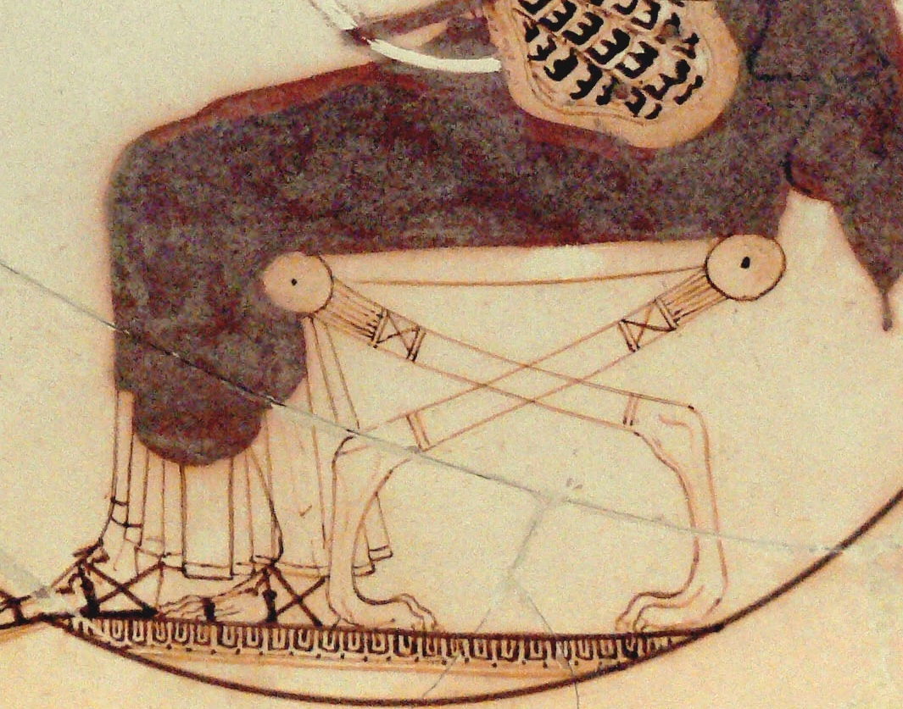
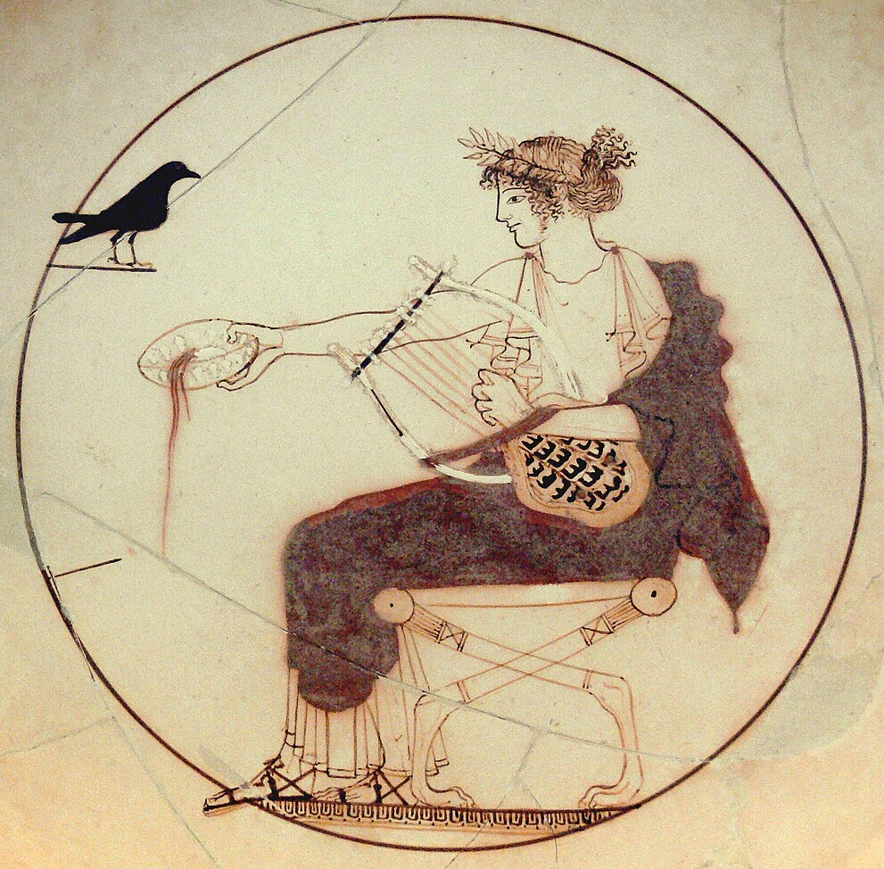

Dion de Plutarco¶
1. Sicilia y sur de Italia (s. V a.C.)¶

2. Reino de Dionisio I (406-367 a.C.)¶

3. Prefacio¶
3.1. La influencia de un maestro¶
1.1 ἆρά γε, ὥσπερ (1) ὁ Σιμωνίδης φησίν, ὦ Σόσσιε Σενεκίων, τοῖς Κορινθίοις οὐ μηνίειν τὸ Ἴλιον ἐπιστρατεύσασι μετὰ τῶν Ἀχαιῶν, ὅτι κἀκείνοις οἱ περὶ Γλαῦκον (2) ἐξ ἀρχῆς Κορίνθιοι γεγονότες συνεμάχουν προθύμως, οὕτως εἰκὸς (3) τῇ Ἀκαδημείᾳ μήτε Ῥωμαίους μήτε Ἕλληνας ἐγκαλεῖν ἴσον φερομένους ἐκ τῆς γραφῆς ταύτης (4), ἣ τόν τε Βρούτου περιέχει βίον καὶ τόν Δίωνος, 2 ὧν ὁ μὲν αὐτῷ Πλάτωνι πλησιάσας, ὁ δὲ τοῖς λόγοις ἐντραφεὶς τοῖς Πλάτωνος, ὥσπερ ἐκ μιᾶς ὥρμησαν ἀμφότεροι παλαίστρας ἐπὶ τοὺς μεγίστους ἀγῶνας.
Notas
- ὥσπερ ... οὕτως ... : "al igual que ... así (también)..."
- οἱ περὶ Γλαῦκον ἐξ ἀρχῆς Κορίνθιοι γεγονότες: los antepasados de Glauco eran corintios.
- εἰκὸς ... ἐγκαλεῖν: εἰκός ἐστι + inf. 'es razonable/natural'.
- τῆς γραφῆς ταύτης: la presente obra de Plutarco.
3 καὶ τὸ (1) μὲν ὅμοια πολλὰ καὶ ἀδελφὰ πράξαντας μαρτυρῆσαι (1) τῷ καθηγεμόνι (2) τῆς ἀρετῆς ὅτι δεῖ φρονήσει καὶ δικαιοσύνῃ δύναμιν ἐπὶ τὸ αὐτὸ καὶ τύχην συνελθεῖν (3), ἵνα κάλλος ἅμα καὶ μέγεθος αἱ πολιτικαὶ πράξεις λάβωσιν, οὐ θαυμαστόν ἐστιν.
Notas
- τὸ ... μαρτυρῆσαι ... οὐ θαυμαστόν ἐστιν:
- τῷ καθηγεμόνι τῆς ἀρετῆς: Platón era 'el guía' de ambos.
- φρονήσει καὶ δικαιοσύνῃ δύναμιν ἐπὶ τὸ αὐτὸ καὶ τύχην συνελθεῖν: 'A (nom.) se reúne (συνέρχομαι) con B (dat.) en el mismo lugar (ἐπὶ τὸ αὐτὸ)'.
- Colonias griegas

4 ὡς γὰρ (1) Ἱππόμαχος ο ἀλείπτης ἔλεγε τοὺς γεγυμνασμένους παρʼ αὐτῷ (4) καὶ (2) κρέας ἐξ ἀγορᾶς ἰδὼν φέροντας ἐπιγνῶναι πόρρωθεν, οὕτω τόν λόγον ἐστὶν εἰκὸς τῶν πεπαιδευμένων ὁμοίως (3) ἕπεσθαι ταῖς πράξεσιν, ἐμμέλειάν τινα καὶ ῥυθμὸν ἐπιφέροντα μετὰ τοῦ πρέποντος.
Notas
- γὰρ: esta partícula introduce secciones que explican lo dicho anteriormente; por ejemplo, elaboran, ejemplifican, amplían, etc. lo previamente expuesto.
- καὶ ... ἰδὼν φέροντας: 'incluso viéndolos'/'viéndolos incluso traer ...' > 'simplemente con verlos traer ...'
- τῶν πεπαιδευμένων ὁμοίως: 'educados de la misma manera', es decir, en las enseñanzas de Platón.
- τοὺς γεγυμνασμένους παρʼ αὐτῷ: 'los adiestrados junto a él': 'junto a él' > 'en su gimnasio' > 'por él'.
3.2. Fortunas comunes: ¿malos espíritus?¶
2.1 αἱ δὲ τύχαι, τοῖς συμπτώμασι μᾶλλον ἢ ταῖς προαιρέσεσιν (1) οὖσαι αἱ αὐταί, συνάγουσι τῶν ἀνδρῶν τοὺς βίους εἰς ὁμοιότητα (2).
Note
- τοῖς συμπτώμασι μᾶλλον ἢ ταῖς προαιρέσεσιν: dat. de causa 'por coincidencias más que por preferencias'.
- συνάγουσι τῶν ἀνδρῶν τοὺς βίους εἰς ὁμοιότητα: 'los reúnen en similitud' > 'los hacen comparables'.
2 προανῃρέθησαν (1) γὰρ ἀμφότεροι τοῦ τέλους, εἰς ὃ (2) προὔθεντο τὰς πράξεις ἐκ πολλῶν καὶ μεγάλων ἀγώνων καταθέσθαι μὴ δυνηθέντες.
Note
- γάρ: explicativo.
- προανῃρέθησαν ... τοῦ τέλους: 'fueron levantados (ἀνῃρέθησαν, quitados de en medio > asesinados) antes (προ-) del fin/propósito (τοῦ τέλους)'.
- τοῦ τέλους, εἰς ὃ προὔθεντο τὰς πράξεις ἐκ πολλῶν καὶ μεγάλων ἀγώνων καταθέσθαι μὴ δυνηθέντες: 'antes del propósito (τοῦ τέλους), al que (εἰς ὃ) se habían propuesto (προὔθεντο) sus acciones (τὰς πράξεις) después de muchas y grandes hazañas (ἐκ πολλῶν καὶ μεγάλων ἀγώνων) emplear/dedicar (καταθέσθαι) no pudiendo (μὴ δυνηθέντες).
3 ὃ δὲ πάντων θαυμασιώτατον, ὅτι καὶ τὸ δαιμόνιον ἀμφοτέροις ὑπεδήλωσε τὴν τελευτήν, ὁμοίως ἑκατέρῳ φάσματος εἰς ὄψιν οὐκ εὐμενοῦς παραγενομένου.
Note
- ὃ δὲ πάντων θαυμασιώτατον, ὅτι ...: 'Y lo más sorprendente de todo, (que) ...'. Es una colocación frecuente. Es un falso relativo (ὃ) más un adjetivo (normalmente en grado superlativo) que lo califica (θαυμασιώτατον) que se refiere al fragmento siguiente presentado mediante una completiva (ὅτι): 'Y lo (que es) más X (es) que ...'.
4 καίτοι λόγος (1) τίς ἐστι τῶν ἀναιρούντων τὰ τοιαῦτα, μηδενὶ ἂν (2) νοῦν ἔχοντι προσπεσεῖν φάντασμα δαίμονος μηδὲ εἴδωλον, ἀλλὰ παιδάρια καὶ γύναια (3) καὶ παραφόρους διʼ ἀσθένειαν ἀνθρώπους ἔν τινι πλάνῳ ψυχῆς ἢ δυσκρασίᾳ σώματος γενομένους δόξας ἐφέλκεσθαι κενὰς καὶ ἀλλοκότους, δαίμονα πονηρὸν ἐν αὑτοῖς τὴν δεισιδαιμονίαν[*] ἔχοντας.
Note
- λόγος τίς ἐστι τῶν ἀναιρούντων ... προσπεσεῖν: 'existe (ἐστι) cierto razonamiento (λόγος τίς) por parte de quienes eliminan/descartan tales cosas (τῶν ἀναιρούντων τὰ τοιαῦτα) de que no se le presentaría (προσπεσεῖν)'.
- μηδενὶ ἂν νοῦν ἔχοντι προσπεσεῖν: la partícula ἄν indica que hay una relación entre el participio y el infinitivo irreal: 'a nadie que tuviera mente/estuviera en su sano juicio se le aparecería'.
- παιδάρια καὶ γύναια: παῖς/παιδ-ός + άριον 'niñito'; γυνή + ιον > γύναιον 'mujercita': diminutivo afectivo/despectivo.
5 εἰ δὲ Δίων καὶ Βροῦτος, ἄνδρες ἐμβριθεῖς καὶ φιλόσοφοι καὶ πρὸς οὐδὲν ἀκροσφαλεῖς οὐδʼ εὐάλωτοι πάθος, οὕτως ὑπὸ φάσματος διετέθησαν ὥστε καὶ φράσαι πρὸς ἑτέρους, οὐκ οἶδα μὴ (2) τῶν πάνυ παλαιῶν τὸν ἀτοπώτατον ἀναγκασθῶμεν προσδέχεσθαι λόγον, ὡς τὰ φαῦλα δαιμόνια καὶ βάσκανα, 6 προσφθονοῦντα τοῖς ἀγαθοῖς ἀνδράσι καὶ ταῖς πράξεσιν ἐνιστάμενα, ταραχὰς καὶ φόβους ἐπάγει, σείοντα καὶ σφάλλοντα τὴν ἀρετήν, ὡς μὴ (1) διαμείναντες ἀπτῶτες ἐν τῷ καλῷ καὶ ἀκέραιοι βελτίονος ἐκείνων μοίρας μετὰ τὴν τελευτὴν τύχωσιν.
Note
- μὴ διαμείναντες ... τύχωσιν: la negación va con el participio y con el verbo principal 'para que no permanezcan ... y así no obtengan ...'
- οὐκ οἶδα μὴ: Madvig δέδοικα. No es necesario φοβέομαι + μή 'me temo que' ≈ 'quizá'; οὐκ οἶδα 'no sé' ≈ 'quizá': la equivalencia entre ambas expresiones (incertidumbre epistémica) hace que la segunda pueda tomar una completiva encabezada por μή.
7 ἀλλὰ ταῦτα μὲν εἰς ἄλλον ἀνακείσθω λόγον. ἐν τούτῳ δέ, p.6 δωδεκάτῳ τῶν παραλλήλων ὄντι βίων, τὸν τοῦ πρεσβυτέρου προεισαγάγωμεν.
4. Dion y Dionisio el Viejo¶
4.1. Las dos esposas de Dionisio I¶
3.1 Διονύσιος ὁ πρεσβύτερος εἰς τὴν ἀρχὴν καταστάς (2) εὐθὺς (4) ἔγημε (3) τὴν Ἑρμοκράτους τοῦ Συρακουσίου θυγατέρα. 2 ταύτην, οὔπω τῆς τυραννίδος ἱδρυμένης βεβαίως, ἀποστάντες οἱ Συρακούσιοι δεινὰς καὶ παρανόμους ὕβρεις εἰς τὸ σῶμα καθύβρισαν, ἐφʼ αἷς προήκατο (1) τὸν βίον ἑκουσίως.
Note
- προήκατο: προ-ίημι.
- καταστάς: καθ-ί-στη-μι (α)κατ-έ-στη-ν κατα-στά-ντ-ς > κατα-στά-ς; (β) ἔ-στη-σα στή-σα-ντ-ς.
- ἔγημε: γαμέω ἔ-γαμ-σα > ἔ-γημ-α.
- εὐθὺς: 'en cuanto'.
3 Διονύσιος δὲ τὴν ἀρχὴν ἀναλαβὼν (2) καὶ κρατυνάμενος αὖθις ἄγεται δύο γυναῖκας ἅμα, τὴν μὲν ἐκ Λοκρῶν ὄνομα Δωρίδα, τὴν δὲ ἐπιχώριον Ἀριστομάχην, θυγατέρα Ἱππαρίνου, πρωτεύσαντος ἀνδρὸς Συρακουσίων καὶ Διονυσίῳ συνάρξαντος ὅτε πρῶτον (1) αὐτοκράτωρ ἐπὶ τὸν πόλεμον ᾑρέθη στρατηγός.
Note
- ὅτε πρῶτον: 'tan pronto como', 'en cuanto'.
- ἀναλαβὼν: ἀναλαμβάνω 're-cuperar'. El prefijo verbal ἀνα- indica que algo sube o vuelve a su situación anterior.
4 λέγεται (4) δʼ ἡμέρᾳ μὲν ἀμφοτέρας ἀγαγέσθαι (3) μιᾷ καὶ μηδενὶ γενέσθαι φανερὸς (1) ἀνθρώπων ὁποτέρᾳ προτέρᾳ συνέλθοι (2), τὸν δὲ ἄλλον χρόνον ἴσον νέμων ἑαυτὸν διατελεῖν (5) ἑκατέρᾳ, κοινῇ μὲν εἰθισμένων δειπνεῖν μετʼ αὐτοῦ, παρὰ νύκτα δὲ ἐν μέρει συναναπαυομένων.
Note
- γενέσθαι φανερὸς ἀνθρώπων ὁποτέρᾳ προτέρᾳ συνέλθοι: construcción personal (Dionisio concierta con φανερός): 'Dionisio estuvo claro (γενέσθαι φανερὸς) con cuál de las dos (ὁποτέρᾳ) primera (προτέρᾳ) se unió (συνέλθοι)'. En español empleamos la construcción impersonal (la interrogativa indirecta es sujeto): ' estuvo claro (γενέσθαι φανερὸν) con cuál de las dos (ὁποτέρᾳ) primera (προτέρᾳ) ὁ Διόνυσος (Dionisio) se unió (συνέλθοι)'. A diferencia del español, en inglés estás construcciones personales son frecuenta: He is likely to come tomorrow 'Él probable venir mañana' > 'Es probable que él venga mañana'.
- συνέλθοι: optativo oblicuo: optativo en subordinada que depende de un verbo en pasado.
- ἀγαγέσθαι: ἄγομαι γυναῖκα 'llevarse una mujer (a casa)' > 'casarse'.
- λέγεται: construcción personal: 'Dionisio es dicho haberse casado' > 'se dice que Dionisio se casó'.
- νέμων ἑαυτὸν διατελεῖν: διατελέω + participio (nom.) 'seguir haciendo algo'. El participio νέμων está en nominativo porque el infinitivo depende de λέγεται, cuyo sujeto es ὁ Διονύσιος. En una construcciónj impersonal el participio estaría en acusativo: λέγεται [τὸν Διονύσιον νέμοντα ἑαυτὸν διατελεῖν].
graph TB A("λέγεται δʼ ") B("μὲν") B-->B1 B-->B2-->B21 B1("ἡμέρᾳ μὲν ἀμφοτέρας ἀγαγέσθαι μιᾷ") B2("καὶ μηδενὶ γενέσθαι φανερὸς ἀνθρώπων ") B21("ὁποτέρᾳ προτέρᾳ συνέλθοι") C0("δὲ") C("τὸν δὲ ἄλλον χρόνον ἴσον νέμων ἑαυτὸν διατελεῖν ἑκατέρᾳ") C1("κοινῇ μὲν εἰθισμένων δειπνεῖν μετʼ αὐτοῦ") C2("παρὰ νύκτα δὲ ἐν μέρει συναναπαυομένων.") A-->B A-->C0-->C C-->|"μὲν"|C1 C-->|"δὲ"|C2
5 καίτοι τῶν Συρακουσίων ἐβούλετο τὸ πλῆθος τὴν ἐγγενῆ πλέον ἔχειν τῆς ξένης· ἀλλὰ ἐκείνῃ προτέρᾳ ὑπῆρχε (1) τεκούσῃ (2) τὸν πρεσβεύοντα τῆς Διονυσίου γενεᾶς υἱὸν αὐτῇ βοηθεῖν πρὸς τὸ γένος.
Note
- ὑπῆρχε ... βοηθεῖν: ὑπάρχω + Inf 'el hecho es que', 'es posible que'.
- τεκούσῃ: τίκτω (τεκ-, τοκ-) τέκ-νον, tocólogo: ἔ-τεκ-ον
6 ἡ δὲ Ἀριστομάχη πολὺν χρόνον ἄπαις (1) συνῴκει (2) τῷ Διονυσίῳ καίπερ σπουδάζοντι (5) περὶ τὴν ἐκ ταύτης τέκνωσιν, (3) ὅς γε καὶ τὴν μητέρα τῆς Λοκρίδος αἰτιασάμενος καταφαρμακεύειν τὴν Ἀριστομάχην ἀπέκτεινε (4).
Note
- ἄπαις: ἄ-παις 'sin hijo'.
- συνῴκει: συν-ῴκει 'con-vivia'. Los verbos prefijados con συν- suelen tomar un dativo de compañía.
- τέκνωσιν: τίκτω 'parir' (aor. ἔ-τεκ-ον) > τέκνον 'hijo' > τεκν-όω 'engendrar' > τέκν-ω-σις 'procreación'.
- ἀπέκτεινε: ἀπο-κτεν-yω > ἀποκτείνω: (a) imperf. ἀπ-έ-κτειν-ε; (b) aor. ἀπ-ε-κτεν-σε > ἀπ-έ-κτειν-ε διαφθείρω: διαφθερyω > διαφθείρω, (a) imperf. δι-έ-φθείρ-ε; (b) aor. δι-έ-φθερ-σε > δι-έ-φθείρ-ε.
- καίπερ σπουδάζοντι: se refiere a Dionisio; καίπερ σπουδάζουσα περὶ τὴν ἐκ τούτου τέκνωσιν
5. Primer viaje de Platón a Sicilia (388 a.C.)¶
5.1. El alumno del filósofo¶
4.1 ταύτης (1) ἀδελφὸς ὢν ὁ Δίων ἐν ἀρχῇ μὲν (2) εἶχε τιμὴν ἀπὸ τῆς ἀδελφῆς, ὕστερον δὲ (2) τοῦ φρονεῖν διδοὺς πεῖραν, ἤδη καθʼ ἑαυτὸν ἠγαπᾶτο παρὰ τῷ τυράννῳ (3).
Note
- El párrafo empieza sin ningún conector (partícula). Este hecho (conexión asindética) es marginal en griego antiguo.
- ὁ Δίων ἐν ἀρχῇ μὲν ... ὕστερον δὲ ...: se contrastan dos informaciones sobre Dion.
- παρὰ τῷ τυράννῳ: 'era amado junto al tirano' > 'era amado en el entorno del tirano' > 'era amado por el tirano'. La interpretación como agente es contextual: 'En España se come mucha carne' > 'España/los españoles come(n) mucha carne'.
graph TB A("O") A-->A1("Circunstancia")-->A11("ταύτης ἀδελφὸς ὢν<br>siendo hermano de ella") A-->A21("Sujeto")-->A2("ὁ Δίων<br>Dion") A-->A0("Predicado") A0-->|"μὲν"|A3("ἐν ἀρχῇ μὲν εἶχε τιμὴν ἀπὸ τῆς ἀδελφῆς<br>al principio gozaba de honores gracias a su hermana") A0-->|"δὲ"|A4("ὕστερον δὲ ... ἤδη καθʼ ἑαυτὸν ἠγαπᾶτο παρὰ τῷ τυράννῳ<br>pero después ... ya por sí mismo era amado junto al tirano") A4-->|"..."|A41("τοῦ φρονεῖν διδοὺς πεῖραν<br>como daba (continuamente) prueba de su prudencia")
2 καὶ πρὸς ἅπασι τοῖς ἄλλοις (1) εἴρητο (2) τοῖς ταμίαις ὅ τι ἂν αἰτῇ (3) Δίων διδόναι, δόντας δὲ πρὸς αὐτὸν αὐθημερὸν φράζειν.
Note
- πρὸς ἅπασι τοῖς ἄλλοις: 'además de las demás cosas' > 'entre otras cosas'.
- εἴρητο τοῖς ταμίαις ... διδόναι: 'estaba dicho a los tesoreros que dieran' > 'los tesoreros tenían órdenes de dar'. El infnitivo con los verbos de decir son ambiguos entre una interpretación declarativa ('decía que Pedro venía') y otra directiva ('decía que Pedro viniera').
- ὅ τι ἂν αἰτῇ Δίων: 'lo que Dion pidiera'.
- Subjuntivo + ἂν: interpretación eventual que en oraciones relativas conduce a una interpretación indeterminada del referente: (a) 'busco un libro que explica la teoría de la relatividad' (un libro concreto); (b) 'busco un libro que explique la teoría de la relatividad' (cualquier libro l respecto).
- αἰτῇ < αἰτέ-η-σαι (subjuntivo)/αἰτέ-ε-σαι (indicativo)
- Anáfora cero (cf. ø): el complemento directo e indirecto en griego puede no estar explícito. En español hay que suplirlo neceariamente. El español solo tiene anáfora cero en posición sujeto.
graph TB A0("Discurso")-->A00("Oración 1")-->A000("(Fragmentos anteriores)") A0-->|"καὶ"|A1("Oración 2") A1-->A2("Focalizador")-->A21("πρὸς ἅπασι τοῖς ἄλλοις<br>además de todo lo demás<br>entre otras cosas") A1-->A3("Predicado")-->A31("εἴρητο<br>estaba dicho (ordenado)") A1-->A4("Complemento indirecto")-->A41("τοῖς ταμίαις<br>a los tesoreros") A1-->A5("Sujeto<br>(completivas de infinitivo)") A5-->A51("διδόναι<br>que dieran") A51-->A510("ø<br>(ellos, ac.)") A51-->A511("ὅ τι ἂν αἰτῇ Δίων<br>lo que pidiera Dion") A51-->A512("ø<br>(a Dion)") A5-->|"δὲ"|A52("... δὲ ... φράζειν<br>y que indicaran") A52-->A520("ø<br>(ellos, ac.)") A52-->A521("δόντας<br>tras dár(selo)") A52-->A524("ø<br>(eso)") A52-->A522("πρὸς αὐτὸν<br>a él") A52-->A523("αὐθημερὸν<br>el mismo día")
3 ὢν δὲ καὶ πρότερον ὑψηλὸς τῷ ἤθει καὶ μεγαλόφρων καὶ ἀνδρώδης, ἔτι μᾶλλον ἐπέδωκε πρὸς ταῦτα (1) θείᾳ τινὶ τύχῃ Πλάτωνος εἰς Σικελίαν παραβαλόντος (2), 4 κατʼ οὐδένα λογισμὸν ἀνθρώπινον·
Note
- ἐπέδωκε πρὸς ταῦτα: 'añadió a esto' > 'incrementó sus virtudes'. πρὸς ταῦτα: se refiere a ser ὑψηλὸς ... καὶ μεγαλόφρων καὶ ἀνδρώδης.
- παραβαλόντος: 'prolongando su navegación hasta Sicilia'. Como se explica después, Platón había viajado hasta Italia y desde allí, costeando (παρα-) prolongó (παρα-) su viaje hasta Siracusa.
ἀλλὰ (1) δαίμων τις, ὡς ἔοικε (4), πόρρωθεν ἀρχὴν ἐλευθερίας βαλλόμενος Συρακουσίοις, καὶ τυραννίδος κατάλυσιν μηχανώμενος, ἐκόμισεν ἐξ Ἰταλίας εἰς Συρακούσας Πλάτωνα καὶ Δίωνα συνήγαγεν εἰς λόγους αὐτῷ (2), 5 νέον μὲν ὄντα κομιδῇ (5), πολὺ δὲ εὐμαθέστατον (3) ἁπάντων τῶν Πλάτωνι συγγεγονότων καὶ ὀξύτατον ὑπακοῦσαι πρὸς ἀρετήν, 6 ὡς αὐτὸς γέγραφε Πλάτων, καὶ τὰ πράγματα μαρτυρεῖ.
Note
- ἀλλὰ δαίμων τις: la adversativa responde a la negación anterior κατʼ οὐδένα λογισμὸν ἀνθρώπινον.
- Δίωνα συνήγαγεν εἰς λόγους αὐτῷ: 'unió a Dion con Platón (αὐτῷ) en conversaciones' > 'hizo que Dion entrara en conversaciones con Platón'.
- εὐμαθέστατον: εὐμαθής, ές
- ἔοικα: *weik- εἴκω, *we-woik-a > ἔ-οικ-α.
- κομιδῇ: 'realmente joven'.
τραφεὶς γὰρ (2) ἐν ἤθεσιν ὑπὸ τυράννῳ ταπεινοῖς, καὶ βίου μὲν ἀνίσου καὶ καταφόβου, θεραπείας δὲ νεοπλούτου καὶ τρυφῆς ἀπειροκάλου (4) καὶ διαίτης ἐν ἡδοναῖς καὶ πλεονεξίαις τιθεμένης τὸ καλὸν ἐθὰς (5) καὶ μεστὸς γενόμενος (6), 7 ὡς πρῶτον (1) ἐγεύσατο λόγου καὶ φιλοσοφίας ἡγεμονικῆς πρὸς ἀρετήν, ἀνεφλέχθη τὴν ψυχὴν (3) ταχύ, καὶ τῇ περὶ αὐτὸν εὐπειθείᾳ (8) τῶν καλῶν ἀκάκως πάνυ καὶ νεωτερικῶς προσδοκήσας ὑπὸ τῶν αὐτῶν λόγων ὅμοια πείσεσθαι (9) Διονύσιον, ἐσπούδασε καὶ διεπράξατο ποιησάμενος σχολὴν (7) αὐτὸν ἐντυχεῖν Πλάτωνι καὶ ἀκοῦσαι.
Note
graph TB
A("γενόμενος<br>llegando a estar") --> B("ἐθὰς καὶ μεστὸς<br>acostumbrado e incluso harto")
B-->|"μὲν"|C("μὲν")-->C1("βίου μὲν ἀνίσου<br>a una vida desigual")
C-->|"καὶ"|C2("καὶ καταφόβου<br>y sometida al miedo")
B-->|"δὲ"|D("δὲ")
D-->D1("θεραπείας δὲ νεοπλούτου<br>y a un cuidado de nuevo rico")
D-->|"καὶ"|D2("καὶ τρυφῆς ἀπειροκάλου<br>y a un lujo desconocedor de lo hermoso")
D-->|"καὶ"|D3("καὶ διαίτης ἐν ἡδοναῖς καὶ πλεονεξίαις τιθεμένης τὸ καλὸν<br>y a un estilo de vida que pone en los placeres y excesos el concepto de lo hermoso")
- ὡς πρῶτον: 'tan pronto como', 'en cuanto'.
- γάρ: esta unidad introduce una explicación a lo expuesto previamente.
- ἀνεφλέχθη τὴν ψυχὴν: 'se incendió en su alma (ψυχήν)': acusativo de la parte.
- ἀπειροκάλου: ἀ-πειρό-καλος 'sin (ἀ-) experiencia (πεῖρα) en la belleza (κάλλος)'.
- ἐθάς, άδος, ὁ, ἡ: 'acostumbrado, usual'.
- { (βίου μὲν ἀνίσου καὶ καταφόβου), (θεραπείας δὲ νεοπλούτου καὶ τρυφῆς ἀπειροκάλου καὶ διαίτης ἐν ἡδοναῖς καὶ πλεονεξίαις τιθεμένης τὸ καλὸν) } ἐθὰς καὶ μεστὸς γενόμενος.
- ποιησάμενος σχολὴν: 'hacer tiempo libre'.
- εὐπειθείᾳ: emendado con εὐπάθεια por Zie. τῇ περὶ αὐτὸν εὐπειθείᾳ: 'a causa de lo que sus buena experiencia con lo hermoso/la belleza'. πείθω convencer > εὐ-πειθ-ής, ές bien-convenc-ible > εὐ-πείθ-εσ-ια bien-convenc-ibil-idad > εὐ-πείθ-ε-ια
- πείσεσθαι: futuro de πάσχω: πενθ-σ-ο-μαι > πείσομαι. No confundir con el futuro medio de πείθω: πείθ-σ-ο-μαι > πεί-σ-ο-μαι.
5.2. Dionisio I rechaza la filosofía¶
5.1 γενομένης δὲ τῆς συνουσίας αὐτοῖς τὸ μὲν ὅλον (2) περὶ ἀνδρὸς ἀρετῆς, πλείστων δὲ περὶ ἀνδρείας διαπορηθέντων, ὡς πάντας[*] μᾶλλον ὁ Πλάτων ἢ τοὺς τυράννους ἀπέφαινεν ἀνδρείους, ἐκ δὲ τούτου τραπόμενος περὶ δικαιοσύνης ἐδίδασκεν ὡς μακάριος μὲν ὁ τῶν δικαίων, ἄθλιος δὲ ὁ τῶν ἀδίκων βίος, 2 οὔτε τοὺς λόγους ἔφερεν ὁ τύραννος ὥσπερ (1) ἐξελεγχόμενος, ἤχθετό τε τοῖς παροῦσι θαυμαστῶς ἀποδεχομένοις (3) τὸν ἄνδρα καὶ κηλουμένοις ὑπὸ τῶν λεγομένων (4).
Note
- ὥσπερ ἐξελεγχόμενος: 'como (si) estuviera siendo puesto a prueba'.
- τὸ ... ὅλον: (τὸ) ὅλον (a) 'completamente'; (b) '(hablando) en general'.
- ἀποδεχομένοις: participio predicativo del segundo argumento: 'se enfadó con los presentes (τοῖς παροῦσι) por aprobarlo (ἀποδεχομένοις)'.
- τῶν λεγομένων: 'lo dicho por Platón' > 'sus palabras'. ¿Participios sustantivados o cambio de clase de palabra?: esp. hecho, dicho, edicto, escrito, precepto, etc.
graph LR O("Discurso")-->F("Oraciones<br>previas")-->F1("...") O-->|"δὲ"|A("Oración<br>actual") A-->B("Gentivo<br>absoluto")-->B1("γενομένης δὲ τῆς συνουσίας αὐτοῖς<br>producido el encuentro") B1-->|"μὲν"|B11("τὸ μὲν ὅλον περὶ ἀνδρὸς ἀρετῆς<br>en general sobre la virtud del hombre") B1-->|"δὲ"|B12("πλείστων δὲ περὶ ἀνδρείας διαπορηθέντων<br>pero discutidas sobre todo cuestiones acerca de" la valentía) A-->|"ὡς"|C("Causa") C-->C1 C-->|"δὲ"|C2 C1("ὡς πάντας μᾶλλον ὁ Πλάτων ἢ τοὺς τυράννους ἀπέφαινεν ἀνδρείους<br>como Platón mostraba a todos más valientes que a los tiranos") C2("ἐκ δὲ τούτου τραπόμενος περὶ δικαιοσύνης ἐδίδασκεν<br>y, apartándose de ese tema, enseñaba") C2-->|"ὡς "|C21("Completiva CD")-->|"μὲν"|C211("ὡς μακάριος μὲν ὁ τῶν δικαίων<br>que la vida de los justos era dichosa") C21("Completiva CD")-->|"δὲ"|C212("ἄθλιος δὲ ὁ τῶν ἀδίκων βίος<br>mientras que la de los injustos desdichada") A-->|"οὔτε"|D D("Predicado1")-->D1("οὔτε τοὺς λόγους ἔφερεν ὁ τύραννος ὥσπερ ἐξελεγχόμενος<br>el tirano no soportaba sus razonamientos<br>como (si estuviera siendo) puesto a prueba") A-->|"τε"|E E("Predicado2")-->E1("ἤχθετό τε τοῖς παροῦσι<br>y se molestaba con los presentes") E1-->E11("θαυμαστῶς ἀποδεχομένοις τὸν ἄνδρα<br>por aceptar al hombre con admiración") E1-->|"καὶ"|E12("καὶ κηλουμένοις ὑπὸ τῶν λεγομένων<br>y por dejarse hechizar por sus palabras")
3 τέλος (1) δὲ θυμωθεὶς καὶ παροξυνθείς ἠρώτησεν αὐτόν ὅ τι δὴ βουλόμενος εἰς Σικελίαν παραγένοιτο.
Note
- τέλος: adverbial 'al final'.
4 τοῦ δὲ φήσαντος ἀγαθὸν ἄνδρα ζητεῖν, ὑπολαβὼν ἐκεῖνος, «ἀλλὰ νὴ τοὺς θεοὺς», εἶπε, «καὶ φαίνῃ μήπω τοιοῦτον εὑρηκώς» (1).
Note
- φαίνῃ ... εὑρηκώς: φαίνομαι + participio/infinitivo.
- φαίνομαι εὑρηκώς (participio): 'se ve que lo has encontrado' > certidumbre epistémica 'está claro que lo has encontrado'.
- φαίνομαι εὑρηκέναι (infinitivo): 'parece que lo has encontrado' > incertidumbre epistémica 'puede que lo hayas encontrado'. = δοκέω1 'parecer'.
5 οἱ μὲν οὖν (1) περὶ τὸν Δίωνα τοῦτο τέλος ᾤοντο τῆς ὀργῆς γεγονέναι, καὶ τὸν Πλάτωνα σπεύδοντα συνεξέπεμπον (2) ἐπὶ τριήρους, ἣ Πόλλιν ἐκόμιζεν εἰς τὴν Ἑλλάδα τὸν Σπαρτιάτην 6 ὁ δὲ Διονύσιος κρύφα τοῦ Πόλλιδος ἐποιήσατο δέησιν (3) μάλιστα (4) μὲν ἀποκτεῖναι τὸν ἄνδρα κατὰ πλοῦν (5), εἰ δὲ μή, πάντως (4) ἀποδόσθαι· βλαβήσεσθαι (8) γὰρ (6) οὐδέν, ἀλλʼ εὐδαιμονήσειν ὁμοίως, δίκαιον ὄντα, κἂν (7) δοῦλος γένηται.
Note
- μὲν οὖν: esta combinación se utiliza (a) para cerrar o resumir una unidad discursiva antes de comenzar otra o (b) para introducir directamente la siguiente sección.
- συνεξέπεμπον: 'se unían (συν-) a quienes despedían (ἐκ-πέμπω) a Platón'.
- τοῦ Πόλλιδος ἐποιήσατο δέησιν: ἐποιήσατο δέησιν = ἐδεήσατο. δέομαι 'pedir algo (ac/gen) a alguien ([παρά +] gen)'.
- μάλιστα ... , εἰ δὲ μή, πάντως ...: 'sobre todo ..., pero, de lo contrario, en cualquier caso/al menos ....'.
- κατὰ πλοῦν: 'durante la travesía'.
- βλαβήσεσθαι γὰρ οὐδέν, ἀλλʼ εὐδαιμονήσειν: la unidad introducida por γάρ introduce las explicaciones de Dionisio y por eso los verbos están en infinitivo: se trata de un estilo indirecto: 'porque, según él, ....'.
- κἂν: κἄν = καὶ ἐάν: condicional 'incluso si ...' > concesiva 'aunque ...'. Cf. eng. even if.
- βλαβήσεσθαι: βλαφ-θή-σ-ε-σθαι
7 διὸ καὶ λέγεται (3) Πόλλις εἰς Αἴγιναν φέρων ἀποδόσθαι (1) Πλάτωνα, πολέμου πρὸς Ἀθηναίους ὄντος αὐτοῖς (4) καὶ ψηφίσματος ὅπως ὁ ληφθεὶς Ἀθηναίων ἐν Αἰγίνῃ πιπράσκηται (2).
Note
- ἀποδόσθαι: ἀποδίδομαι 'vender' = πιπράσκω, v. πέρνημι.
- πιπράσκηται: πιπράσκω, πέρνημι 'a. exportar para vender especialmente cautivos vendidos como esclavos, b. vender'.
- λέγεται Πόλλις ... ἀποδόσθαι: construcción personal 'Polis es dicho haber vendido' > 'se dice que Polis vendió'.
- πολέμου πρὸς Ἀθηναίους ὄντος αὐτοῖς: πόλεμός ἐστι μοι πρὸς τοὺς Ἀθηναίους. 'una guerra existe para mí con los atenienses' > 'tengo una guerra con los atenienses'.
8 οὐ μὴν ὅ γε (1) Δίων ἔλαττον εἶχε παρὰ τῷ Διονυσίῳ τιμῆς ἢ πίστεως, ἀλλὰ πρεσβείας τε τὰς μεγίστας διῴκει καὶ πεμπόμενος πρὸς Καρχηδονίους ἐθαυμάσθη διαφερόντως· καὶ τὴν παρρησίαν ἔφερεν αὐτοῦ μόνου σχεδόν ἀδεῶς λέγοντος τὸ παριστάμενον (2), ὡς καὶ τὴν περὶ Γέλωνος ἐπίπληξιν.
Note
- μὴν (...) γε: 'sin embargo': eliminación la inferencia lógica de que el disgusto de Dionisio I ante Platón pudiera haber maldispuesto al tirano contra Dion.
- τὸ παριστάμενον: 'lo que está presente a la mente, un pensamiento'.
9 χλευαζομένης (1) γὰρ (2), ὡς ἔοικε, τῆς Γέλωνος ἀρχῆς, αὐτόν τε τὸν Γέλωνα τοῦ Διονυσίου γέλωτα τῆς Σικελίας γεγονέναι φήσαντος, οἱ μὲν ἄλλοι τὸ σκῶμμα προσεποιοῦντο (3) θαυμάζειν, ὁ δὲ Δίων δυσχεράνας (2), «καὶ μὴν», ἔφη, «σὺ τυραννεῖς διὰ Γέλωνα πιστευθείς· διὰ σὲ δὲ οὐδεὶς ἕτερος πιστευθήσεται».
Note
- γάρ: la unidad introducida por esta partícula explica en qué consistió el ataque en relación a Gelón.
- δυσχεράνας: δυσχεραίνω 'no llevar bien, estar disgustado'.
- προσεποιοῦντο: προσ-ε-ποιέ-οντο > προσ-ε-ποιοῦ-ντο:
10 τῷ γὰρ ὄντι φαίνεται κάλλιστον μὲν Γέλων ἐπιδειξάμενος θέαμα μοναρχουμένην πόλιν, αἴσχιστον δὲ Διονύσιος.
Note
- γάρ: la unidad introducida por esta partícula explica el sentido de las palabras de Dion.
6. Dionisio el Joven¶
6.1. La sucesión de la tiranía¶
6.1 ὄντων δὲ Διονυσίῳ παίδων τριῶν μὲν ἐκ τῆς Λοκρίδος, τεττάρων δὲ ἐξ Ἀριστομάχης, ὧν δύο ἦσαν θυγατέρες, Σωφροσύνη καὶ Ἀρέτη, Σωφροσύνη μὲν Διονυσίῳ τῷ υἱῷ συνῴκησεν, Ἀρέτη δὲ Θεαρίδῃ τῷ ἀδελφῷ (1). τελευτήσαντος δὲ τοῦ ἀδελφοῦ Θεαρίδου Δίων ἔλαβε τὴν Ἀρετήν ἀδελφιδῆν οὖσαν.
Note
- τῷ ἀδελφῷ: se refiere a su hermano Teáridas.
2 ἐπεὶ δὲ νοσῶν ἔδοξεν ὁ Διονύσιος ἀβιώτως ἔχειν, ἐπεχείρησεν αὐτῷ διαλέγεσθαι περὶ τῶν ἐκ τῆς Ἀριστομάχης τέκνων ὁ Δίων, οἱ δʼ ἰατροὶ τῷ μέλλοντι τὴν ἀρχὴν διαδέχεσθαι χαριζόμενοι καιρὸν οὐ παρέσχον· 3 ὡς δὲ Τίμαιός (1) φησι, καὶ φάρμακον ὑπνωτικὸν αἰτοῦντι δόντες ἀφείλοντο τὴν αἴσθησιν αὐτοῦ, θανάτῳ συνάψαντες τὸν ὕπνον.
Note
- Τίμαιός: una de las fuentes históricas de Plutarco.
4 οὐ μὴν ἀλλὰ (2) συλλόγου πρώτου τῶν φίλων γενομένου παρὰ τὸν νέον Διονύσιον οὕτω διελέχθη περὶ τῶν συμφερόντων πρὸς τὸν καιρὸν ὁ Δίων ὥστε τοὺς ἄλλους ἅπαντας τῇ μὲν φρονήσει παῖδας ἀποδεῖξαι, τῇ δὲ παρρησίᾳ δούλους τῆς τυραννίδος ἀγεννῶς καὶ περιφόβως τὰ πολλὰ πρὸς χάριν (3) τῷ μειρακίῳ συμβουλεύοντας, 5 μάλιστα δὲ αὐτοὺς ἐξέπληξε τὸν ἀπὸ Καρχηδόνος κίνδυνον ἐπικρεμάμενον (5) τῇ ἀρχῇ δεδοικότας, ὑποσχόμενος, εἰ μὲν εἰρήνης δέοιτο (6) Διονύσιος, πλεύσας εὐθὺς εἰς Λιβύην ὡς (1) ἄριστα διαθήσεσθαι (7) τὸν πόλεμον (8), εἰ δὲ πολεμεῖν προθυμοῖτο (6), θρέψειν αὐτὸς (4) ἰδίοις τέλεσι καὶ παρέξειν εἰς τὸν πόλεμον αὐτῷ πεντήκοντα τριήρεις εὖ πλεούσας.[*]
Note
- ὡς ἄριστα: 'de la mejor manera (ἄριστα) posible (ὡς)'.
- οὐ μὴν ἀλλὰ:
- πρὸς χάριν: 'para agradarle'.
- αὐτὸς: 'él mismo'.
- ἐπικρεμάμενον: ἐπικρεμάννυμι, ἐπικρεμαννύω 'colgar sobre alguien' > 'amenazar'.
- δέοιτο ... προθυμοῖτο: optativos oblicuos.
- διαθήσεσθαι: futuro dependiendo de un verbo en pasado > esp. condicional 'dijo que '.
- διαθήσεσθαι τὸν πόλεμον: 'disponer la guerra' > 'ponerle fin'.
6.2. La corte del joven tirano¶
7.1 ὁ μὲν οὖν Διονύσιος ὑπερφυῶς τὴν μεγαλοψυχίαν ἐθαύμασε καὶ τὴν προθυμίαν ἠγάπησεν· 2 οἱ δὲ ἐλέγχεσθαι τῇ λαμπρότητι καὶ ταπεινοῦσθαι τῇ δυνάμει τοῦ Δίωνος οἰόμενοι, ταύτην εὐθὺς ἀρχὴν λαβόντες, οὐδεμιᾶς ἐφείδοντο (2) φωνῆς ᾗ τὸ μειράκιον ἐξαγριαίνειν ἔμελλον πρὸς αὐτόν, ὡς ὑπερχόμενον διὰ τῆς θαλάττης τυραννίδα καὶ περισπῶντα (3) ταῖς ναυσὶ τὴν δύναμιν εἰς τοὺς Ἀριστομάχης παῖδας, ἀδελφιδοῦς ὄντας αὐτῷ.
Note
- μὲν οὖν: se resume la sección anterior (comportamiento de Dion y efecto en Dionisio el joven) y se pasa a los cortesanos.
- ἐφείδοντο: φείδομαι 'ahorrar algo (gen)' > 'escatimar'.
- περισπῶντα: 'quitar de alrededor' > 'despojar a alguien de lo que lleva (ropa) o tiene (posesiones)'.
3 φανερώταται δὲ καὶ μέγισται τῶν εἰς φθόνον καὶ μῖσος αἰτιῶν ὑπῆρχον ἡ τοῦ βίου διαφορὰ καὶ τὸ τῆς διαίτης ἄμικτον (1).
Note
- τὸ τῆς διαίτης ἄμικτον: 'la falta de mezcla de su modo de vida'.
4 οἱ μὲν γὰρ, εὐθὺς ἐξ ἀρχῆς (1) νέου τυράννου καὶ τεθραμμένου φαύλως ὁμιλίαν καὶ συνήθειαν ἡδοναῖς καὶ κολακείαις καταλαμβάνοντες, ἀεί (2) τινας ἔρωτας καὶ διατριβὰς ἐμηχανῶντο ῥεμβώδεις (3) περὶ πότους καὶ γυναῖκας, καὶ παιδιὰς ἑτέρας ἀσχήμονας, 5 ὑφʼ ὧν ἡ τυραννὶς, ὥσπερ σίδηρος, μαλασσομένη, τοῖς μὲν ἀρχομένοις ἐφάνη φιλάνθρωπος, καὶ τὸ λίαν ἀπάνθρωπον ὑπανῆκεν, οὐκ ἐπιεικείᾳ τινὶ μᾶλλον ἢ ῥᾳθυμίᾳ τοῦ κρατοῦντος ἀμβλυνομένη.
Note
- εὐθὺς ἐξ ἀρχῆς: 'directamente desde el principio'.
- ἀεί: continuamente.
- ῥεμβώδεις:
Warning
- ῥεμβώδεις:
6 ἐκ δὲ τούτου προϊοῦσα καὶ νεμομένη κατὰ μικρὸν (1) ἡ περὶ τὸ μειράκιον ἄνεσις τοὺς ἀδαμαντίνους δεσμοὺς ἐκείνους, οἷς ὁ πρεσβύτερος Διονύσιος ἔφη δεδεμένην ἀπολείπειν τὴν μοναρχίαν, ἐξέτηξε καὶ διέφθειρεν.
Note
- κατὰ μικρὸν: κατὰ μικρὸν ἀεί 'poco a poco'
7 ἡμέρας γὰρ, ὥς φασιν, ἐνενήκοντα συνεχῶς ἔπινεν ἀρξάμενος (1), καὶ τὴν αὐλὴν ἐν τῷ χρόνῳ τούτῳ σπουδαίοις ἀνδράσι καὶ λόγοις ἄβατον καὶ ἀνείσοδον οὖσαν μέθαι καὶ σκώμματα καὶ ψαλμοὶ καὶ ὀρχήσεις καὶ βωμολοχίαι (2) κατεῖχον.
Note
- ἀρξάμενος: 'una vez que comenzaba a beber (se pasaba noventa días sin parar de beber).'.
- βωμολοχίαι: 'bufonerías'.
6.3. Juicio de Dion¶
8.1 ἦν οὖν, ὡς εἰκὸς, ὁ Δίων ἐπαχθής εἰς οὐδὲν ἡδὺ καὶ νεωτερικὸν ἐνδιδοὺς ἑαυτόν, διὸ καὶ πιθανὰ κακιῶν προσρήματα (1) ταῖς ἀρεταῖς ἐπιφέροντες αὐτοῦ διέβαλλον, ὑπεροψίαν τὴν σεμνότητα καὶ τὴν παρρησίαν αὐθάδειαν ἀποκαλοῦντες (2)·
Note
- προσρήματα: 'nombres, denominaciones'.
- ἀποκαλοῦντες: este participio explicita cómo calificaban negativamente cada una de sus virtudes.
καὶ νουθετῶν κατηγορεῖν ἐδόκει καὶ μὴ συνεξαμαρτάνων καταφρονεῖν. 2 ἀμέλει (1) δὲ καὶ φύσει τινὰ τὸ ἦθος ὄγκον (2) εἶχεν αὐτοῦ καὶ τραχύτητα δυσπρόσοδον (3) ἐντεύξει (4) καὶ δυσξύμβολον.
Note
- ἀμέλει: 'y además', 'es verdad, sin duda'.
- ὄγκον: ὄγκος 'bulto', 'masa' > 'orgullo'.
- δυσπρόσοδον: δυσ-πρόσ-οδος, ον 'difícil (δυσ-) de acercarse (-πρόσ-οδον)' > 'difícil de acercarse'.
- ἐντεύξει: ἔντευξις: dativo restrictitivo: 'díficil en las relaciones'.
3 οὐ γὰρ μόνον ἀνδρὶ (1) νέῳ καὶ διατεθρυμμένῳ (2) τὰ ὦτα (3) κολακείαις ἄχαρις ἦν συγγενέσθαι (4) καὶ προσάντης (5), πολλοὶ δὲ καὶ τῶν πάνυ χρωμένων (9) αὐτῷ καὶ τὴν ἁπλότητα καὶ τὸ γενναῖον ἀγαπώντων τοῦ τρόπου κατεμέμφοντο τῆς ὁμιλίας (6), ὡς (8) ἀγροικότερον καὶ βαρύτερον πολιτικῶν χρειῶν τοῖς δεομένοις συναλλάσσοντα (7).
Note
- ἀνδρὶ νέῳ καὶ διατεθρυμμένῳ: el joven Dionisio II.
- διατεθρυμμένῳ: θρύπτω 'romper'.
- τὰ ὦτα: acusativo de la parte: 'romper a alguien (ac. del todo) el brazo (ac. d ela parte)'.
- ἄχαρις ... συγγενέσθαι: fácil de/para convivir con él'.
- προσάντης: προσάντης ες 'empinado', 'hostil, adverso'.
- τοῦ τρόπου κατεμέμφοντο τῆς ὁμιλίας: καταμέμφομαι: (i) 'criticar a alguien (A ac.) por algo (B gen, etc.)'; (ii) 'critica algo (B ac.) de alguien (gen)/en alguien (ἐν+dat.)'
- συναλλάσσοντα: se refiere a Dion, que es el objeto de κατεμέμφοντο.
- ὡς ... συναλλάσσοντα: 'como teniendo relaciones': la partícula ὡς indica que se trata de la opinión subjetiva del sujeto de κατεμέμφοντο y no del hablante (Plutarco).
- χρωμένων αὐτῷ: χράομαι + dat. 'utilizar algo'; + dativo de persona 'tener trato con alguien'.
4 περὶ ὧν καὶ Πλάτων ὕστερον ὥσπερ ἀποθεσπίζων (3) ἔγραψε πρὸς αὐτόν ἐξευλαβεῖσθαι (1) τὴν αὐθάδειαν ὡς ἐρημίᾳ συνοικοῦσαν (2).
Note
- ἔγραψε πρὸς αὐτόν .... ἐξευλαβεῖσθαι: 'le pidió por escrito'. La completiva de infinitivo transpone al estilo indirecto tanto la fuerza ilocutiva declarativa como la imperativa.
- ὡς ... συνοικοῦσαν: razón aducida por Platón.
- ὥσπερ ἀποθεσπίζων: 'como dando un oráculo'. La conjunción ὥσπερ afecta al participio; se trata de una oración comparativa truncada: 'dijo como (diría) dando un oráculo'.
Traducción
| GRIEGO | ESPAÑOL |
|---|---|
| 4 περὶ ὧν καὶ Πλάτων ὕστερον ὥσπερ ἀποθεσπίζων ἔγραψε πρὸς αὐτόν ἐξευλαβεῖσθαι τὴν αὐθάδειαν ὡς ἐρημίᾳ συνοικοῦσαν. | Cosas sobre las que también Platón después, como si estuviera hablando proféticamente, le pidió por escrito que se precaviera de la soberbia porque, según él, era compañera de la soledad. |
5 οὐ μὴν ἀλλὰ τότε πλείστου δοκῶν ἄξιος ὑπάρχειν διὰ τὰ πράγματα καὶ μόνος ἢ μάλιστα τὴν τυραννίδα σαλεύουσαν ἀνορθοῦν καὶ διαφυλάττειν, ἐγίνωσκεν (2) οὐ πρὸς χάριν (1), ἀλλʼ ἄκοντος ὑπὸ χρείας τοῦ τυράννου πρῶτος ὢν (2) καὶ μέγιστος.
Note
- πρὸς χάριν, ἀλλʼ ἄκοντος ὑπὸ χρείας τοῦ τυράννου: 'no para favolecerlo, sino por la necesidad del tirano, a su pesar'.
- ἐγίνωσκεν ... ὢν: 'completiva' de participio: 'se daba cuenta de que era ...'.
6.4. El legado de Dionisio I: padre sobreprotector y tiranía suspicaz¶
9.1 αἰτίαν δέ τούτου τὴν ἀπαιδευσίαν εἶναι νομίζων ἐμβαλεῖν αὐτὸν εἰς διατριβὰς ἐλευθερίους ἐφιλοτιμεῖτο καὶ γεῦσαι (1) λόγων καὶ μαθημάτων ἠθοποιῶν, ὡς ἀρετήν τε παύσαιτο δεδιὼς καὶ τοῖς καλοῖς χαίρειν ἐθισθείη.
Note
- γεῦσαι: γεύω 'A (nom) hace probar a B (ac.) C (gen.)', γεύομαι 'B (nom.) prueba C (gen.)'.
2 φύσει γὰρ οὐ γεγόνει τῶν φαυλοτάτων τυράννων ὁ Διονύσιος, ἀλλʼ ὁ πατὴρ, δεδοικώς μὴ φρονήματος μεταλαβὼν (1) καὶ συγγενόμενος νοῦν ἔχουσιν ἀνθρώποις ἐπιβουλεύσειεν αὐτῷ καὶ παρέλοιτο τὴν ἀρχήν, ἐφρούρει κατάκλειστον οἴκοι, διʼ ἐρημίαν ὁμιλίας ἑτέρας καὶ ἀπειρίᾳ πραγμάτων, ὥς φασιν, ἁμάξια καὶ λυχνίας καὶ δίφρους (3) ξυλίνους καὶ τραπέζας τεκταινόμενον (2).
Note
- φρονήματος μεταλαβὼν: 'participando en la sensatez'.
- τεκταινόμενον: se refiere a Dionisio II, objeto directo de ἐφρούρει.
- δίφρους:



{kind=link}
3 οὕτω γὰρ ἦν ἄπιστος (2) καὶ πρὸς ἅπαντας ἀνθρώπους ὕποπτος (2) καὶ προβεβλημένος (1) διὰ φόβον ὁ πρεσβύτερος Διονύσιος ὥστε μηδὲ τῆς κεφαλῆς (3) τὰς τρίχας ἀφελεῖν[*] κουρικαῖς (4) μαχαίραις, ἀλλὰ τῶν πλαστῶν τις ἐπιφοιτῶν ἄνθρακι τὴν κόμην περιέκαιεν.
Note
- προβεβλημένος: 'lanzado hacia delante (para protegerse)'.
- ἄπιστος ... ὕποπτος: valor activo y no pasivo 'desconfiado ... suspicaz', y no pasivo 'increíble ... sospechoso'.
- τῆς κεφαλῆς τὰς τρίχας ἀφελεῖν: el genitivo (τῆς κεφαλῆς) está regido por el preverbio (ἀφ-ελεῖν).
- κουρικαῖς: κείρω, κουρά 'corte de pelo' > κουρικός 'para cortar el pelo'.
4 εἰσῄει δὲ πρὸς αὐτὸν εἰς τὸ δωμάτιον οὔτε ἀδελφὸς οὔθʼ υἱὸς ὡς ἔτυχεν (1) ἠμφιεσμένος, ἀλλʼ ἔδει πρὶν εἰσελθεῖν ἀποδύντα τὴν ἑαυτοῦ στολὴν ἕκαστον ἑτέραν ἀναλαβεῖν, ὁραθέντα γυμνὸν ὑπὸ τῶν φυλαττόντων.
Note
- ὡς ἔτυχεν ἠμφιεσμένος: 'vestido como por casualidad estuviera (vestido)' > 'tal y como estaba vestido'.
5 ἐπεὶ δὲ Λεπτίνης ὁ ἀδελφὸς αὐτῷ ποτε p.20 χωρίου φύσιν ἐξηγούμενος λαβὼν λόγχην παρά τινος τῶν δορυφόρων ὑπέγραψε (1) τὸν τόπον, ἐκείνῳ μὲν ἰσχυρῶς ἐχαλέπηνε, τὸν δέ δόντα τὴν λόγχην ἀπέκτεινεν.
Note
- ὑπέγραψε: 'dibujó en el suelo'.
6 ἔλεγε δέ τοὺς φίλους φυλάττεσθαι νοῦν ἔχοντας εἰδὼς καὶ βουλομένους (2) μᾶλλον τυραννεῖν ἢ τυραννεῖσθαι.
Note
- ἔχοντας εἰδὼς καὶ βουλομένους: 'completivas' de participio 'sabiendo que eran ... y querían ...'.
7 καὶ Μαρσύαν δέ τινα τῶν προηγμένων ὑπʼ αὐτοῦ καὶ τεταγμένων ἐφʼ ἡγεμονίας ἀνεῖλε δόξαντα κατὰ τοὺς ὕπνους σφάττειν αὐτόν, ὡς (2) ἀπʼ ἐννοίας μεθημερινῆς καὶ διαλογισμοῦ τῆς ὄψεως ταύτης εἰς τὸν ὕπνον αὐτῷ παραγενομένης (1).
Note
- ὡς ἀπʼ ἐννοίας μεθημερινῆς καὶ διαλογισμοῦ τῆς ὄψεως ταύτης εἰς τὸν ὕπνον αὐτῷ παραγενομένης: 'como si a Marsias esa visión (el sueño) se le hubiera aparecido (por la noche) como resultado de un pensamiento y un cálculo diurnos'.
- ὡς: la conjunción indica que se trata de una presentación de las ideas subjetivas de Dionisio y que el autor (Plutarco) no las comparte necesariamente.
8 ὁ μὲν δὴ (2) Πλάτωνι θυμωθείς ὅτι μὴ πάντων αὐτὸν ἀνθρώπων ἀνδρειότατον ὄντα ἀπέφηνεν, οὕτω περίφοβον καὶ τοσούτων ὑπὸ δειλίας (1) κακῶν μεστὴν εἶχε τὴν ψυχήν.
Note
- τοσούτων ὑπὸ δειλίας κακῶν: 'tantos males causados por la cobardía'.
- μὲν δὴ: se cierra la sección que trata de Dionisio el viejo y se pasa a hablar sobre su hijo.
6.5. Dion guía a Dionisio II¶
10.1 τὸν δʼ υἱὸν αὐτοῦ, καθάπερ εἴρηται, διαλελωβημένον ἀπαιδευσίᾳ καὶ συντετριμμένον τὸ ἦθος ὁ Δίων ὁρῶν παρεκάλει πρὸς παιδείαν τραπέσθαι καὶ δεηθῆναι τοῦ πρώτου (1) τῶν φιλοσόφων πᾶσαν δέησιν ἐλθεῖν εἰς Σικελίαν·
Note
- δεηθῆναι τοῦ πρώτου: δέομαι 'pedir algo (ac/gen/inf.) a alguien ([παρά]+γεν.)'.
2 ἐλθόντι δὲ παρασχεῖν (2) αὑτόν, ὅπως διακοσμηθεὶς τὸ ἦθος εἰς ἀρετῆς λόγον, καὶ πρὸς τὸ θειότατον ἀφομοιωθεὶς παράδειγμα τῶν ὄντων καὶ κάλλιστον, ᾧ (3) τὸ πᾶν ἡγουμένῳ (4) πειθόμενον (1) ἐξ ἀκοσμίας κόσμος ἐστί, 3 πολλὴν μὲν εὐδαιμονίαν ἑαυτῷ μηχανήσεται, πολλὴν δὲ τοῖς πολίταις, ὅσα νῦν ἐν ἀθυμίᾳ διοικοῦσι πρὸς ἀνάγκην τῆς ἀρχῆς, ταῦτα σωφροσύνῃ καὶ δικαιοσύνῃ μετʼ εὐμενείας πατρονομούμενα παρασχών (5) καὶ γενόμενος βασιλεὺς ἐκ τυράννου.
Note
- ᾧ τὸ πᾶν ἡγουμένῳ πειθόμενον: 'al cual lo que le obedece como un guía' > 'al (ᾧ) que todo lo que lo toma ( τὸ πᾶν πειθόμενον) como guía (ἡγουμένῳ )'.
- παρασχεῖν: infinitivo que describe una petición adicional (cf. παρεκάλει).
- ᾧ: dativo con πειθόμενον: πείθομαί τινι 'obedecer, hacer caso a alguien'.
- ἡγουμένῳ: predicativo de ᾧ: 'obedeciéndolo en calidad de guía'.
- πατρονομούμενα παρασχών: παρέχω ac. + predicativo (participio): 'hacer que algo sea de una manera'.
4 τοὺς γὰρ ἀδαμαντίνους (1) δεσμοὺς οὐχ, ὥσπερ ὁ πατὴρ ἔλεγεν αὐτοῦ, φόβον καὶ βίαν καὶ νεῶν πλῆθος εἶναι (2) καὶ βαρβάρων μυρίανδρον φυλακήν, εὔνοιαν δὲ καὶ προθυμίαν καὶ χάριν ἐγγενομένην ὑπʼ ἀρετῆς καὶ δικαιοσύνης, ἅ, καίπερ ὄντα μαλακώτερα τῶν συντόνων καὶ σκληρῶν ἐκείνων, ἰσχυρότερα πρὸς διαμονὴν ἡγεμονίας ὑπάρχειν (2).
Note
- ἀδαμαντίνους: δαμάω/δαμά-ζω 'domar' > ἀ-δάμα-ς, -αντ-ος > ἀ-δαμά-ντ-ινος, η, ον 'indomable'.
- γὰρ ... εἶναι ... ἅ ... ὑπάρχειν: los infinitivos después de γάρ indican que estas explicaciones no son del hablante (Plutarco), sino que son atribuidas a Dion; se trata de infinitivos declarativos de estilo indirecto: 'porque, según Dion, ...'.
5 χωρὶς δὲ τούτων (1) ἀφιλότιμον εἶναι καὶ ἄζηλον τὸν ἄρχοντα, τῷ μὲν σώματι περιττῶς ἀμπεχόμενον (4) (2) καὶ τῇ περὶ τὴν οἴκησιν ἁβρότητι καὶ κατασκευῇ (3) λαμπρυνόμενον, ὁμιλίᾳ δὲ καὶ λόγῳ μηδὲν ὄντα τοῦ προστυχόντος σεμνότερον, μηδὲ τῆς ψυχῆς τὸ βασίλειον ἀξιοῦντα κεκοσμημένον ἔχειν βασιλικῶς καὶ πρεπόντως.
Note
- χωρὶς τούτων: 'aparte de eso' > 'además'. Dion introduce un segundo argumento.
- τῷ σώματι ... ἀμπεχόμενον: ἀμπέχω significa 'poner A (ac, ropa) alrededor de B (dat)' > 'vestir B (el cuerpo τῷ σώματι) con A'.
- τῇ περὶ τὴν οἴκησιν ἁβρότητι καὶ κατασκευῇ: 'el lujo y el equipamiento que rodea/envuelve su casa/residencia'. El SP περὶ τὴν οἴκησιν está en posición atributiva (el el artículo y los sustantivos) y, por tanto, modifica a estos como si fuera un adjetivo.
- ... μὲν ἀμπεχόμενον καὶ ... λαμπρυνόμενον, ... δὲ ... ὄντα ... μηδὲ ... ἀξιοῦντα ...: Los participios predicativos se refieren al sujeto del inifinitivo (τὸν ἄρχοντα) y están doordinados de manera adversativa los dos primeros (μέν) a los dos segundos (δέ).
graph TB A("Discurso") A-->A1("O1")-->A11("Fragmento anterior") A-->|"χωρὶς δὲ τούτων<br>aparte de eso"|A2(O2) A2-->A22("Verbo")-->A221("εἶναι<br>(decía que) era") A2-->A21("Atributo")-->A211("ἀφιλότιμον ... καὶ ἄζηλον<br>falto de ambición y de envidia") A2-->A23("Sujeto (ac)")-->A231("τὸν ἄρχοντα<br>el gobernante") A2-->A24("Participios predicativos (ac)<br>(valor condicional)")-->A241("μέν<br>por un lado") A241-->A2411("ἀμπεχόμενον<br>si vestía") A2411-->A24111("τῷ μὲν σώματι<br>su cuerpo") A2411-->A24112("περιττῶς<br>excesivamente") A241-->A2412("καὶ ... λαμπρυνόμενον<br>y brillaba") A2412-->A24121("τῇ περὶ τὴν οἴκησιν ἁβρότητι καὶ κατασκευῇ<br>por el lujo y decoración alrededor de su casa") A24-->A242("δέ<br>pero, en cambio,")-->A2421("ὄντα<br>era") A2421-->A24211("ὁμιλίᾳ δὲ καὶ λόγῳ<br>por su trato y su palabra") A2421-->A24212("μηδὲν<br>en nada") A2421-->A24213("σεμνότερον<br>más respetable")-->A242131("τοῦ προστυχόντος<br>que cualquiera") A242-->|μηδὲ|A2422("μηδὲ ... ἀξιοῦντα<br>ni pretendía") A2422-->A24221("ἔχειν<br>tener") A24221-->A242211("τῆς ψυχῆς τὸ βασίλειον<br>el reino de su alma") A24221-->A242212("κεκοσμημένον<br>decorado") A242212-->A2422121("βασιλικῶς καὶ πρεπόντως<br>de una manera propia de un rey y como cuadraba")
7. Segundo viaje de Platón a Silicia (367 a.C.)¶
7.1. Platón vs. Filisto¶
11.1 ταῦτα πολλάκις τοῦ Δίωνος παραινοῦντος, καὶ τῶν λόγων τοῦ Πλάτωνος ἔστιν οὕστινας (1) ὑποσπείροντος, ἔσχεν ἔρως τὸν Διονύσιον ὀξὺς καὶ περιμανὴς τῶν τε λόγων καὶ τῆς συνουσίας τοῦ Πλάτωνος.
Note
- ἔστιν οὕστινας: 'hay a quienes' > 'a algunos'; cf. esp. cualquiera: 'compraré el libro cual quiera' > 'compraré cualquier libro'.
2 εὐθὺς οὖν Ἀθήναζε πολλὰ μὲν ἐφοίτα γράμματα παρὰ τοῦ Διονυσίου, πολλαὶ δʼ ἐπισκήψεις (1) παρὰ τοῦ Δίωνος, ἄλλαι δʼ ἐξ Ἰταλίας παρὰ τῶν Πυθαγορικῶν, διακελευομένων παραγενέσθαι καὶ νέας ψυχῆς ἐξουσίᾳ μεγάλῃ καὶ δυνάμει περιφερομένης ἐπιλαβέσθαι (2) καὶ κατασχεῖν ἐμβριθεστέροις λογισμοῖς.
Note
- ἐπισκήψεις: ἐπἰσκηψις 'exhortación' ≠ ἐπἰσκεψις 'inspección, visita'.
- ἐπιλαβέσθαι: (a) ἐπιλαμβάνω 'coger algo (ac.)'; (b) med. ἐπιλαμβάνομαι 'poderarse de algo (gen.)': cf. esp. 'cojo la barra'/'me cojo de la barra.'
3 Πλάτων μὲν οὖν, ὥς φησιν αὐτός, ἑαυτὸν αἰσχυνθεὶς μάλιστα, μὴ (2) δόξειε λόγος εἶναί μόνον, ἔργου δʼ ἑκὼν οὐδενὸς ἂν ἅψασθαι (3), καὶ προσδοκήσας διʼ ἑνὸς ἀνδρὸς ὥσπερ ἡγεμονικοῦ μέρους ἐκκαθαρθέντος ὅλην ἰατρεύσειν Σικελίαν νοσοῦσαν, ὑπήκουσεν.
Note
- ὥς φησιν αὐτός: referencia a las cartas de Platón.
- αἰσχυνθεὶς ... μὴ: 'avergonzándose ante sí mismo no fuera que' ≈ 'temiendo que'.
- ἂν ἅψασθαι: inf. + ἄν potencial
graph TB A("Discurso") A-->B A-->|"μὲν οὖν"|C B("Or1") C("Or"2) C-->C1("Sujeto")-->C11("Πλάτων<br>Platón") C-->C2("Comentario")-->C21("ὥς φησιν αὐτός<br>según él mismo afirma") C-->C3("Participio1")-->C31("αἰσχυνθεὶς<br>avergonzándose") C31-->C311("ἑαυτὸν<br>ante sí mismo") C31-->C312("μάλιστα<br>sobre todo") C31-->C313("μὴ δόξειε<br>de que pareciera") C313-->C3131("λόγος εἶναί μόνον<br>que era solo palabras") C313-->C3132("ἔργου δʼ ἑκὼν οὐδενὸς ἂν ἅψασθαι<br>pero que no acometería voluntario ninguna acción") C-->C4("Participio2")-->C41("καὶ προσδοκήσας<br>y esperando") C41-->C411("διʼ ἑνὸς ἀνδρὸς ὥσπερ ἡγεμονικοῦ μέρους ἐκκαθαρθέντος ὅλην ἰατρεύσειν Σικελίαν νοσοῦσαν<br>que a través de un solo hombre purificado como un miembro director sanaría Sicilia entera, que estaba enferma") C-->C5("Verbo")-->C51("ὑπήκουσεν<br>hizo caso")
4 οἱ δὲ τῷ Δίωνι πολεμοῦντες φοβούμενοι τὴν τοῦ Διονυσίου μεταβολήν ἔπεισαν αὐτὸν ἀπὸ τῆς φυγῆς μεταπέμπεσθαι Φίλιστον, ἄνδρα καὶ πεπαιδευμένον περὶ λόγους καὶ τυραννικῶν ἠθῶν ἐμπειρότατον, ὡς (1) ἀντίταγμα πρὸς Πλάτωνα καὶ φιλοσοφίαν ἐκεῖνον ἕξοντες.
Note
- ὡς ... ἕξοντες: ὡς introduce el pensamiento del sujeto frente al del hablante (Plutarco): "en la idea de que iban a tener ...", "porque, según ellos, iban a tener ...", "pensando que tendrían ...".
5 ὁ γὰρ δὴ Φίλιστος ἐξ ἀρχῆς τε τῇ τυραννίδι καθισταμένῃ προθυμότατον ἑαυτὸν παρέσχε, καὶ τὴν ἄκραν διεφύλαξε φρουραρχῶν ἐπὶ πολὺν χρόνον. ἦν δὲ λόγος ὡς καὶ τῇ μητρὶ πλησιάζοι τοῦ πρεσβυτέρου Διονυσίου, τοῦ τυράννου μὴ παντάπασιν ἀγνοοῦντος.
Note
- ὁ γὰρ δὴ Φίλιστος ...: la partícula γάρ introduce un excursus sobre Filisto que se extiende hasta el punto 12. En él la combinación μὲν οὖν nos devuelve a la narración principal.
graph TB A("Narración principal:<br>se menciona a Filisto")-->A1("ἔπεισαν αὐτὸν ἀπὸ τῆς φυγῆς μεταπέμπεσθαι Φίλιστον<br>"lo convencieron para hacer traer de vuelta a Filipo ..."") B("Excurso sobre Filisto<br>(flashback)")-->B1("ὁ <b>γὰρ</b> δὴ Φίλιστος ...<br>"En efecto, Filisto ..."") C("Regreso a la narración principal:<br>regreso de Filisto")-->C1("οὗτος <b>μὲν οὖν</b> εὐθὺς κατελθὼν ...<br>"Pues bien, como decía, el tal Filisto ..."") 0("Discurso")-->A 0-->B 0-->C
6 ἐπεὶ δὲ Λεπτίνης, ἐκ γυναικὸς ἣν διαφθείρας ἑτέρῳ συνοικοῦσαν ἔσχε γενομένων αὐτῷ δυεῖν (4) θυγατέρων (3), τὴν ἑτέραν ἔδωκε Φιλίστῳ μηδὲ φράσας πρὸς Διονύσιον, ὀργισθεὶς ἐκεῖνος (1) τὴν μὲν γυναῖκα τοῦ Λεπτίνου δήσας ἐν πέδαις καθεῖρξε, τὸν δὲ Φίλιστον ἐξήλασε Σικελίας, φυγόντα παρὰ ξένους τινὰς εἰς τὸν Ἀδρίαν, ὅπου καὶ δοκεῖ τὰ πλεῖστα συνθεῖναι τῆς ἱστορίας (2) σχολάζων.
Note
- Διονύσιον, ὀργισθεὶς ἐκεῖνος: se refiere a Dionisio el viejo, como queda claro en 11.7.
- τὰ πλεῖστα συνθεῖναι τῆς ἱστορίας: Filisto es una de las fuentes sobre la historia de Sicilia.
- ἐκ γυναικὸς ... θυγατέρων: la relativa depende del genitivo absoluto.
graph TB 0("GENITIVO ABSOLUTO") 0-->|"ORIGEN"|D("ἐκ γυναικὸς<br>de una mujer") D-->D1("RELATIVA") D1-->|"CD-Ac"|D2("ἣν<br>a la cual") D1-->|"PARTICIPIO"|D3("διαφθείρας<br>tras corromperla") D3-->D31("ἑτέρῳ συνοικοῦσαν<br>cuando convivía con otro") D1-->|"VERBO"|D4("ἔσχε<br>consiguió") 0-->|"VERBO"|A("γενομένων<br>nacidas")--->A1(" ") 0-->|"BENEF"|B("αὐτῷ<br>a él")--->B1(" ") 0-->|"SUJETO"|C("δυεῖν θυγατέρων<br>dos hijas")--->C1(" ") - δυεῖν: dat. gen. dual (especialmente en femenino), át. δυoῖν.
7 οὐ γὰρ ἐπανῆλθε τοῦ πρεσβυτέρου ζῶντος (1), ἀλλὰ μετὰ τὴν ἐκείνου τελευτήν, ὥσπερ εἴρηται, κατήγαγεν αὐτὸν ὁ πρὸς Δίωνα τῶν ἄλλων φθόνος, ὡς αὐτοῖς τε μᾶλλον ἐπιτήδειον ὄντα καὶ τῇ τυραννίδι βεβαιότερον.
Note
- τοῦ πρεσβυτέρου ζῶντος: ζῶντος tema de presente: 'mientras vivió (Dionisio) el viejo'.
7.2. El plan de Dion¶
12.1 οὗτος μὲν οὖν εὐθὺς κατελθὼν διεπεφύκει τῆς τυραννίδος τῷ δὲ Δίωνι καὶ παρʼ ἄλλων ἐτύγχανον οὖσαι διαβολαὶ καὶ κατηγορίαι πρός τὸν τύραννον, ὡς διειλεγμένῳ περὶ καταλύσεως τῆς ἀρχῆς πρός τε Θεοδότην καὶ πρός Ἡρακλείδην. 2 ἤλπιζε μὲν γὰρ, ὡς ἔοικε, διὰ Πλάτωνος παραγενομένου τὸ δεσποτικὸν καὶ λίαν ἄκρατον ἀφελὼν τῆς τυραννίδος ἐμμελῆ τινα καὶ νόμιμον ἄρχοντα τὸν Διονύσιον καταστήσειν· 3 εἰ δὲ p.26 ἀντιβαίνοι καὶ μὴ μαλάσσοιτο, καταλύσας ἐκεῖνον ἐγνώκει τὴν πολιτείαν ἀποδιδόναι Συρακουσίοις, οὐκ ἐπαινῶν μὲν δημοκρατίαν, πάντως δὲ βελτίω τυραννίδος ἡγούμενος τοῖς διαμαρτάνουσιν ὑγιαινούσης ἀριστοκρατίας.
7.3. Llegada de Platón¶
13.1 ἐν τοιαύτῃ δὲ καταστάσει τῶν πραγμάτων ὄντων Πλάτων εἰς Σικελίαν ἀφικόμενος περὶ μὲν τὰς πρώτας ἀπαντήσεις θαυμαστῆς ἐτύγχανε φιλοφροσύνης καὶ τιμῆς. 2 καὶ γὰρ ἅρμα τῶν βασιλικῶν αὐτῷ παρέστη κεκοσμημένον διαπρεπῶς ἀποβάντι τῆς τριήρους, καὶ θυσίαν ἔθυσεν ὁ τύραννος ὡς εὐτυχήματος μεγάλου τῇ ἀρχῇ προσγεγονότος. 3 αἰδὼς δὲ συμποσίων καὶ σχηματισμὸς αὐλῆς καὶ πρᾳότης αὐτοῦ τοῦ τυράννου περὶ ἕκαστα τῶν χρηματιζομένων θαυμαστὰς ἐνέδωκεν ἐλπίδας μεταβολῆς τοῖς πολίταις. 4 φορὰ δέ τις ἦν ἐπὶ λόγους καὶ φιλοσοφίαν ἁπάντων, καὶ τὸ τυραννεῖον, ὥς φασι, κονιορτὸς ὑπὸ πλήθους τῶν γεωμετρούντων κατεῖχεν. 5 ἡμερῶν δὲ ὀλίγων διαγενομένων θυσία μὲν ἦν πάτριος ἐν τοῖς τυραννείοις τοῦ δὲ κήρυκος, ὥσπερ εἰώθει, κατευξαμένου διαμένειν τὴν τυραννίδα ἀσάλευτον πολλοὺς χρόνους, ὁ Διονύσιος λέγεται παρεστὼς, οὐ παύσῃ, φάναι, καταρώμενος ἡμῖν; 6 τοῦτο κομιδῇ τοὺς περὶ τὸν Φίλιστον ἐλύπησεν, ἄμαχόν τινα τοῦ Πλάτωνος ἡγουμένους ἔσεσθαι χρόνῳ καὶ συνηθείᾳ τὴν δύναμιν, εἰ νῦν ἐκ συνουσίας ὀλίγης ἠλλοίωκεν οὕτω καὶ μεταβέβληκε τὴν γνώμην τὸ μειράκιον.
8. Exilio de Dion¶
8.1. Exilio de Dion; aislamiento de Platón¶
p.28.14.1 οὐκέτʼ οὖν καθʼ ἕνα καὶ λαθραίως, ἀλλὰ πάντες ἀναφανδὸν ἐλοιδόρουν τὸν Δίωνα, λέγοντες ὡς οὐ λέληθε κατεπᾴδων καὶ καταφαρμάσσων τῷ Πλάτωνος λόγῳ Διονύσιον, ὅπως ἀφέντος ἑκουσίως αὐτοῦ καὶ προεμένου τὴν ἀρχὴν ὑπολαβὼν εἰς τοὺς Ἀριστομάχης περιστήσῃ παῖδας, ὧν θεῖός ἐστιν. 2 ἔνιοι δὲ προσεποιοῦντο δυσχεραίνειν, εἰ πρότερον μὲν Ἀθηναῖοι ναυτικαῖς καὶ πεζικαῖς δυνάμεσι μεγάλαις δεῦρο πλεύσαντες ἀπώλοντο καὶ διεφθάρησαν πρότερον ἢ λαβεῖν Συρακούσας, 3 νυνὶ δὲ διʼ ἑνὸς σοφιστοῦ καταλύουσι τὴν Διονυσίου τυραννίδα, συμπείσαντες αὐτὸν ἐκ τῶν μυρίων δορυφόρων ἀποδράντα, καὶ καταλιπόντα τὰς τετρακοσίας τριήρεις καὶ τοὺς μυρίους ἱππεῖς καὶ τοὺς πολλάκις τοσούτους ὁπλίτας, ἐν Ἀκαδημείᾳ τὸ σιωπώμενον ἀγαθὸν ζητεῖν καὶ διὰ γεωμετρίας εὐδαίμονα γενέσθαι, τὴν ἐν ἀρχῇ καὶ χρήμασι καὶ τρυφαῖς εὐδαιμονίαν Δίωνι καὶ τοῖς Δίωνος ἀδελφιδοῖς προέμενον. 4 ἐκ τούτων ὑποψίας πρῶτον, εἶτα καὶ φανερωτέρας ὀργῆς καὶ διαφορᾶς γενομένης, ἐκομίσθη τις ἐπιστολὴ κρύφα πρὸς Διονύσιον, ἣν ἐγεγράφει Δίων πρὸς τοὺς Καρχηδονίων ἐπιμελητάς κελεύων, ὅταν Διονυσίῳ περὶ τῆς εἰρήνης διαλέγωνται, μὴ χωρὶς αὐτοῦ ποιήσασθαι τὴν ἔντευξιν, ὡς πάντα θησομένους ἀμεταπτώτως διʼ αὐτοῦ. 5 ταύτην ἀναγνοὺς Διονύσιος Φιλίστῳ καὶ μετʼ ἐκείνου βουλευσάμενος, ὥς φησι Τίμαιος, ὑπῆλθε τὸν Δίωνα πεπλασμέναις διαλύσεσι· 6 καὶ μέτρια σκηψάμενος διαλλάττεσθαί τε φήσας, μόνον τε ἀπαγαγὼν ὑπὸ τὴν ἀκρόπολιν πρὸς τὴν paris.1624.964 p.30 θάλασσαν, ἔδειξε τὴν ἐπιστολὴν καὶ κατηγόρησεν ὡς συνισταμένου μετὰ Καρχηδονίων ἐπʼ αὐτόν. 7 ἀπολογεῖσθαι δὲ βουλομένου τοῦ Δίωνος οὐκ ἀνασχόμενος, ἀλλʼ εὐθὺς, ὡς εἶχεν, ἐνθέμενος εἰς ἀκάτιον προσέταξε τοῖς ναύταις κομίζοντας αὐτὸν ἐκθεῖναι πρὸς τὴν Ἰταλίαν.
8.2. El resultado del exilio de Dion¶
15.1 γενομένου δὲ τούτου καὶ φανέντος ὠμοῦ τοῖς ἀνθρώποις, τὴν μὲν οἰκίαν τοῦ τυράννου πένθος εἶχε διὰ τὰς γυναῖκας, ἡ δὲ πόλις τῶν Συρακουσίων ἐπῆρτο πράγματα νεώτερα καὶ μεταβολὴν προσδεχομένη ταχεῖαν ἐκ τοῦ περὶ Δίωνα θορύβου καὶ τῆς πρὸς τὸν τύραννον ἀπιστίας τῶν ἄλλων. 2 ἃ δὴ συνορῶν ὁ Διονύσιος καὶ δεδοικώς, τοὺς μὲν φίλους παρεμυθεῖτο καὶ τὰς γυναῖκας ὡς οὐ φυγῆς, ἀλλʼ ἀποδημίας τῷ Δίωνι γεγενημένης, ὡς μή τι χεῖρον ὀργῇ πρὸς τὴν αὐθάδειαν αὐτοῦ παρόντος ἁμαρτεῖν βιασθείη· 3 δύο δὲ ναῦς παραδοὺς τοῖς Δίωνος οἰκείοις ἐκέλευσεν ἐνθεμένοις ὅσα βούλοιντο τῶν ἐκείνου χρήματα καὶ θεράποντας ἀπάγειν πρὸς αὐτὸν εἰς Πελοπόννησον. 4 ἦν δʼ οὐσία μεγάλη τῷ Δίωνι καὶ σχεδόν τι τυραννικὴ πομπὴ καὶ κατασκευὴ περὶ τὴν δίαιταν, ἣν οἱ φίλοι συλλαβόντες ἐκόμιζον. 5 ἄλλα δʼ ἐπέμπετο πολλὰ παρὰ τῶν γυναικῶν καὶ τῶν ἑταίρων, ὥστε χρημάτων ἕνεκα καὶ πλούτου λαμπρὸν ἐν τοῖς Ἕλλησιν εἶναι καὶ διαφανῆναι τῇ τοῦ φυγάδος εὐπορίᾳ τὴν τῆς τυραννίδος δύναμιν.
8.3. Dionisio II interés exclusivo por Platón¶
16.1 Πλάτωνα δὲ Διονύσιος εὐθὺς μὲν εἰς τὴν ἀκρόπολιν μετέστησεν, ἔντιμον αὐτῷ σχήματι p.32 ξενίας φιλανθρώπου φρουρὰν μηχανησάμενος, ὡς μὴ συμπλέοι Δίωνι μάρτυς ὧν ἠδίκητο. 2 χρόνῳ δὲ καὶ συνδιαιτήσει, καθάπερ ψαύειν ἀνθρώπου θηρίον, ἐθισθεὶς ὑπομένειν τήν τε[*] ὁμιλίαν αὐτοῦ καὶ τὸν λόγον, ἠράσθη τυραννικὸν ἔρωτα, μόνος ἀξιῶν ὑπὸ Πλάτωνος ἀντερᾶσθαι καὶ θαυμάζεσθαι μάλιστα πάντων, ἕτοιμος ὢν ἐπιτρέπειν τὰ πράγματα καὶ τὴν τυραννίδα μὴ προτιμῶντι τὴν πρὸς Δίωνα φιλίαν τῆς πρὸς αὐτόν, 3 ἦν οὖν τῷ Πλάτωνι συμφορὰ τὸ πάθος αὐτοῦ τοῦτο, μαινομένου καθάπερ οἱ δυσέρωτες ὑπὸ ζηλοτυπίας, καὶ πολλὰς μὲν ὀργὰς ἐν ὀλίγῳ χρόνῳ, πολλὰς δὲ διαλλαγὰς καὶ δεήσεις ποιουμένου πρὸς αὐτόν, ἀκροᾶσθαι δὲ τῶν λόγων καὶ κοινωνεῖν τῆς περὶ φιλοσοφίαν πραγματείας σπουδάζοντος μὲν ὑπερφυῶς, αἰδουμένου δὲ τοὺς ἀποτρέποντας ὡς διαφθαρησομένου. 4 ἐν τούτῳ δὲ πολέμου τινὸς ἐμπεσόντος ἀποπέμπει τὸν Πλάτωνα, συνθέμενος εἰς ὥραν ἔτους μεταπέμψασθαι Δίωνα. 5 καὶ τοῦτο μὲν εὐθὺς ἐψεύσατο, τὰς δὲ προσόδους τῶν κτημάτων ἀπέπεμπεν αὐτῷ, ἀξιῶν Πλάτωνα συγγνῶναι περὶ τοῦ χρόνου διὰ τὸν πόλεμον· 6 εἰρήνης γὰρ γενομένης τάχιστα μεταπέμψεσθαι τὸν Δίωνα, καὶ ἀξιοῦν αὐτὸν ἡσυχίαν ἄγειν καὶ μηδὲν νεωτερίζειν μηδὲ βλασφημεῖν κατʼ αὐτοῦ πρὸς τοὺς Ἕλληνας.
8.4. La reputación de Dion en Grecia¶
17.1 ταῦτα ἐπειρᾶτο ποιεῖν Πλάτων, καὶ Δίωνα τρέψας ἐπὶ φιλοσοφίαν ἐν Ἀκαδημείᾳ συνεῖχεν. 2 ᾤκει μὲν οὖν ἐν ἄστει παρὰ Καλλίππῳ τινὶ τῶν γνωρίμων, ἀγρὸν δὲ διαγωγῆς p.34 χάριν ἐκτήσατο, καὶ τοῦτον ὕστερον εἰς Σικελίαν πλέων Σπευσίππῳ δωρεὰν ἔδωκεν, 3 ᾧ μάλιστα τῶν Ἀθήνησι φίλων ἐχρῆτο καὶ συνδιῃτᾶτο, βουλομένου τοῦ Πλάτωνος ὁμιλίᾳ χάριν ἐχούσῃ καὶ παιδιᾶς ἐμμελοῦς κατὰ καιρὸν ἁπτομένῃ κεραννύμενον ἀφηδύνεσθαι τοῦ Δίωνος τὸ ἦθος. 4 τοιοῦτος δέ τις ὁ Σπεύσιππος ἦν· ᾗ καὶ σκῶψαι ἀγαθὸν αὐτὸν ἐν τοῖς Σίλλοις ὁ Τίμων προσηγόρευσεν. 5 αὐτῷ δὲ Πλάτωνι χορηγοῦντι παίδων χορῷ τόν τε χορὸν ἤσκησεν ὁ Δίων καὶ τὸ δαπάνημα πᾶν ἐτέλεσε παρʼ ἑαυτοῦ, συγχωροῦντος τοῦ Πλάτωνος τὴν τοιαύτην φιλοτιμίαν πρὸς τοὺς Ἀθηναίους, ὡς ἐκείνῳ μᾶλλον εὔνοιαν ἢ δόξαν αὐτῷ φέρουσαν. paris.1624.965 6 ἐπεφοίτα δὲ καὶ ταῖς ἄλλαις πόλεσιν ὁ Δίων, καὶ συνεσχόλαζε καὶ συνεπανηγύριζε τοῖς ἀρίστοις καὶ πολιτικωτάτοις ἀνδράσιν, οὐδὲν ἐν τῇ διαίτῃ σόλοικον ἐπιδεικνύμενος οὐδὲ τυραννικὸν οὐδὲ ἐπιτεθρυμμένον, ἀλλὰ σωφροσύνην καὶ ἀρετὴν καὶ ἀνδρείαν καὶ περὶ λόγους καὶ περὶ φιλοσοφίαν εὐσχήμονας διατριβάς. 7 ἐφʼ οἷς εὔνοια παρὰ πάντων ἐγίνετο καὶ ζῆλος αὐτῷ τιμαί τε δημόσιαι καὶ ψηφίσματα παρὰ τῶν πόλεων. 8 Λακεδαιμόνιοι δὲ καὶ Σπαρτιάτην αὐτὸν ἐποιήσαντο, τῆς Διονυσίου καταφρονήσαντες ὀργῆς, καίπερ αὐτοῖς τότε προθύμως ἐπὶ τοὺς Θηβαίους συμμαχοῦντος. 9 λέγεται δέ ποτε τὸν Δίωνα τοῦ Μεγαρέως Πτοιοδώρου δεόμενον ἐπὶ τὴν οἰκίαν ἐλθεῖν ἦν δέ, ὡς ἔοικε, τῶν πλουσίων τις καὶ δυνατῶν ὁ Πτοιόδωρος· 10 ὄχλον οὖν ἐπὶ θύραις ἰδὼν ὁ Δίων καὶ πλῆθος ἀσχολιῶν καὶ δυσέντευκτον αὐτὸν καὶ δυσπρόσοδον, ἀπιδὼν πρὸς τοὺς φίλους δυσχεραίνοντας καὶ ἀγανακτοῦντας, p.36 τί τοῦτον ἔφη, μεμφόμεθα; καὶ γὰρ αὐτοὶ πάντως ἐν Συρακούσαις ὅμοια τούτοις ἐποιοῦμεν.
9. Tercer viaje de Platón a Silicia (361 a.C.)¶
9.1. Los celos de Dionisio II¶
18.1 χρόνου δὲ προϊόντος ὁ Διονύσιος ζηλοτυπῶν καὶ δεδοικὼς τοῦ Δίωνος τὴν παρὰ τοῖς Ἕλλησιν εὔνοιαν, ἐπαύσατο τὰς προσόδους ἀποστέλλων καὶ τὴν οὐσίαν παρέδωκεν ἰδίοις ἐπιτρόποις. 2 βουλόμενος δὲ καὶ τὴν εἰς τοὺς φιλοσόφους διὰ Πλάτωνα κακοδοξίαν ἀναμάχεσθαι, πολλοὺς συνῆγε τῶν πεπαιδεῦσθαι δοκούντων. 3 φιλοτιμούμενος δὲ τῷ διαλέγεσθαι περιεῖναι πάντων, ἠναγκάζετο τοῖς Πλάτωνος παρακούσμασι κακῶς χρῆσθαι. 4 καὶ πάλιν ἐκεῖνον ἐπόθει, καὶ κατεγίνωσκεν αὐτός αὑτοῦ μὴ χρησάμενος παρόντι μηδὲ διακούσας ὅσα καλῶς εἶχεν. 5 οἷα δὲ τύραννος ἔμπληκτος ἀεὶ ταῖς ἐπιθυμίαις καὶ πρὸς πᾶσαν ὀξύρροπος σπουδήν, εὐθὺς ὥρμησεν ἐπὶ τὸν Πλάτωνα, καὶ πᾶσαν μηχανὴν αἴρων, συνέπεισε τοὺς περὶ Ἀρχύταν Πυθαγορικοὺς τῶν ὁμολογουμένων ἀναδόχους γενομένους καλεῖν Πλάτωνα· διʼ ἐκείνου γὰρ αὐτοῖς ἐγεγόνει φιλία καὶ ξενία τὸ πρῶτον. 6 οἱ δʼ ἔπεμψαν Ἀρχέδημον παρʼ αὐτόν· ἔπεμψε δὲ καὶ Διονύσιος τριήρη καὶ φίλους δεησομένους τοῦ Πλάτωνος· 7 αὐτός τε σαφῶς καὶ διαρρήδην ἔγραψεν ὡς οὐδὲν ἂν γένοιτο τῶν μετρίων Δίωνι μὴ πεισθέντος Πλάτωνος ἐλθεῖν εἰς Σικελίαν, πεισθέντος δὲ πάντα. 8 πολλαὶ δʼ ἀφίκοντο πρὸς Δίωνα παρὰ τῆς ἀδελφῆς καὶ γυναικὸς ἐπισκήψεις, δεῖσθαι Πλάτωνος ὑπακοῦσαι Διονυσίῳ καὶ μὴ πρόφασιν παρασχεῖν. 9 οὕτω p.38 μὲν δή φησιν ὁ Πλάτων ἐλθεῖν τὸ τρίτον εἰς τὸν πορθμὸν τὸν περὶ Σκύλλαν,[*] ὄφρʼ ἔτι τὴν ὀλοὴν ἀναμετρήσειε Χάρυβδιν.
9.2. La fascinación de la tercera vez¶
19.1 ἐλθὼν δὲ μεγάλης μὲν αὐτὸν ἐνέπλησε χαρᾶς, μεγάλης δὲ πάλιν ἐλπίδος Σικελίαν, συνευχομένην καὶ συμφιλοτιμουμένην Πλάτωνα μὲν Φιλίστου περιγενέσθαι, φιλοσοφίαν δὲ τυραννίδος. 2 ἦν δὲ πολλὴ μὲν τῶν γυναικῶν σπουδὴ περὶ αὐτόν, 3 ἐξαίρετος δὲ παρὰ τῷ Διονυσίῳ πίστις, ἣν οὐδεὶς ἄλλος εἶχεν, ἀδιερεύνητον αὐτῷ πλησιάζειν. δωρεὰς δὲ χρημάτων πολλῶν καὶ πολλάκις τοῦ μὲν διδόντος, τοῦ δὲ μὴ δεχομένου, παρὼν Ἀρίστιππος ὁ Κυρηναῖος ἀσφαλῶς ἔφη μεγαλόψυχον εἶναι Διονύσιον· αὐτοῖς μὲν γὰρ μικρὰ διδόναι πλειόνων δεομένοις, Πλάτωνι δὲ πολλὰ μηδὲν λαμβάνοντι. 4 μετὰ δὲ τὰς πρώτας φιλοφροσύνας, ἀρξαμένου Πλάτωνος ἐντυγχάνειν περὶ Δίωνος, 5 ὑπερθέσεις τὸ πρῶτον ἦσαν, εἶτα μέμψεις καὶ διαφοραὶ λανθάνουσαι τοὺς ἐκτός, ἐπικρυπτομένου Διονυσίου καὶ ταῖς ἄλλαις τὸν Πλάτωνα θεραπείαις καὶ paris.1624.966 τιμαῖς πειρωμένου παράγειν ἀπὸ τῆς Δίωνος εὐνοίας, οὐδʼ αὐτὸν ἔν γε τοῖς πρώτοις χρόνοις ἀποκαλύπτοντα τὴν ἀπιστίαν αὐτοῦ καὶ ψευδολογίαν, ἀλλʼ ἐγκαρτεροῦντα καὶ σχηματιζόμενον. 6 οὕτω δὲ διακειμένων πρὸς ἀλλήλους καὶ λανθάνειν p.40 πάντας οἰομένων. ἑλίκων ὁ Κυζικηνός εἷς τῶν Πλάτωνος συνήθων ἡλίου προεῖπεν ἔκλειψιν καὶ γενομένης ὡς προεῖπε, θαυμασθεὶς ὑπὸ τοῦ τυράννου δωρεὰν ἔλαβεν ἀργυρίου τάλαντον. 7 Ἀρίστιππος δὲ παίζων πρὸς τοὺς ἄλλους φιλοσόφους ἔφη τι καὶ αὐτὸς ἔχειν τῶν παραδόξων προειπεῖν. ἐκείνων δὲ φράσαι δεομένων, προλέγω τοίνυν, εἶπεν, ὀλίγου χρόνου Πλάτωνα καὶ Διονύσιον ἐχθροὺς γενησομένους. 8 τέλος δὲ τὴν μ?ὲν οὐσίαν τοῦ Δίωνος ὁ Διονύσιος ἐπώλει καὶ τὰ χρήματα κατεῖχε, Πλάτωνα δʼ ἐν τῷ περὶ τὴν οἰκίαν κήπῳ διαιτώμενον εἷς τοὺς μισθοφόρους μετέστησε πάλαι μισοῦντας αὐτὸν καὶ ζητοῦντας ἀνελεῖν ὡς πείθοντα Διονύσιον ἀφεῖναι τὴν τυραννίδα καὶ ζῆν ἀδορυφόρητον,
9.3. La rápida despedida de Platón¶
20.1 ἐν τοιούτῳ δὲ κινδύνῳ γενομένου τοῦ Πλάτωνος οἱ περὶ Ἀρχύταν πυθόμενοι ταχὺ πέμπουσι πρεσβείαν καὶ τριακόντορον, ἀπαιτοῦντες τὸν ἄνδρα παρὰ Διονυσίου καὶ λέγοντες ὡς αὐτοὺς 2 λαβὼν ἀναδόχους τῆς ἀσφαλείας πλεύσειεν εἰς Συρακούσας. 2 ἀπολεγομένου δὲ τοῦ Διονυσίου τὴν ἔχθραν ἑστιάσεσι καὶ φιλοφροσύναις περὶ τὴν προπομπήν, ἓν δέ τι προαχθέντος πρὸς αὐτὸν τοιοῦτον εἰπεῖν· ἦ που, Πλάτων, πολλὰ καὶ δεινὰ κατηγορήσεις ἡμῶν πρὸς τοὺς συμφιλοσοφοῦντας· 3 ὑπομειδιάσας ἐκεῖνος ἀπεκρίνατο μὴ τοσαύτη λόγων ἐν Ἀκαδημείᾳ γένοιτο σπάνις ὥστε σοῦ τινα μνημονεῦσαι. 4 τοιαύτην μὲν τὴν ἀποστολὴν τοῦ Πλάτωνος γενέσθαι λέγουσιν· οὐ μέντοι τὰ Πλάτωνος αὐτοῦ πάνυ τούτοις συνᾴδει.
10. Expedición de Dion contra Dionisio (357 a.C.)¶
10.1. La mujer de Dion: la última gota¶
p.42.21.1 Δίων δὲ καὶ τούτοις ἐχαλέπαινε, καὶ μετʼ ὀλίγον χρόνον ἐξεπολεμώθη παντάπασι πυθόμενος τὸ περὶ τὴν γυναῖκα, περὶ οὗ καὶ Πλάτων ᾐνίξατο γράφων πρὸς Διονύσιον, ἦν δὲ τοιοῦτον. 2 μετὰ τὴν ἐκβολὴν τοῦ Δίωνος ἀποπέμπων Πλάτωνα Διονύσιος ἐκέλευσεν αὐτοῦ διʼ ἀπορρήτων πυθέσθαι, μή τι κωλύοι τὴν γυναῖκα πρὸς γάμον ἑτέρῳ δοθῆναι· 3 καὶ γὰρ ἦν λόγος, εἴτʼ ἀληθὴς εἴτε συντεθεὶς ὑπὸ τῶν Δίωνα μισούντων, ὡς οὐ καθʼ ἡδονὴν ὁ γάμος εἴη Δίωνι γεγονὼς οὐδʼ εὐάρμοστος ἡ πρὸς τὴν γυναῖκα συμβίωσις. 4 ὡς οὖν ἧκεν ὁ Πλάτων Ἀθήναζε καὶ τῷ Δίωνι περὶ πάντων ἐνέτυχε, γράφει πρὸς τὸν τύραννον ἐπιστολήν τὰ μὲν ἄλλα σαφῶς πᾶσιν, αὐτὸ δὲ τοῦτο μόνῳ γνώριμον ἐκείνῳ φράζουσαν, ὡς διαλεχθείη Δίωνι περὶ τοῦ πράγματος ἐκείνου καὶ σφόδρα δῆλος εἴη χαλεπαίνων, εἰ τοῦτο Διονύσιος ἐξεργάσαιτο. 5 καὶ τότε μὲν ἔτι πολλῶν ἐλπίδων οὐσῶν πρὸς τὰς διαλύσεις οὐδὲν ἔπραξε περὶ τὴν ἀδελφὴν νεώτερον, ἀλλʼ εἴα μένειν αὐτὴν μετὰ τοῦ παιδίου τοῦ Δίωνος οἰκοῦσαν. 6 ἐπεὶ δὲ παντάπασιν ἀσυμβάτως εἶχε καὶ Πλάτων αὖθις ἐλθὼν ἀπεπέμφθη πρὸς ἀπέχθειαν, οὕτω τὴν Ἀρετὴν ἄκουσαν ἑνὶ τῶν φίλων Τιμοκράτει δίδωσιν, οὐ μιμησάμενος τὴν κατά γε τοῦτο τοῦ πατρὸς ἐπιείκειαν. 7 ἐγεγόνει γὰρ, ὡς ἔοικε, κἀκείνῳ Πολύξενος ὁ τὴν ἀδελφὴν ἔχων αὐτοῦ Θέστην πολέμιος, p.44 ἀποδράντος οὖν αὐτοῦ διὰ φόβον καὶ φυγόντος ἐκ Σικελίας μεταπεμψάμενος ᾐτιᾶτο τὴν ἀδελφήν, ὅτι συνειδυῖα τὴν φυγὴν τοῦ ἀνδρὸς οὐ κατεῖπε πρὸς αὐτόν. 8 ἡ δʼ ἀνεκπλήκτως καὶ νὴ Δίʼ ἀφόβως· εἶθʼ οὕτω σοι δοκῶ, Διονύσιε, φαύλη γυνὴ γεγονέναι καὶ ἄνανδρος ὥστε προγνοῦσα τὴν φυγὴν τοῦ ἀνδρὸς οὐκ ἂν συνεκπλεῦσαι καὶ μετασχεῖν τῆς αὐτῆς τύχης; ἀλλʼ οὐ προέγνων ἐπεὶ καλῶς εἶχέ μοι μᾶλλον Πολυξένου γυναῖκα φεύγοντος paris.1624.967 ἢ σοῦ τυραννοῦντος ἀδελφὴν λέγεσθαι. 9 ταῦτα τῆς Θέστης παρρησιασαμένης θαυμάσαι λέγουσι τὸν τύραννον. ἐθαύμασαν δὲ καὶ οἱ Συρακούσιοι τὴν ἀρετὴν τῆς γυναικός, ὥστε καὶ μετὰ τὴν κατάλυσιν τῆς τυραννίδος ἐκείνῃ τιμὴν καὶ θεραπείαν βασιλικὴν ὑπάρχειν, ἀποθανούσης δὲ δημοσίᾳ πρὸς τὴν ταφὴν ἐπακολουθῆσαι τοὺς πολίτας.
10.2. Dion se dirige a la guerra¶
ταῦτα μὲν οὖν οὐκ ἄχρηστον ἔχει τὴν παρέκβασιν. 22.1 ὁ δὲ Δίων ἐντεῦθεν ἤδη τρέπεται πρὸς πόλεμον, αὐτοῦ μὲν Πλάτωνος ἐκποδὼν ἱσταμένου διʼ αἰδῶ τῆς πρὸς Διονύσιον ξενίας καὶ γῆρας, Σπευσίππου δὲ καὶ τῶν ἄλλων ἑταίρων τῷ Δίωνι συλλαμβανόντων καὶ παρακελευομένων ἐλευθεροῦν Σικελίαν χεῖρας ὀρέγουσαν αὐτῷ καὶ προθύμως ὑποδεχομένην. 2 ὅτε γὰρ ἐν Συρακούσαις Πλάτων διέτριβεν, οἱ περὶ Σπεύσιππον, ὡς ἔοικε, μᾶλλον ἀναμιγνύμενοι τοῖς ἀνθρώποις κατεμάνθανον τὴν διάνοιαν αὐτῶν, 3 καὶ τὸ μὲν πρῶτον ἐφοβοῦντο τὴν παρρησίαν ὡς διάπειραν οὖσαν ὑπὸ τοῦ τυράννου, χρόνῳ δʼ ἐπίστευσαν. ὁ γὰρ αὐτὸς ἦν παρὰ πάντων λόγος δεομένων καὶ παρακελευομένων ἐλθεῖν Δίωνα μὴ ναῦς ἔχοντα μηδʼ p.46 ὁπλίτας μηδʼ ἵππους, ἀλλʼ αὐτὸν εἰς ὑπηρετικὸν ἐμβάντα χρῆσαι τὸ σῶμα καὶ τοὔνομα Σικελιώταις ἐπὶ τὸν Διονύσιον. 4 ταῦτα τῶν περὶ Σπεύσιππον ἀγγελλόντων ἐπιρρωσθεὶς ἐξενολόγει κρύφα καὶ διʼ ἑτέρων ἐπικρυπτόμενος τὴν διάνοιαν. 5 συνέπραττον δὲ καὶ τῶν πολιτικῶν πολλοὶ καὶ τῶν φιλοσόφων, ὅ τε Κύπριος Εὔδημος, εἰς ὃν Ἀριστοτέλης ἀποθανόντα τὸν περὶ ψυχῆς διάλογον ἐποίησε, καὶ Τιμωνίδης ὁ Λευκάδιος. 6 συνέστησαν δὲ καὶ Μιλτᾶν αὐτῷ τὸν Θεσσαλόν, ἄνδρα μάντιν καὶ μετεσχηκότα τῆς ἐν Ἀκαδημείᾳ διατριβῆς. 7 τῶν δʼ ὑπὸ τοῦ τυράννου πεφυγαδευμένων, οὐ μεῖον ἢ χιλίων ὄντων, πέντε καὶ εἴκοσι μόνοι τῆς στρατείας ἐκοινώνησαν, οἱ δʼ ἄλλοι προὔδοσαν ἀποδειλιάσαντες. 8 ὁρμητήριον δʼ ἦν ἡ Ζακυνθίων νῆσος, εἰς ἣν οἱ στρατιῶται συνελέγησαν ὀκτακοσίων ἐλάττους γενόμενοι, γνώριμοι δὲ πάντες ἐκ πολλῶν καὶ μεγάλων στρατειῶν, καὶ τοῖς σώμασιν ἠσκημένοι διαφερόντως, ἐμπειρίᾳ δὲ καὶ τόλμῃ πολὺ πάντων κράτιστοι, καὶ δυνάμενοι πλῆθος ὅσον ἤλπιζεν ἕξειν ἐν Σικελίᾳ Δίων ὑπεκκαῦσαι καὶ συνεξορμῆσαι πρὸς ἀλκήν.
10.3. El ejército se reúne¶
23.1 οὗτοι τὸ μὲν πρῶτον ἀκούσαντες ἐπὶ Διονύσιον καὶ Σικελίαν αἴρεσθαι τὸν στόλον, ἐξεπλάγησαν καὶ κατέγνωσαν, ὡς ὀργῆς τινος παραφροσύνῃ καὶ μανίᾳ τοῦ Δίωνος ἢ χρηστῶν ἐλπίδων ἀπορίᾳ ῥιπτοῦντος ἑαυτὸν εἰς ἀπεγνωσμένας πράξεις· καὶ τοῖς ἑαυτῶν ἡγεμόσι καὶ ξενολόγοις ὠργίζοντο μὴ προειποῦσιν εὐθὺς ἐξ ἀρχῆς τὸν πόλεμον. 2 ἐπεὶ δὲ Δίων τῷ λόγῳ τὰ σαθρὰ τῆς τυραννίδος ἐπεξιὼν ἐδίδασκεν, ὡς οὐ p.48 στρατιώτας, ἀλλὰ μᾶλλον ἡγεμόνας αὐτοὺς κομίζοι Συρακουσίων καὶ τῶν ἄλλων Σικελιωτῶν πάλαι πρὸς ἀπόστασιν ἑτοίμων ὑπαρχόντων, μετὰ δὲ τὸν Δίωνα διαλεχθέντος αὐτοῖς Ἀλκιμένους, ὃς πρῶτος ὢν Ἀχαιῶν δόξῃ καὶ γένει συνεστράτευεν, ἐπείσθησαν. 3 ἦν μὲν οὖν θέρους ἀκμή καὶ κατεῖχον ἐτησίαι τὸ πέλαγος, ἡ δὲ σελήνη διχομηνίαν ἦγε. τῷ δʼ Ἀπόλλωνι θυσίαν μεγαλοπρεπῆ παρασκευάσας ὁ Δίων ἐπόμπευσε μετὰ τῶν στρατιωτῶν κεκοσμημένων ταῖς πανοπλίαις πρὸς τὸ ἱερόν· 4 καὶ μετὰ τὴν θυσίαν ἐν τῷ σταδίῳ τῶν Ζακυνθίων κατακλιθέντας αὐτοὺς εἱστία, θαυμάζοντας ἀργυρῶν καὶ χρυσῶν ἐκπωμάτων καὶ τραπεζῶν ὑπερβάλλουσαν ἰδιωτικὸν πλοῦτον λαμπρότητα, καὶ λογιζομένους ὅτι παρηκμακὼς ἀνὴρ ἤδη καὶ τοσαύτης εὐπορίας κύριος οὐκ ἂν ἐπιχειροίη παραβόλοις paris.1624.968 πράγμασι χωρὶς ἐλπίδος βεβαίου καὶ φίλων ἐνδιδόντων ἐκεῖθεν αὐτῷ τὰς πλείστας καὶ μεγίστας ἀφορμάς.
10.4. Presagios en ambos bandos¶
24.1 μετὰ δὲ τὰς σπονδὰς καὶ τὰς νενομισμένας κατευχὰς ἐξέλιπεν ἡ σελήνη, καὶ τοῖς μὲν περὶ τὸν Δίωνα θαυμαστὸν οὐδὲν ἦν λογιζομένοις τὰς ἐκλειπτικὰς περιόδους καὶ τὴν γινομένην τοῦ σκιάσματος ἀπάντησιν πρὸς τὴν σελήνην καὶ τῆς γῆς τὴν ἀντίφραξιν πρὸς τὸν ἥλιον. 2 ἐπεὶ δὲ τοῖς στρατιώταις διαταραχθεῖσιν ἔδει τινὸς παρηγορίας, Μιλτᾶς ὁ μάντις ἐν μέσῳ καταστὰς ἐκέλευε θαρρεῖν αὐτοὺς καὶ προσδοκᾶν p.50 τὰ κράτιστα· σημαίνειν γὰρ τὸ δαιμόνιον ἔκλειψίν τινος τῶν νῦν ἐπιφανῶν· 3 ἐπιφανέστερον δὲ μηδὲν εἶναι τῆς Διονυσίου τυραννίδος, ἧς τὸ λαμπρὸν ἀποσβέσειν ἐκείνους εὐθὺς ἁψαμένους Σικελίας. 4 τοῦτο μὲν οὖν ὁ Μιλτᾶς εἰς μέσον ἐξέθηκε πᾶσι τὸ δὲ τῶν μελισσῶν, αἳ περὶ τὰ πλοῖα τοῦ Δίωνος ὤφθησαν ἑσμὸν λαμβάνουσαι κατὰ πρύμναν, ἰδίᾳ πρὸς αὐτὸν καὶ τοὺς φίλους ἔφραζε δεδιέναι μὴ καλαὶ μὲν αἱ πράξεις αὐτοῦ γένωνται, χρόνον δʼ ὀλίγον ἀνθήσασαι μαρανθῶσι. 5 λέγεται δὲ καὶ τῷ Διονυσίῳ πολλὰ τερατώδη παρὰ τοῦ δαιμονίου γενέσθαι σημεῖα. 6 ἀετὸς μὲν γὰρ ἁρπάσας δοράτιόν τινος τῶν δορυφόρων ἀράμενος ὑψοῦ καὶ φέρων ἀφῆκεν εἰς τὸν βυθόν· 7 ἡ δὲ προσκλύζουσα πρὸς τὴν ἀκρόπολιν θάλασσα μίαν ἡμέραν τὸ ὕδωρ γλυκὺ καὶ πότιμον παρέσχεν, ὥστε γευσαμένοις πᾶσι κατάδηλον εἶναι. 8 χοῖροι δʼ ἐτέχθησαν αὐτῷ τῶν μὲν ἄλλων οὐδενὸς ἐνδεεῖς μορίων, ὦτα δʼ οὐκ ἔχοντες. 9 ἀπεφαίνοντο δʼ οἱ μάντεις τοῦτο μὲν ἀποστάσεως καὶ ἀπειθείας εἶναι σημεῖον, ὡς οὐκέτι τῶν πολιτῶν ἀκουσομένων τῆς τυραννίδος, τὴν δὲ γλυκύτητα τῆς θαλάσσης μεταβολὴν καιρῶν ἀνιαρῶν καὶ πονηρῶν εἰς πράγματα χρηστὰ φέρειν Συρακουσίοις. 10 ἀετὸς δὲ θεράπων Διός, λόγχη δὲ παράσημον ἀρχῆς καὶ δυναστείας· ἀφανισμὸν οὖν καὶ κατάλυσιν τῇ τυραννίδι βουλεύειν τὸν τῶν θεῶν μέγιστον. ταῦτα μὲν οὖν Θεόπομπος ἱστόρηκε.
10.5. El viaje de Dion¶
25.1 τοὺς δὲ στρατιώτας τοὺς Δίωνος ἐξεδέξαντο στρογγύλαι δύο ναῦς, τρίτον δὲ πλοῖον οὐ μέγα καὶ δύο τριακόντοροι παρηκολούθουν. 2 ὅπλα p.52 δέ, χωρὶς ὧν εἶχον οἱ στρατιῶται, δισχιλίας μὲν ἐκόμιζεν ἀσπίδας, βέλη δὲ καὶ δόρατα πολλὰ, καὶ πλῆθος ἐφοδίων ἄφθονον, ὅπως ἐπιλίπῃ μηδὲν αὐτοὺς ποντοποροῦντας, ἅτε δὴ τὸ σύμπαν ἐπὶ πνεύμασι καὶ θαλάσσῃ πεποιημένους τὸν πλοῦν διὰ τὸ τὴν γῆν φοβεῖσθαι καὶ πυνθάνεσθαι Φίλιστον ἐν Ἰαπυγίᾳ ναυλοχοῦντα παραφυλάττειν. 3 ἀραιῷ δὲ καὶ μαλακῷ πνεύματι πλεύσαντες ἡμέρας δώδεκα, τῇ τρισκαιδεκάτῃ κατὰ Πάχυνον ἦσαν, ἄκραν τῆς Σικελίας. 4 καὶ Πρῶτος μὲν ὁ κυβερνήτης κατὰ τάχος ἐκέλευσεν ἀποβαίνειν, ὡς, ἂν ἀποσπασθῶσι τῆς γῆς καὶ τὴν ἄκραν ἑκόντες ἀφῶσι, πολλὰς ἡμέρας καὶ νύκτας ἐν τῷ πελάγει τριβησομένους, ὥρᾳ θέρους νότον περιμένοντας. 5 Δίων δὲ τὴν ἐγγὺς τῶν πολεμίων ἀπόβασιν δεδιὼς καὶ τῶν πρόσω μᾶλλον ἅψασθαι βουλόμενος παρέπλευσε τὸν Πάχυνον. 6 ἐκ δὲ τούτου τραχὺς μὲν ἀπαρκτίας ἐπιπεσὼν ἤλαυνε πολλῷ κλύδωνι τὰς ναῦς ἀπὸ τῆς Σικελίας, ἀστραπαὶ δὲ καὶ βρονταὶ φανέντος Ἀρκτούρου συμπεσοῦσαι πολὺν ἐξ οὐρανοῦ χειμῶνα καὶ ῥαγδαῖον ὄμβρον ἐξέχεαν· 7 ᾧ τῶν ναυτῶν συνταραχθέντων καὶ πλάνης γενομένης καθορῶσιν αἰφνίδιον ὑπὸ τοῦ κύματος ὠθουμένας τὰς ναῦς ἐπὶ τὴν πρὸς Λιβύῃ Κέρκιναν, ᾗ μάλιστα κρημνώδης ἀπήντα καὶ τραχεῖα προσφερομένοις αὐτοῖς ἡ νῆσος. 8 μικρὸν οὖν δεήσαντες ἐκριφῆναι καὶ συντριβῆναι περὶ τὰς πέτρας ἐβιάζοντο πρὸς κοντὸν παραφερόμενοι μόλις, ἕως ὁ χειμὼν p.54 ἐλώφησε καὶ πλοίῳ συντυχόντες ἔγνωσαν ἐπὶ ταῖς καλουμέναις κεφαλαῖς τῆς μεγάλης Σύρτεως paris.1624.969 ὅντες. 9 ἀθυμοῦσι δʼ αὐτοῖς πρὸς τὴν γαλήνην καὶ διαφερομένοις αὔραν τινὰ κατέσπειρεν ἡ χώρα νότιον, οὐ πάνυ προσδεχομένοις νότον οὐδὲ πιστεύουσι τῇ μεταβολῇ. 10 κατὰ μικρὸν δὲ ῥωννυμένου τοῦ πνεύματος καὶ μέγεθος λαμβάνοντος ἐκτείναντες ὅσον ἦν ἱστίων, καὶ προσευξάμενοι τοῖς θεοῖς, πελάγιοι πρὸς τὴν Σικελίαν ἔφευγον ἀπὸ τῆς Λιβύης· 11 καὶ θέοντες ἐλαφρῶς πεμπταῖοι κατὰ Μίνῳαν ὡρμίσαντο, πολισμάτιον ἐν τῇ Σικελίᾳ τῆς Καρχηδονίων ἐπικρατείας. 12 ἔτυχε δὲ παρὼν ὁ Καρχηδόνιος ἄρχων Σύναλος ἐν τῷ χωρίῳ, ξένος ὢν καὶ φίλος Δίωνος. ἀγνοῶν δὲ τὴν παρουσίαν αὐτοῦ καὶ τὸν στόλον, ἐπειρᾶτο κωλύειν τοὺς στρατιώτας ἀποβαίνοντας. 13 οἱ δὲ μετὰ τῶν ὅπλων ἐκδραμόντες ἀπέκτειναν μὲν οὐδένα, ἀπειρήκει γὰρ ὁ Δίων διὰ τὴν οὖσαν αὐτῷ φιλίαν πρὸς τὸν Καρχηδόνιον, φεύγουσι δὲ συνεισπεσόντες αἱροῦσι τὸ χωρίον. 14 ὡς δʼ ἀπήντησαν ἀλλήλοις οἱ ἡγεμόνες καὶ ἠσπάσαντο, Δίων μὲν ἀπέδωκε τὴν πόλιν Συνάλῳ, οὐδὲν ἀδικήσας, Σύναλος δὲ τοὺς στρατιώτας ἐξένιζε καὶ συμπαρεσκεύαζεν ὧν Δίων ἐδεῖτο.
10.6. Mensajes¶
26.1 μάλιστα δʼ αὐτοὺς ἐθάρρυνε τὸ συμβεβηκὸς αὐτομάτως περὶ τὴν ἀποδημίαν τοῦ Διονυσίου· νεωστὶ γὰρ ἐκπεπλευκὼς ἐτύγχανεν ὀγδοήκοντα ναυσὶν εἰς τὴν Ἰταλίαν. 2 διὸ καὶ τοῦ Δίωνος παρακαλοῦντος ἐνταῦθα τοὺς στρατιώτας p.56 ἀναλαμβάνειν πολὺν χρόνον ἐν τῇ θαλάσσῃ κεκακωμένους, οὐχ ὑπέμειναν αὐτοὶ σπεύδοντες ἁρπάσαι τὸν καιρόν, ἀλλʼ ἐκέλευον ἡγεῖσθαι τὸν Δίωνα πρὸς τὰς Συρακούσας. 3 ἀποσκευασάμενος οὖν τὰ περιόντα τῶν ὅπλων καὶ τῶν φορτίων ἐκεῖ, καὶ τοῦ Συνάλου δεηθεὶς, ὅταν ᾖ καιρὸς, ἀποστεῖλαι πρὸς αὐτόν, ἐβάδιζεν ἐπὶ τὰς Συρακούσας. 4 πορευομένῳ δʼ αὐτῷ πρῶτον μὲν Ἀκραγαντίνων προσεχώρησαν ἱππεῖς διακόσιοι τῶν περὶ τὸ Ἔκνομον οἰκούντων, μετὰ δὲ τούτους Γελῷοι. 5 ταχὺ δὲ τῆς φήμης διαδραμούσης εἰς Συρακούσας Τιμοκράτης, ὁ τῇ Δίωνος γυναικὶ συνοικῶν, Διονυσίου δʼ ἀδελφῇ, τῶν ἀπολελειμμένων ἐν τῇ πόλει φίλων προεστώς, ἐκπέμπει κατὰ τάχος ἄγγελον τῷ Διονυσίῳ γράμματα κομίζοντα περὶ τῆς Δίωνος ἀφίξεως. 6 αὐτὸς δὲ τοῖς κατὰ τὴν πόλιν προσεῖχε θορύβοις καὶ κινήμασιν, ἐπηρμένων μὲν πάντων, διὰ δʼ ἀπιστίαν ἔτι καὶ φόβον ἡσυχαζόντων. 7 τῷ δὲ πεμφθέντι γραμματοφόρῳ τύχη τις συμπίπτει παράλογος.διαπλεύσας γὰρ εἰς τὴν Ἰταλίαν καὶ τὴν Ῥηγίνην διελθὼν, ἐπειγόμενος εἰς Καυλωνίαν πρὸς Διονύσιον ἀπήντησέ τινι τῶν συνήθων ἱερεῖον νεωστὶ τεθυμένον κομίζοντι· καὶ λαβὼν παρʼ αὐτοῦ μοῖραν τῶν κρεῶν ἐχώρει σπουδῇ. 8 τῆς δὲ νυκτὸς μέρος ὁδεύσας καὶ μικρὸν ἀποδαρθεῖν ὑπὸ κόπου βιασθείς, ὡς εἶχε, παρὰ τὴν ὁδὸν ἐν ὕλῃ τινὶ κατέκλινεν ἑαυτόν. 9 πρὸς δὲ τὴν ὀσμὴν λύκος ἐπελθὼν, καὶ λαβόμενος τῶν κρεῶν ἀναδεδεμένων ἐκ τῆς πήρας, ᾤχετο φέρων ἅμα σὺν αὐτοῖς τὴν πήραν, ἐν ᾗ τὰς ἐπιστολὰς ὁ ἄνθρωπος εἶχεν. p.58 10 ὡς δὲ διεγερθεὶς ᾔσθετο καὶ πολλὰ μάτην πλανηθεὶς καὶ διώξας οὐχ εὗρεν, ἔγνω μὴ πορεύεσθαι δίχα τῶν γραμμάτων πρὸς τὸν τύραννον, ἀλλʼ ἀποδρὰς ἐκποδὼν γενέσθαι.
10.7. Dion presiona a Siracusa¶
27.1 Διονύσιος μὲν οὖν ὀψὲ καὶ παρʼ ἑτέρων ἔμελλε πυνθάνεσθαι τὸν ἐν Σικελίᾳ πόλεμον, Δίωνι δὲ πορευομένῳ Καμαριναῖοί τε προσέθεντο καὶ τῶν κατʼ ἀγροὺς Συρακουσίων ἀνισταμένων ἐπέρρει πλῆθος οὐκ ὀλίγον. 2 οἱ δὲ μετὰ Τιμοκράτους τὰς Ἐπιπολὰς φυλάσσοντες Λεοντῖνοι καὶ Καμπανοί, λόγον ψευδῆ προσπέμψαντος εἰς αὐτοὺς τοῦ Δίωνος ὡς ἐπὶ τὰς πόλεις πρῶτον paris.1624.970 τρέποιτο τὰς ἐκείνων, ἀπολιπόντες ᾤχοντο τὸν Τιμοκράτην τοῖς οἰκείοις βοηθήσοντες. 3 ὡς δʼ ἀπηγγέλη ταῦτα πρὸς τὸν Δίωνα περὶ τὰς Ἄκρας στρατοπεδεύοντα, νυκτὸς ἔτι τοὺς στρατιώτας ἀναστήσας πρὸς τὸν Ἄναπον ποταμὸν ἧκεν, ἀπέχοντα τῆς πόλεως δέκα σταδίους. 4 ἐνταῦθα δὲ τὴν πορείαν ἐπιστήσας ἐσφαγιάζετο πρὸς τὸν ποταμόν, ἀνατέλλοντι τῷ ἡλίῳ προσευξάμενος· ἅμα δʼ οἱ μάντεις παρὰ τῶν θεῶν νίκην ἔφραζον αὐτῷ. καὶ θεασάμενοι τὸν Δίωνα διὰ τὴν θυσίαν ἐστεφανωμένον οἱ παρόντες ἀπὸ μιᾶς ὁρμῆς ἐστεφανοῦντο πάντες. 5 ἦσαν δὲ πεντακισχιλίων οὐκ ἐλάττους προσγεγονότες κατὰ τὴν ὁδόν ὡπλισμένοι δὲ φαύλως ἐκ τοῦ προστυχόντος ἀνεπλήρουν τῇ προθυμίᾳ τὴν τῆς παρασκευῆς ἔνδειαν, ὥστε κινήσαντος τοῦ Δίωνος δρόμῳ χωρεῖν μετὰ χαρᾶς καὶ βοῆς ἀλλήλους παρακαλοῦντας ἐπὶ τὴν ἐλευθερίαν.
11. Dion entra triunfante en Siracusa¶
11.1. Dion entra en Siracusa¶
p.60 28.1 τῶν δʼ ἐν τῇ πόλει Συρακουσίων οἱ μὲν γνώριμοι καὶ χαρίεντες ἐσθῆτα καθαρὰν ἔχοντες ἀπήντων ἐπὶ τάς πύλας, οἱ δὲ πολλοὶ τοῖς τυράννου φίλοις ἐπετίθεντο καὶ συνήρπαζον τοὺς καλουμένους προσαγωγίδας, ἀνθρώπους ἀνοσίους καὶ θεοῖς ἐχθρούς, οἳ περιενόστουν ἐν τῇ πόλει καταμεμιγμένοι τοῖς Συρακουσίοις πολυπραγμονοῦντες καὶ διαγγέλλοντες τῷ τυράννῳ τάς τε διανοίας καὶ τάς φωνὰς ἑκάστων, 2 οὗτοι μὲν οὖν πρῶτοι δίκην ἐδίδοσαν ὑπὸ τῶν προστυγχανόντων ἀποτυμπανιζόμενοι Τιμοκράτης δὲ συμμῖξαι τοῖς φρουροῦσι τὴν ἀκρόπολιν μὴ δυνηθείς ἵππον λαβὼν διεξέπεσε τῆς πόλεως καὶ πάντα φεύγων ἐνέπλησε φόβου καὶ ταραχῆς, ἐπὶ μεῖζον αἴρων τὰ τοῦ Δίωνος, ὡς μὴ δοκοίη μέτριόν τι δείσας ἀποβεβληκέναι τὴν πόλιν. 3 ἐν τούτῳ δὲ καὶ Δίων προσερχόμενος ἤδη καταφανὴς ἦν, πρῶτος αὐτὸς ὡπλισμένος λαμπρῶς, καὶ παρʼ αὐτὸν ἔνθεν μὲν ὁ ἀδελφὸς Μεγακλῆς, ἔνθεν δὲ Κάλλιππος ὁ Ἀθηναῖος, ἐστεφανωμένοι. 4 τῶν δὲ ξένων ἑκατὸν μὲν εἵποντο φύλακες περὶ τὸν Δίωνα, τοὺς δʼ ἄλλους ἦγον οἱ λοχαγοὶ διακεκοσμημένους, θεωμένων τῶν Συρακουσίων καὶ δεχομένων ὥσπερ ἱεράν τινα καὶ θεοπρεπῆ πομπὴν ἐλευθερίας καὶ δημοκρατίας διʼ ἐτῶν ὀκτὼ καὶ τετταράκοντα κατιούσης εἰς τὴν πόλιν.
11.2. Primer discurso y generalo de Dion¶
29.1 ἐπεὶ δὲ εἰσῆλθεν ὁ Δίων κατὰ τὰς Τεμενίτιδας πύλας, τῇ σάλπιγγι καταπαύσας τὸν θόρυβον, ἐκήρυξεν ὅτι Δίων καὶ Μεγακλῆς ἥκοντες ἐπὶ καταλύσει τῆς τυραννίδος ἐλευθεροῦσι Συρακουσίους καὶ τοὺς ἄλλους Σικελιώτας ἀπὸ τοῦ τυράννου. 2 βουλόμενος δὲ καὶ διʼ p.62 ἑαυτοῦ προσαγορεῦσαι τοὺς ἀνθρώπους ἀνῄει διὰ τῆς Ἀχραδινῆς, ἑκατέρωθεν παρὰ τὴν ὁδὸν τῶν Συρακουσίων ἱερεῖα καὶ τραπέζας καὶ κρατῆρας ἱστάντων, καὶ καθʼ οὓς γένοιτο προχύταις τε βαλλόντων καὶ προστρεπομένων ὥσπερ θεὸν κατευχαῖς. 3 ἦν δʼ ὑπὸ τὴν ἀκρόπολιν καὶ τὰ Πεντάπυλα, Διονυσίου κατασκευάσαντος, ἡλιοτρόπιον καταφανὲς καὶ ὑψηλόν. ἐπὶ τοῦτο προβὰς ἐδημηγόρησε καὶ παρώρμησε τοὺς πολίτας ἀντέχεσθαι τῆς ἐλευθερίας. 4 οἱ δὲ χαίροντες καὶ φιλοφρονούμενοι κατέστησαν ἀμφοτέρους αὐτοκράτορας στρατηγούς, καὶ προσείλοντο, βουλομένων καὶ δεομένων ἐκείνων, αὐτοῖς συνάρχοντας εἴκοσιν, ὧν ἡμίσεις ἦσαν ἐκ τῶν μετὰ Δίωνος ἀπὸ τῆς φυγῆς συγκατερχομένων. 5 τοῖς δὲ μάντεσιν αὖθις ἐδόκει τὸ μὲν ὑπὸ πόδας λαβεῖν τὸν Δίωνα δημηγοροῦντα τὴν φιλοτιμίαν καὶ τὸ ἀνάθημα τοῦ τυράννου λαμπρὸν εἶναι σημεῖον ὅτι δʼ ἡλιοτρόπιον ἦν ἐφʼ οὗ βεβηκὼς ᾑρέθη στρατηγός, ὠρρώδουν μὴ τροπήν τινα τῆς τύχης αἱ πράξεις ταχεῖαν λάβωσιν. 6 ἐκ τούτου τὰς μὲν Ἐπιπολὰς ἑλὼν τοὺς καθειργμένους τῶν πολιτῶν ἔλυσε, τὴν δὲ ἀκρόπολιν ἀπετείχισεν. 7 ἑβδόμῃ δʼ ἡμέρᾳ paris.1624.971 Διονύσιος κατέπλευσεν εἰς τὴν ἀκρόπολιν, καὶ Δίωνι προσῆγον ἅμαξαι πανοπλίας ἃς Συνάλῳ κατέλιπε. 8 ταύτας διένειμε τοῖς πολίταις, τῶν δʼ ἄλλων ἕκαστος ἑαυτὸν, ὡς δυνατὸν ἦν, ἐκόσμει καὶ παρεῖχεν ὁπλίτην πρόθυμον.
11.3. Negociaciones y batalla¶
30.1 Διονύσιος δὲ πρῶτον ἰδίᾳ πρὸς Δίωνα πρέσβεις ἔπεμπεν ἀποπειρώμενος· ἔπειτα κελεύσαντος ἐκείνου διαλέγεσθαι κοινῇ Συρακουσίοις p.64 ὡς ἐλευθέροις οὖσιν, ἐγένοντο λόγοι διὰ τῶν πρέσβεων παρὰ τοῦ τυράννου φιλάνθρωποι, φόρων ὑπισχνουμένου μετριότητα καὶ ῥᾳστώνην στρατειῶν, ὧν ἂν αὐτοὶ σύμψηφοι γένωνται. 2 ταῦτα ἐχλεύαζον οἱ Συρακούσιοι. Δίων δʼ ἀπεκρίνατο τοῖς πρέσβεσι μὴ διαλέγεσθαι πρὸς αὐτοὺς Διονύσιον, εἰ μὴ τὴν ἀρχὴν ἀφίησιν ἀφέντι δὲ συμπράξειν ἄδειαν αὐτός, κἂν ἄλλο τι τῶν μετρίων δύνηται, μεμνημένος τῆς οἰκειότητος. 3 ταῦτα Διονύσιος ἐπῄνει, καὶ πάλιν ἔπεμπε πρέσβεις κελεύων ἥκειν τινὰς εἰς τὴν ἀκρόπολιν τῶν Συρακουσίων, οἷς τὰ μὲν πείθων, τὰ δὲ πειθόμενος διαλέξεται περὶ τῶν κοινῇ συμφερόντων, 4 ἐπέμφθησαν οὖν ἄνδρες πρὸς αὐτὸν οὓς Δίων ἐδοκίμασε. καὶ λόγος πολὺς ἐκ τῆς ἄκρας εἰς τούς Συρακουσίους κατῄει Διονύσιον ἀφήσειν τὴν τυραννίδα καὶ μᾶλλον ἑαυτοῦ ποιήσεσθαι[] χάριν ἢ Δίωνος. 5 ἦν δὲ δόλος ἡ προσποίησις αὕτη τοῦ τυράννου καὶ σκευωρία κατὰ τῶν Συρακουσίων, τούς μὲν γὰρ ἐλθόντας πρὸς αὐτὸν ἐκ τῆς πόλεως συγκλείσας εἶχε, τούς δὲ μισθοφόρους πρὸς ὄρθρον ἐμπλήσας ἀκράτου δρόμῳ πρὸς τὸ περιτείχισμα τῶν Συρακουσίων ἐφῆκε· 6 γενομένης δὲ τῆς προσβολῆς ἀνελπίστου καὶ τῶν βαρβάρων θράσει πολλῷ καὶ θορύβῳ καθαιρούντων τὸ διατείχισμα καὶ τοῖς Συρακουσίοις ἐπιφερομένων, οὐδεὶς ἐτόλμα μένων ἀμύνεσθαι, πλὴν τῶν ξένων τῶν Δίωνος, οἳ πρῶτον αἰσθόμενοι τὸν θόρυβον ἐξεβοήθησαν. 7 οὐδʼ οὗτοι δὲ τῆς βοηθείας τὸν p.66 τρόπον συνεφρόνουν οὐδʼ εἰσήκουον ὑπὸ κραυγῆς καὶ πλάνης τῶν φευγόντων Συρακουσίων ἀναπεφυρμένων αὐτοῖς καὶ διεκθεόντων, πρίν γε δὴ Δίων, ἐπεὶ λέγοντος οὐδεὶς κατήκουεν, ἔργῳ τὸ πρακτέον ὑφηγήσασθαι βουλόμενος ἐμβάλλει πρῶτος εἰς τούς βαρβάρους, 8 καὶ γίνεται περὶ αὐτὸν ὀξεῖα καὶ δεινὴ μάχη, γινωσκόμενον οὐχ ἧττον ὑπὸ τῶν πολεμίων ἢ τῶν φίλων· ὥρμησαν γὰρ ἅμα πάντες ἐμβοήσαντες. 9 ὁ δʼ ἦν μὲν ἤδη βαρύτερος διʼ ἡλικίαν ἢ κατὰ τοιούτους ἀγῶνας, ἀλκῇ δὲ καὶ θυμῷ τούς[] προσφερομένους ὑφιστάμενος καὶ ἀνακόπτων τιτρώσκεται λόγχῃ τὴν χεῖρα, πρὸς δὲ τὰ ἄλλα βέλη καὶ τὰς ἐκ χειρὸς πληγὰς μόλις ὁ θώραξ ἤρκεσε διὰ τῆς ἀσπίδος δόρασι πολλοῖς καὶ λόγχαις τυπτόμενος ὧν κατακλασθέντων κατέπεσεν ὁ Δίων. 10 εἶτα ἀναρπασθεὶς ὑπὸ τῶν στρατιωτῶν ἐκείνοις μὲν ἡγεμόνα Τιμωνίδην ἐπέστησεν, αὐτὸς δὲ τὴν πόλιν ἵππῳ περιελαύνων τούς τε Συρακουσίους ἔπαυε φυγῆς, καὶ τῶν ξένων τούς φυλάττοντας τὴν Ἀχραδινὴν ἀναστήσας ἐπῆγε τοῖς βαρβάροις ἀκμῆτας ἐκπεπονημένοις καὶ προθύμους ἀπαυδῶσιν ἤδη πρὸς τὴν πεῖραν. 11 ἐλπίσαντες γὰρ ἅμα τῇ πρώτῃ ῥύμῃ τὴν πόλιν ἅπασαν ἐξ ἐπιδρομῆς καθέξειν, εἶτα παρὰ δόξαν ἐντυγχάνοντες ἀνδράσι πλήκταις καὶ μαχίμοις ἀνεστέλλοντο πρὸς τὴν ἀκρόπολιν. 12 ἔτι δὲ μᾶλλον, ὡς ἐνέδωκαν, ἐπικειμένων τῶν Ἑλλήνων τραπόμενοι κατεκλείσθησαν εἰς τὸ τεῖχος, ἑβδομήκοντα μὲν καὶ τέσσαρας ἀποκτείναντες τῶν μετὰ Δίωνος, ἑαυτῶν δὲ πολλοὺς ἀποβαλόντες,
11.4. Cartas de la familia de Dion¶
p.68 31.1 γενομένης δὲ λαμπρᾶς τῆς νίκης οἱ μὲν Συρακούσιοι τοὺς ξένους ἑκατὸν μναῖς ἐστεφάνωσαν, οἱ δὲ ξένοι Δίωνα χρυσῷ στεφάνῳ. 2 κήρυκες δὲ παρὰ τοῦ Διονυσίου κατέβαινον paris.1624.972 ἐπιστολὰς πρὸς Δίωνα παρὰ τῶν οἰκείων γυναικῶν κομίζοντες, μία δʼ ἦν ἔξωθεν ἐπιγεγραμμένη, τῷ πατρὶ, παρʼ Ἱππαρίνου· 3 τοῦτο γὰρ ἦν ὄνομα τῷ Δίωνος υἱῷ. καίτοι φησὶ Τίμαιος Ἀρεταῖον αὐτὸν ἀπὸ τῆς μητρὸς Ἀρετῆς καλεῖσθαι· Τιμωνίδῃ δὲ μᾶλλον, ὡς οἴομαι, περί γε τούτων πιστευτέον, ἀνδρὶ φίλῳ καὶ συστρατιώτῃ Δίωνος. 4 αἱ μὲν οὖν ἄλλαι τοῖς Συρακουσίοις ἀνεγνώσθησαν ἐπιστολαί πολλὰς ἱκεσίας καὶ δεήσεις ἔχουσαι παρὰ τῶν γυναικῶν, τὴν δὲ παρὰ τοῦ παιδὸς εἶναι δοκοῦσαν οὐκ ἐώντων φανερῶς λυθῆναι βιασάμενος ὁ Δίων ἔλυσεν. 5 ἦν δὲ παρὰ τοῦ Διονυσίου, τοῖς μὲν γράμμασι πρὸς τὸν Δίωνα, τοῖς δὲ πράγμασι πρὸς τοὺς Συρακοσίους διαλεγομένου, σχῆμα μὲν ἔχουσα δεήσεως καὶ δικαιολογίας, συγκειμένη δὲ πρὸς διαβολὴν τοῦ Δίωνος, 6 ὑπομνήσεις τε γὰρ ἦσαν ὧν ὑπὲρ τῆς τυραννίδος ἔπραξε προθύμως, καὶ κατὰ τῶν φιλτάτων ἀπειλαὶ σωμάτων, ἀδελφῆς καί τέκνου καὶ γυναικός, ἐπισκήψεις τε δειναὶ μετʼ ὀλοφυρμῶν, καί τὸ μάλιστα κινῆσαν αὐτόν, ἀξιοῦντος μὴ καθαιρεῖν, ἀλλὰ παραλαμβάνειν τὴν τυραννίδα, μηδʼ ἐλευθεροῦν μισοῦντας ἀνθρώπους καὶ μνησικακοῦντας, ἀλλʼ αὐτὸν ἄρχειν, παρέχοντα τοῖς φίλοις καὶ οἰκείοις τὴν ἀσφάλειαν.
12. Maniobras de Heraclides¶
12.1. El rival de Dion¶
32.1 ἀναγινωσκομένων δὲ τούτων οὐχ, ὅπερ ἦν δίκαιον, εἰσῄει τοὺς Συρακοσίους ἐκπλήττεσθαι τὴν ἀπάθειαν καὶ τὴν μεγαλοψυχίαν p.70 τοῦ Δίωνος ὑπὲρ τῶν καλῶν καὶ δικαίων ἀπισχυριζομένου πρὸς τοιαύτας οἰκειότητας, 2 ἀλλʼ ὑποψίας καὶ φόβου λαβόντες ἀρχήν, ὡς μεγάλης οὔσης ἀνάγκης ἐκείνῳ φείδεσθαι τοῦ τυράννου, πρὸς ἑτέρους ἤδη προστάτας ἀπέβλεπον καὶ μάλιστα πυνθανόμενοι καταπλεῖν Ἡρακλείδην ἀνεπτοήθησαν. 3 ἦν δὲ τῶν φυγάδων Ἡρακλείδης, στρατηγικὸς μέν ἄνθρωπος καὶ γνώριμος ἀφʼ ἡγεμονίας ἣν ἔσχε παρὰ τοῖς τυράννοις, οὐκ ἀραρὼς δὲ τὴν γνώμην, ἀλλὰ πρὸς πάντα κοῦφος, ἥκιστα δὲ βέβαιος ἐν κοινωνίᾳ πραγμάτων ἀρχὴν ἐχόντων καὶ δόξαν. 4 οὗτος ἐν Πελοποννήσῳ πρὸς Δίωνα στασιάσας ἔγνω καθʼ αὑτὸν ἰδιόστολος πλεῖν ἐπὶ τὸν τύραννον, εἴς τε Συρακούσας ἀφικόμενος ἑπτὰ τριήρεσι καὶ τρισὶ πλοίοις Διονύσιον μέν αὖθις εὗρε περιτετειχισμένον, ἐπηρμένους δὲ τοὺς Συρακουσίους. 5 εὐθὺς οὖν ὑπεδύετο τὴν τῶν πολλῶν χάριν, ἔχων μέν τι καὶ φύσει πιθανὸν καὶ κινητικὸν ὄχλου θεραπεύεσθαι ζητοῦντος, ὑπολαμβάνων δὲ καὶ μετάγων ῥᾷον αὐτούς, οἳ τὸ σεμνὸν τοῦ Δίωνος ὡς βαρὺ καὶ δυσπολίτευτον ἀπεστρέφοντο διὰ τὴν γεγενημένην ἐκ τοῦ κρατεῖν ἄνεσιν καὶ θρασύτητα, πρὸ τοῦ δῆμος εἶναι τὸ δημαγωγεῖσθαι θέλοντες.
12.2. La resistencia de Heraclides¶
33.1 καὶ πρῶτον μὲν εἰς ἐκκλησίαν ἀφʼ αὑτῶν συνδραμόντες εἵλοντο τὸν Ἡρακλείδην ναύαρχον. 2 ἐπεὶ δὲ Δίων παρελθὼν ᾐτιᾶτο τὴν ἐκείνῳ διδομένην ἀρχὴν ἀφαίρεσιν εἶναι τῆς πρότερον αὐτῷ δεδομένης, οὐκέτι γὰρ αὐτοκράτωρ p.72 μένειν, ἂν ἄλλος ἡγῆται τῶν κατὰ θάλασσαν, ἄκοντες οἱ Συρακούσιοι πάλιν ἀπεψηφίσαντο τὸν Ἡρακλείδην. 3 γενομένων δὲ τούτων μεταπεμψάμενος αὐτὸν ὁ Δίων οἴκαδε, καὶ μικρὰ μεμψάμενος, ὡς οὐ καλῶς οὐδὲ συμφερόντως ὑπὲρ δόξης στασιάζοντα πρὸς αὐτὸν ἐν καιρῷ ῥοπῆς ὀλίγης δεομένῳ πρὸς ἀπώλειαν, αὖθις ἐκκλησίαν αὐτὸς συναγαγών ναύαρχον ἀπέδειξε τὸν Ἡρακλείδην, καὶ τοῦ σώματος ἔπεισε φυλακὴν δοῦναι τοὺς πολίτας, ὥσπερ αὐτὸς εἶχεν. 4 ὁ δὲ τῷ μὲν λόγῳ καὶ τῷ σχήματι τὸν Δίωνα θεραπεύων καὶ χάριν ὁμολογῶν ἔχειν παρηκολούθει ταπεινός, paris.1624.973 ὑπηρετῶν τὸ κελευόμενον, κρύφα δὲ τοὺς πολλοὺς καὶ νεωτεριστὰς διαφθείρων καὶ ὑποκινῶν, θορύβοις τὸν Δίωνα περιέβαλλεν, εἰς ἅπασαν ἀπορίαν καθιστάμενον. 5 εἴτε γὰρ ἀφιέναι κελεύοι Διονύσιον ὑπόσπονδον ἐκ τῆς ἄκρας, διαβολὴν εἶχε φείδεσθαι καὶ περισῴζειν ἐκεῖνον, εἴτε λυπεῖν μὴ βουλόμενος ἐπὶ τῆς πολιορκίας ἡσυχάζοι, διατηρεῖν ἐδόκει τὸν πόλεμον, ὡς μᾶλλον ἄρχοι καὶ καταπλήττοιτο τοὺς πολίτας.
12.3. El testimonio de Sosis¶
34.1 ἦν δέ τις Σῶσις, ἄνθρωπος ἐκ πονηρίας καὶ θρασύτητος εὐδοκιμῶν παρὰ τοῖς Συρακουσίοις, περιουσίαν ἡγουμένοις ἐλευθερίας τὸ μέχρι τοιούτων ἀνεῖσθαι τὴν παρρησίαν. 2 οὗτος ἐπιβουλεύων Δίωνι πρῶτον μὲν ἐκκλησίας οὔσης ἀναστὰς πολλὰ τοὺς Συρακουσίους ἐλοιδόρησεν, εἰ μὴ συνιᾶσιν ὡς ἐμπλήκτου καὶ μεθυούσης ἀπηλλαγμένοι τυραννίδος ἐγρηγορότα καὶ νήφοντα δεσπότην εἰλήφασιν· 3 ἔπειτα φανερὸν τοῦ Δίωνος ἐχθρὸν ἀναδείξας ἑαυτόν τότε μὲν ἐκ τῆς ἀγορᾶς ἀπῆλθε, τῇ δʼ ὑστεραίᾳ γυμνὸς ὤφθη διὰ τῆς p.74 πόλεως θέων ἀνάπλεως αἵματος τὴν κεφαλὴν καὶ τὸ πρόσωπον, ὡς δή τινας φεύγων διώκοντας. 4 ἐμβαλὼν δὲ τοιοῦτος εἰς τὴν ἀγορὰν ἔλεγεν ὑπὸ τῶν ξένων τοῦ Δίωνος ἐπιβεβουλεῦσθαι, καὶ τὴν κεφαλὴν ἐπεδείκνυε τετρωμένην· καὶ πολλοὺς εἶχε τοὺς συναγανακτοῦντας καὶ συνισταμένους κατὰ τοῦ Δίωνος, ὡς δεινὰ καὶ τυραννικὰ πράττοντος, εἰ φόνοις καὶ κινδύνοις τῶν πολιτῶν ἀφαιρεῖται τὴν παρρησίαν. 5 οὐ μὴν ἀλλὰ, καίπερ ἀκρίτου καὶ ταραχώδους ἐκκλησίας γενομένης, παρελθὼν ὁ Δίων ἀπελογεῖτο καὶ τὸν Σῶσιν ἀπέφαινε τῶν Διονυσίου δορυφόρων ἑνὸς ἀδελφὸν ὄντα καὶ διʼ ἐκείνου πεπεισμένον στασιάσαι καὶ συνταράξαι τὴν πόλιν, οὐδεμιᾶς Διονυσίῳ σωτηρίας οὔσης, πλὴν τῆς ἐκείνων ἀπιστίας καὶ διαφορᾶς πρὸς αὑτούς, 6 ἅμα δʼ οἱ μὲν ἰατροὶ τοῦ Σώσιδος τὸ τραῦμα καταμανθάνοντες εὕρισκον ἐξ ἐπιπολῆς μᾶλλον ἢ καταφορᾶς γεγενημένον. 7 αἱ μὲν γὰρ ὑπὸ ξίφους πληγαὶ μάλιστα τὸ μέσον ὑπὸ βάρους πιέζουσι, τὸ δὲ τοῦ Σώσιδος λεπτὸν ἦν διόλου καὶ πολλὰς εἶχεν ἀρχάς, ὡς εἰκὸς, ὑπʼ ἀλγηδόνος ἀνιέντος, εἶτα αὖθις ἐπάγοντος. 8 ἧκον δέ τινες τῶν γνωρίμων ξυρὸν κομίζοντες εἰς τὴν ἐκκλησίαν, καὶ διηγούμενοι βαδίζουσιν αὐτοῖς καθʼ ὁδὸν ἀπαντῆσαι τὸν Σῶσιν ᾑμαγμένον καὶ λέγοντα φεύγειν τοὺς Δίωνος ξένους ὡς ἀρτίως ὑπʼ ἐκείνων τετρωμένος· 9 εὐθὺς οὖν διώκοντες ἄνθρωπον μὲν οὐδένα λαβεῖν, ὑπὸ πέτραν δὲ κοίλην κείμενον ἰδεῖν ξυρὸν, ὅθεν ἐκεῖνος ὤφθη προσερχόμενος.
13. Muerte de Filisto¶
13.1. El final de Sosis y Filisto¶
35.1 ἦν μὲν οὖν ἤδη μοχθηρὰ τὰ περὶ τὸν p.76 Σῶσιν προσγενομένων δὲ τούτοις τοῖς ἐλέγχοις οἰκετῶν καταμαρτυρούντων ὡς ἔτι νυκτὸς ἐξέλθοι μόνος ἔχων τὸ ξυρόν, οἵ τε κατηγοροῦντες τοῦ Δίωνος ὑπεχώρησαν ὅ τε δῆμος καταψηφισάμενος θάνατον τοῦ Σώσιδος διηλλάσσετο τῷ Δίωνι. 2 τοὺς δὲ μισθοφόρους οὐδὲν ἧττον ἐν ὑποψίαις εἶχον, καὶ μάλιστα τῶν πλείστων ἀγώνων πρὸς τὸν τύραννον ἤδη γινομένων κατὰ θάλατταν, ἐπειδὴ Φίλιστος ἧκεν ἐξ Ἰαπυγίας ἔχων πολλὰς τριήρεις Διονυσίῳ βοηθήσων, καὶ τῶν ξένων ὄντων ὁπλιτῶν οὐδεμίαν ἔτι χρῆσιν ἐνόμιζον εἶναι πρὸς τὸν πόλεμον, ἀλλὰ κἀκείνους ἐφʼ ἑαυτοῖς ἔσεσθαι ναυβάταις οὖσι καὶ τὸ κράτος ἐκ τῶν νεῶν κτωμένοις. 3 ἔτι δὲ μᾶλλον αὐτοὺς ἐπῆρεν εὐτυχία τις γενομένη κατὰ θάλασσαν, ἐν ᾗ νικήσαντες τὸν Φίλιστον ὠμῶς καὶ βαρβαρικῶς αὐτῷ προσηνέχθησαν. 4 Ἔφορος μὲν οὖν φησιν ὡς ἁλισκομένης τῆς νεὼς ἑαυτὸν ἀνέλοι, Τιμωνίδης δὲ πραττομέναις ἐξ ἀρχῆς ταῖς πράξεσι ταύταις paris.1624.974 μετὰ Δίωνος παραγενόμενος καὶ γράφων πρὸς Σπεύσιππον τὸν φιλόσοφον ἱστορεῖ ζῶντα ληφθῆναι τῆς τριήρους εἰς τὴν γῆν ἐκπεσούσης τὸν Φίλιστον· 5 καὶ πρῶτον μὲν ἀποδύσαντας αὐτοῦ τὸν θώρακα τοὺς Συρακουσίους καὶ γυμνὸν ἐπιδειξαμένους τὸ σῶμα προπηλακίζειν ὄντος ἤδη γέροντος· ἔπειτα τὴν κεφαλὴν ἀποτεμεῖν καὶ τοῖς παισὶ παραδοῦναι τὸ σῶμα, κελεύσαντας ἕλκειν διὰ τῆς Ἀχραδινῆς καὶ καταβαλεῖν εἰς τὰς Λατομίας. 6 ἔτι δὲ μᾶλλον ἐφυβρίζων ὁ Τίμαιος ἐκ τοῦ σκέλους φησὶ τοῦ χωλοῦ τὰ παιδάρια τὸν νεκρὸν ἐφαψάμενα τοῦ Φιλίστου σύρειν διὰ τῆς πόλεως· χλευαζόμενον ὑπὸ τῶν Συρακουσίων πάντων, p.78 ὁρώντων τοῦ σκέλους ἑλκόμενον τὸν εἰπόντα μὴ δεῖν ἐκ τυραννίδος φεύγειν Διονύσιον ἵππῳ ταχεῖ χρώμενον, ἀλλὰ τοῦ σκέλους ἑλκόμενον. 7 καίτοι τοῦτο Φίλιστος, ὡς ὑφʼ ἑτέρου λεχθέν, οὐχ ὑφʼ αὑτοῦ, πρὸς Διονύσιον ἐξήγγελκεν.
13.2. Excurso de Plutarco sobre sus fuentes¶
36.1 ἀλλὰ Τίμαιος οὐκ ἄδικον λαβὼν πρόφασιν τὴν ὑπὲρ τῆς τυραννίδος τοῦ Φιλίστου σπουδὴν καὶ πίστιν ἐμπίπλαται τῶν κατʼ αὐτοῦ βλασφημιῶν, ᾧ τοὺς μὲν ἀδικηθέντας τότε συγγνωστόν ἐστιν ἴσως ἄχρι τῆς εἰς ἀναίσθητον ὀργῆς χαλεποὺς γενέσθαι, 2 τοὺς δὲ ὕστερον συγγράφοντας τὰ πεπραγμένα καὶ τῷ μὲν βίῳ μὴ λυπηθέντας αὐτοῦ, τῷ δὲ λόγῳ χρωμένους, ἡ δόξα παραιτεῖται μὴ μεθʼ ὕβρεως μηδὲ μετὰ βωμολοχίας ὀνειδίζειν τὰς συμφοράς, ὢν οὐδὲν ἀπέχει καὶ τὸν ἄριστον ἀνδρῶν ἐκ τύχης μετασχεῖν. 3 οὐ μὴν οὐδὲ Ἔφορος ὑγιαίνει τὸν Φίλιστον ἐγκωμιάζων, ὃς, καίπερ ὢν δεινότατος ἀδίκοις πράγμασι καὶ πονηροῖς ἤθεσιν εὐσχήμονας αἰτίας περιβαλεῖν καὶ λόγους ἔχοντας κόσμον ἐξευρεῖν, αὐτὸς αὑτὸν οὐ δύναται πάντα μηχανώμενος ἐξελέσθαι τῆς γραφῆς, ὡς οὐ φιλοτυραννότατος ἀνθρώπων γένοιτο καὶ μάλιστα πάντων ἀεὶ ζηλώσας καὶ θαυμάσας τρυφὴν καὶ δύναμιν καὶ πλούτους καὶ γάμους τοὺς τῶν τυράννων· 4 ἀλλὰ γὰρ Φιλίστου μὲν ὁ μήτε τὰς πράξεις ἐπαινῶν μήτε τὰς τύχας ὀνειδίζων ἐμμελέστατος.
14. Huida de Dionisio¶
14.1. Dionisio II se marcha: Heraclides ataca a Dion¶
37.1 μετὰ δὲ τὴν Φιλίστου τελευτὴν Διονύσιος ἔπεμπε πρὸς Δίωνα τὴν μὲν ἀκρόπολιν ἐκείνῳ παραδιδοὺς καὶ τὰ ὅπλα καὶ τοὺς μισθοφόρους καὶ πέντε μηνῶν ἐντελῆ τούτοις μισθόν, 2 αὐτὸς δὲ ἀξιῶν ὑπόσπονδος εἰς Ἰταλίαν ἀπελθεῖν p.80 κἀκεῖ κατοικῶν καρποῦσθαι τῆς Συρακουσίας τὸν καλούμενον Γύαρτα, πολλὴν καὶ ἀγαθὴν χώραν ἀνήκουσαν ἀπὸ θαλάττης εἰς τὴν μεσόγειον. 3 οὐ προσδεξαμένου δὲ τοῦ Δίωνος, ἀλλὰ δεῖσθαι τῶν Συρακουσίων κελεύσαντος, οἱ μὲν Συρακούσιοι ζῶντα λήψεσθαι τὸν Διονύσιον ἐλπίσαντες ἀπήλασαν τοὺς πρέσβεις, 4 ἐκεῖνος δὲ τὴν μὲν ἄκραν Ἀπολλοκράτει, τῷ πρεσβυτέρῳ τῶν παίδων, παρέδωκεν, αὐτὸς δὲ πνεῦμα τηρήσας ἐπίφορον καὶ τὰ τιμιώτατα τῶν σωμάτων καὶ τῶν χρημάτων ἐνθέμενος εἰς τὰς ναῦς λαθὼν τὸν ναύαρχον Ἡρακλείδην ἐξέπλευσεν. 5 ὁ δὲ κακῶς ἀκούων καὶ θορυβούμενος ὑπὸ τῶν πολιτῶν Ἵππωνά τινα τῶν δημαγωγῶν καθίησι προκαλεῖσθαι τὸν δῆμον ἐπὶ γῆς ἀναδασμόν, ὡς ἐλευθερίας ἀρχὴν οὖσαν τὴν ἰσότητα, δουλείας δὲ τὴν πενίαν τοῖς ἀκτήμοσι. 6 συνηγορῶν δὲ τούτῳ καὶ τὸν Δίωνα καταστασιάζων ἐναντιούμενον ἔπεισε τοὺς Συρακουσίους ταῦτά ψηφίσασθαι καὶ τῶν ξένων τὸν μισθὸν ἀποστερεῖν καὶ στρατηγοὺς ἑτέρους ἑλέσθαι, τῆς ἐκείνου βαρύτητος ἀπαλλαγέντας. 7 οἱ δʼ, ὥσπερ ἐκ μακρᾶς ἀρρωστίας τῆς τυραννίδος εὐθὺς ἐπιχειροῦντες ἐξανίστασθαι, καὶ πράττειν τὰ τῶν αὐτονομουμένων paris.1624.975 παρὰ καιρόν, ἐσφάλλοντο μὲν αὐτοὶ ταῖς πράξεσιν, ἐμίσουν δὲ τὸν Δίωνα βουλόμενον ὥσπερ ἰατρὸν ἐν ἀκριβεῖ καὶ σωφρονούσῃ διαίτῃ κατασχεῖν τὴν πόλιν.
14.2. Dion es reemplezado y rechazado¶
38.1 ἐκκλησιάζουσι δʼ αὐτοῖς ἐπὶ νέαις ἀρχαῖς, θέρους μεσοῦντος, ἐξαίσιοι βρονταὶ καὶ διοσημίαι πονηραὶ συνέβαινον ἐφʼ ἡμέρας δεκαπέντε συνεχῶς, ἀνιστᾶσαι τὸν δῆμον ὑπὸ p.82 δεισιδαιμονίας κωλυόμενον ἑτέρους ἀποδεῖξαι στρατηγούς. 2 ἐπεὶ δὲ φυλάξαντες εὐδίαν σταθερὰν οἱ δημαγωγοὶ συνετέλουν τὰς ἀρχαιρεσίας, βοῦς ἁμαξεὺς οὐκ ἀήθης οὐδʼ ἄπειρος ὄχλων, ἄλλως δέ πως τότε πρὸς τὸν ἐλαύνοντα θυμωθεὶς καὶ φυγὼν ἀπὸ τοῦ ζυγοῦ, δρόμῳ πρὸς τὸ θέατρον ὥρμησε· 3 καὶ τὸν μὲν δῆμον εὐθὺς ἀνέστησε καὶ διεσκέδασεν οὐδενὶ κόσμῳ φεύγοντα, τῆς δʼ ἄλλης πόλεως ἐπέδραμε σκιρτῶν καὶ ταράττων ὅσον ὕστερον οἱ πολέμιοι κατέσχον. 4 οὐ μὴν ἀλλὰ ταῦτα χαίρειν ἐάσαντες οἱ Συρακούσιοι πέντε καὶ εἴκοσι στρατηγοὺς ἐχειροτόνησαν, ὧν εἷς ἦν Ἡρακλείδης· καὶ τοὺς ξένους ὑποπέμποντες κρύφα τοῦ Δίωνος ἀφίστασαν καὶ μετεκάλουν πρὸς αὑτούς, ἐπαγγελλόμενοι καὶ τῆς πολιτείας ἰσομοιρίαν. 5 οἱ δὲ ταῦτα μὲν οὐ προσεδέξαντο, τὸν δὲ Δίωνα πιστῶς καὶ προθύμως μετὰ τῶν ὅπλων ἀναλαβόντες καὶ συμφράξαντες ὑπῆγον ἐκ τῆς πόλεως, ἀδικοῦντες μὲν οὐδένα, πολλὰ δὲ τοὺς ἐντυγχάνοντας εἰς ἀχαριστίαν καὶ μοχθηρίαν ὀνειδίζοντες. 6 οἱ δὲ τῆς ὀλιγότητος αὐτῶν καὶ τοῦ μὴ προεπιχειρεῖν καταφρονήσαντες, καὶ γενόμενοι πολὺ πλείους ἐκείνων, ἐφώρμησαν ὡς ῥᾳδίως ἐπικρατήσοντες ἐν τῇ πόλει καὶ πάντας αὐτοὺς κατακτενοῦντες.
15. Retirada de Dion a Leontinos¶
15.1. La elección de Dion¶
39.1 ἐν τούτῳ δὲ γεγονὼς ἀνάγκης καὶ τύχης ὁ Δίων ἢ μάχεσθαι τοῖς πολίταις ἢ μετὰ τῶν ξένων ἀποθανεῖν, πολλὰ μὲν ἱκέτευεν ὀρέγων τὰς χεῖρας τοῖς Συρακουσίοις καὶ τὴν ἀκρόπολιν p.84 περίπλεων πολεμίων οὖσαν ὑπερφαινομένων τὰ τείχη καὶ τὰ γενόμενα καθορώντων ἐπιδεικνύμενος· 2 ὡς δʼ ἦν ἀπαραίτητος ἡ τῶν πολλῶν φορά καὶ κατεῖχεν ὥσπερ ἐν πελάγει τὸ τῶν δημαγωγῶν πνεῦμα τὴν πόλιν, ἐμβολῆς μὲν ἀποσχέσθαι τοῖς ξένοις προσέταξεν, ὅσον δʼ ἐπιδραμόντων μετὰ βοῆς καὶ τοῖς ὅπλοις τιναξαμένων οὐδεὶς ἔμεινε τῶν Συρακουσίων, ἀλλʼ ᾤχοντο φεύγοντες ἀνὰ τὰς ἀγυιάς, οὐδενὸς ἐπιδιώκοντος· εὐθὺς γὰρ ἀπέστρεψεν ὁ Δίων τοὺς ξένους καὶ προῆγεν εἰς Λεοντίνους. 3 οἱ δʼ ἄρχοντες τῶν Συρακουσίων καταγέλαστοι γεγονότες ὑπὸ τῶν γυναικῶν, καὶ τὴν αἰσχύνην ἀναλαβεῖν ζητοῦντες, 4 αὖθις ὁπλίσαντες τοὺς πολίτας ἐδίωκον τὸν Δίωνα, καὶ κατέλαβον μὲν ἐπὶ διαβάσει τινὸς ποταμοῦ καὶ προσίππευσαν ἁψιμαχοῦντες· ὡς δʼ ἑώρων οὐκέτι πρᾴως οὐδὲ πατρικῶς ὑπομένοντα τὰς ἁμαρτίας αὐτῶν, ἀλλὰ θυμῷ τοὺς ξένους ἐπιστρέφοντα καὶ παραταττόμενον, αἰσχίονα φυγὴν τῆς προτέρας φυγόντες ὑπεχώρησαν εἰς τὴν πόλιν, οὐ πολλῶν ἀποθανόντων.
15.2. Leontino frente a Siracusa¶
40.1 Δίωνα δὲ Λεοντῖνοι λαμπραῖς ἐδέχοντο τιμαῖς, καὶ τοὺς ξένους ἀνελάμβανον μισθοῖς καὶ πολιτείαις πρὸς δὲ τοὺς Συρακουσίους ἐπρέσβευον ἀξιοῦντες τὰ δίκαια τοῖς ξένοις ποιεῖν. 2 οἱ δὲ πρέσβεις ἔπεμψαν κατηγορήσοντας Δίωνος τῶν δὲ συμμάχων ἁπάντων εἰς Λεοντίνους ἁθροισθέντων καὶ γενομένων λόγων ἐν αὐτοῖς, ἔδοξαν ἀδικεῖν οἱ Συρακούσιοι· 3 τοῖς δὲ κριθεῖσιν ὑπὸ τῶν συμμάχων οὐκ ἐνέμειναν τρυφῶντες ἤδη καὶ p.86 μεγαλοφρονοῦντες ἐπὶ τῷ μηδενὸς ἀκούειν, ἀλλὰ χρῆσθαι δουλεύουσι καὶ φοβουμένοις τὸν δῆμον στρατηγοῖς.
16. Saqueo de Siracusa¶
16.1. Un nuevo cambio de la marea¶
41.1 ἐκ τούτου καταπλέουσιν εἰς τὴν πόλιν παρὰ Διονυσίου τριήρεις Νύψιον ἄγουσαι τὸν paris.1624.976 Νεαπολίτην, σῖτον καὶ χρήματα κομίζοντα τοῖς πολιορκουμένοις. 2 γενομένης δὲ ναυμαχίας ἐνίκων μὲν οἱ Συρακούσιοι καὶ τέσσαρας τῶν τυραννικῶν νεῶν ἔλαβον, ὑβρίσαντες δὲ τῇ νίκῃ, καὶ διʼ ἀναρχίαν τὸ χαῖρον εἰς πότους καὶ συνουσίας μανικὰς τρέψαντες, οὕτω τῶν χρησίμων ἠμέλησαν ὥστε τὴν ἀκρόπολιν ἔχειν δοκοῦντες ἤδη καὶ τὴν πόλιν προσαπέβαλον. 3 ὁ γὰρ Νύψιος ὁρῶν οὐδὲν ὑγιαῖνον ἐν τῇ πόλει μέρος, ἀλλὰ τὸν μὲν ὄχλον αὐλήμασι καὶ μέθαις εἰς νύκτα βαθεῖαν ἀφʼ ἡμέρας κατεχόμενον, τοὺς δὲ στρατηγοὺς ἐπιτερπομένους τε τούτῳ τῷ πανηγυρισμῷ καὶ προσάγειν ἀνάγκην μεθύουσιν ἀνθρώποις ὀκνοῦντας, 4 ἄριστα τῷ καιρῷ χρησάμενος ἐπεχείρησε τῷ τειχίσματι καὶ κρατήσας καὶ διαθρύψας ἐφῆκε τοὺς βαρβάρους, κελεύσας χρῆσθαι τοῖς προστυγχάνουσιν ὡς βούλονται καὶ δύνανται. 5 ταχέως μὲν οὖν οἱ Συρακούσιοι τὸ κακὸν ᾔσθοντο, βραδέως δὲ καὶ χαλεπῶς συνεβοήθουν ἐκπεπληγμένοι. 6 πόρθησις γὰρ ἦν τὰ γινόμενα τῆς πόλεως, τῶν μὲν ἀνδρῶν φονευομένων, τῶν δὲ τειχῶν κατασκαπτομένων, γυναικῶν δὲ καὶ παίδων ἀγομένων εἰς τὴν ἀκρόπολιν μετʼ οἰμωγῆς, ἀπεγνωκότων δὲ τὰ πράγματα τῶν στρατηγῶν καὶ χρῆσθαι μὴ δυναμένων τοῖς πολίταις πρὸς τοὺς πολεμίους ἀναπεφυρμένους καὶ συμμεμιγμένους αὐτοῖς πανταχόθεν.
16.2. Llamad a Dion¶
p.88 42.1 οὕτω δὲ τῶν κατὰ τὴν πόλιν ἐχόντων καὶ τοῦ κινδύνου πρὸς τὴν Ἀχραδινὴν πλησιάζοντος, εἰς ὃν μόνον ἦν καὶ λοιπὸν ἀπερείσασθαι τὴν ἐλπίδα πάντες μὲν ἐφρόνουν, ἔλεγε δὲ οὐδείς, αἰσχυνόμενοι τὴν ἀχαριστίαν καὶ τὴν ἀβουλίαν τὴν πρὸς Δίωνα. 2 πλήν γε δὴ τῆς ἀνάγκης ἐκβιαζομένης παρὰ τῶν συμμάχων καὶ τῶν ἱππέων γίνεται φωνὴ καλεῖν Δίωνα καὶ μεταπέμπεσθαι τοὺς Πελοποννησίους ἐκ Λεοντίνων. 3 ὡς δὲ πρῶτον ἠκούσθη καὶ ἀπετολμήθη τοῦτο, κραυγὴ καὶ χαρὰ καὶ δάκρυα τοὺς Συρακουσίους κατεῖχεν εὐχομένους ἐπιφανῆναι τὸν ἄνδρα καὶ ποθοῦντας τὴν ὄψιν αὐτοῦ καὶ μεμνημένους τῆς παρὰ τὰ δεινὰ ῥώμης καὶ προθυμίας, ὡς οὐ μόνον αὐτὸς ἦν ἀνέκπληκτος, ἀλλὰ κἀκείνους παρεῖχε θαρροῦντας καὶ ἀδεῶς τοῖς πολεμίοις συμφερομένους. 4 εὐθὺς οὖν ἐκπέμπουσι πρὸς αὐτὸν ἀπὸ μὲν τῶν συμμάχων Ἀρχωνίδην καὶ Τελεσίδην, ἀπὸ δὲ τῶν ἱππέων πέντε τοὺς περὶ Ἑλλάνικον. 5 οὗτοι διελάσαντες τὴν ὁδὸν ἵπποις ἀπὸ ῥυτῆρος ἧκον εἰς Λεοντίνους τῆς ἡμέρας ἤδη καταφερομένης. 6 ἀποπηδήσαντες δὲ τῶν ἵππων καὶ τῷ Δίωνι πρώτῳ προσπεσόντες δεδακρυμένοι τὰς συμφορὰς τῶν Συρακοσίων ἔφραζον. 7 ἤδη δὲ καὶ τῶν Λεοντίνων τινὲς ἀπήντων καὶ τῶν Πελοποννησίων ἡθροίζοντο πρὸς τὸν Δίωνα πολλοί, τῇ σπουδῇ καὶ τῇ δεήσει τῶν ἀνδρῶν ὑπονοοῦντες εἶναί τι καινότερον. 8 εὐθὺς οὖν ἡγεῖτο πρὸς τὴν ἐκκλησίαν αὐτοῖς, καὶ συνδραμόντων προθύμως οἱ περὶ τὸν Ἀρχωνίδην καὶ τὸν Ἑλλάνικον εἰσελθόντες ἐξήγγειλάν τε βραχέως τὸ μέγεθος τῶν κακῶν, καὶ παρεκάλουν τοὺς ξένους ἐπαμῦναι p.90 τοῖς Συρακουσίοις, τὸ μνησικακεῖν ἀφέντας, ὡς μείζονα δίκην δεδωκότων αὐτῶν ἢ λαβεῖν ἂν οἱ κακῶς πεπονθότες ἠξίωσαν.
16.3. La decisión de Dion¶
43.1 παυσαμένων δὲ τούτων σιγὴ μὲν εἶχε πολλὴ τὸ θέατρον ἀναστάντος δὲ τοῦ Δίωνος καὶ λέγειν ἀρξαμένου πολλὰ τῶν δακρύων ἐκπίπτοντα τὴν φωνὴν ἐπέσχεν· οἱ δὲ ξένοι παρεκάλουν θαρρεῖν καὶ συνήχθοντο. 2 μικρὸν οὖν ἀναλαβὼν ἐκ τοῦ πάθους ἑαυτὸν ὁ Δίων, ἂνδρες, ἔφη, Πελοποννήσιοι καὶ σύμμαχοι, βουλευσομένους ὑμᾶς ἐνταῦθα περὶ ὑμῶν αὐτῶν συνήγαγον. 3 ἐμοὶ δὲ περὶ ἐμαυτοῦ βουλεύεσθαι καλῶς οὐκ ἔχει paris.1624.977 Συρακουσῶν ἀπολλυμένων, ἀλλʼ εἰ σῶσαι μὴ δυναίμην, ἄπειμι τῷ πυρὶ καὶ τῷ πτώματι τῆς πατρίδος ἐνταφησόμενος. 4 ὑμεῖς δέ, βουλόμενοι μὲν ἔτι καὶ νῦν βοηθεῖν τοῖς ἀβουλοτάτοις ἡμῖν καὶ δυστυχεστάτοις, ὑμέτερον ἔργον οὖσαν ὀρθοῦτε τὴν Συρακουσίων πόλιν· 5 εἰ δὲ μεμφόμενοι Συρακουσίοις ὑπερόψεσθε, τῆς γε πρότερον ἀρετῆς καὶ προθυμίας περὶ ἐμὲ χάριν ἀξίαν κομίζοισθε παρὰ τῶν θεῶν, μεμνημένοι Δίωνος, ὡς οὔθʼ ὑμᾶς ἀδικουμένους πρότερον οὔθʼ ὕστερον τοὺς πολίτας δυστυχοῦντας ἐγκαταλιπόντος. 6 ἔτι δʼ αὐτοῦ λέγοντος οἱ μὲν ξένοι μετὰ κραυγῆς ἀνεπήδησαν ἄγειν καὶ βοηθεῖν κατὰ τάχος κελεύοντες, οἱ δὲ πρέσβεις τῶν Συρακουσίων περιβαλόντες ἠσπάσαντο πολλὰ μὲν ἐκείνῳ, πολλὰ δὲ τοῖς ξένοις ἀγαθὰ παρὰ τῶν θεῶν εὐχόμενοι. p.92 7 καταστάντος δὲ τὸν θορύβου παρήγγειλεν ὁ Δίων εὐθὺς ἀπιόντας παρασκευάζεσθαι καὶ δειπνήσαντας ἥκειν μετὰ τῶν ὅπλων εἰς αὐτὸν ἐκεῖνον τὸν τόπον, ἐγνωκὼς διὰ νυκτὸς βοηθεῖν.
16.4. Siracusa es saqueada: mensajes mixtos¶
44.1 ἐν δὲ ταῖς Συρακούσαις τῶν Διονυσίου στρατηγῶν, ἄχρι μὲν ἦν ἡμέρα, πολλὰ κακὰ τὴν πόλιν ἐργασαμένων, γενομένης δὲ νυκτὸς ἀναχωρησάντων εἰς τὴν ἀκρόπολιν καί τινας ἐξ ἑαυτῶν ὀλίγους ἀποβαλόντων, 2 ἀναθαρρήσαντες οἱ δημαγωγοὶ τῶν Συρακουσίων, καί τοὺς πολεμίους ἐλπίσαντες ἀτρεμήσειν ἐπὶ τοῖς διαπεπραγμένοις, παρεκάλουν τοὺς πολίτας αὖθις ἐᾶν Δίωνα, κἂν προσίῃ μετὰ τῶν ξένων, μὴ δέχεσθαι μηδὲ παραχωρεῖν τῆς ἀρετῆς ἐκείνοις ὡς κρείττοσιν, ἀλλὰ σῴζειν τὴν πόλιν καί τὴν ἐλευθερίαν αὐτοὺς διʼ ἑαυτῶν. 3 πάλιν οὖν ἐπέμποντο πρὸς τὸν Δίωνα, παρὰ μὲν τῶν στρατηγῶν ἀποτρέποντες, παρὰ δὲ τῶν ἱππέων καί τῶν γνωρίμων πολιτῶν ἐπισπεύδοντες τὴν πορείαν. 4 καί διὰ τοῦτο βραδέως ἅμα καί κατὰ σπουδὴν πορευόμενος προσῄει. 5 τῆς δὲ νυκτὸς προελθούσης οἱ μὲν μισοῦντες τὸν Δίωνα κατεῖχον τὰς πύλας ὡς ἀποκλείσοντες αὐτόν, ὁ δὲ Νύψιος, ἐκ τῆς ἄκρας αὖθις πολλῷ προθυμοτέρους γεγονότας καί πλείονας ἐφιεὶς τοὺς μισθοφόρους, τὸ μὲν προτείχισμα πᾶν εὐθὺς κατέσκαπτε, τὴν δὲ πόλιν κατέτρεχε καί διήρπαζεν. 6 ἦν δὲ φόνος μὲν οὐκέτι μόνον ἀνδρῶν, ἀλλὰ καί γυναικῶν καὶ παίδων, ἁρπαγαὶ δʼ ὀλίγαι, φθόρος δὲ πάντων πολύς. 7 ἀπεγνωκότος γὰρ ἤδη τὰ πράγματα τὸν Διονυσίου καί τοὺς Συρακουσίους δεινῶς μεμισηκότος, ὥσπερ ἐνταφιάσαι τὴν τυραννίδα τῇ πόλει πίπτουσαν ἐβούλετο. 8 καί τοῦ Δίωνος p.94 προκαταλαμβάνοντες τὴν βοήθειαν ἐπὶ τὸν ὀξύτατον διὰ πυρὸς πάντων ὄλεθρον καί ἀφανισμὸν ἐχώρησαν, τὰ μὲν ἐγγὺς ἀπὸ χειρῶν δᾳσὶ καί λαμπάσιν ὑποπιμπράντες, εἰς δὲ τὰ πρόσω διασπείροντες ἀπὸ τόξων πυροβόλους. 9 φευγόντων δὲ τῶν Συρακουσίων οἱ μὲν ἐν ταῖς ὁδοῖς ἐφονεύοντο καταλαμβανόμενοι, τὸ δὲ εἰς τὰς οἰκίας καταδυόμενον αὖθις ὑπὸ τοῦ πυρὸς ἐξέπιπτε, πολλῶν ἤδη φλεγομένων καί καταφερομένων ἐπὶ τοὺς διαθέοντας.
17. Regreso de Dion a Siracusa¶
17.1. Dion llega finalmente¶
45.1 τοῦτο τὸ πάθος μάλιστα τὴν πόλιν ἀνέῳξε Δίωνι πάντων συμφωνησάντων. ἔτυχε μὲν γὰρ οὐκέτι σπουδῇ πορευόμενος, ὡς ἤκουσεν εἰς τὴν ἀκρόπολιν κατακεκλεῖσθαι τοὺς πολεμίους. 2 προϊούσης δὲ τῆς ἡμέρας πρῶτον ἱππεῖς ἀπήντησαν αὐτῷ τὴν δευτέραν κατάληψιν ἀπαγγέλλοντες· ἔπειτα καὶ τῶν ὑπεναντιουμένων ἔνιοι παρῆσαν ἐπείγεσθαι δεόμενοι. 3 συντείνοντος δὲ τοῦ κακοῦ μᾶλλον Ἡρακλείδης τὸν ἀδελφὸν ἐξέπεμψεν, εἶτα Θεοδότην τὸν θεῖον, ἱκετεύων ἀρήγειν, ὡς μηδενὸς ἀντέχοντος τοῖς πολεμίοις, αὐτοῦ δὲ τετρωμένου, τῆς δὲ πόλεως μικρὸν ἀπεχούσης ἀνατετράφθαι καὶ καταπεπρῆσθαι. 4 τοιούτων ἀγγελμάτων τῷ Δίωνι προσπεσόντων ἔτι μὲν ἑξήκοντα σταδίους τῶν πυλῶν ἀπεῖχε· φράσας δὲ τὸν κίνδυνον τοῖς ξένοις καὶ παρακελευσάμενος οὐκέτι βάδην ἦγεν, ἀλλὰ δρόμῳ τὸ στράτευμα paris.1624.978 πρὸς τὴν πόλιν, ἄλλων ἐπʼ ἄλλοις ἀντιαζόντων καὶ δεομένων ἐπείγεσθαι. 5 χρησάμενος δὲ θαυμαστῷ τάχει καὶ προθυμίᾳ τῶν ξένων εἰσέβαλε διὰ τῶν πυλῶν εἰς τὴν Ἑκατόμπεδον λεγομένην· 6 καὶ τοὺς μὲν ἐλαφροὺς εὐθὺς ἀφῆκεν ἐλθεῖν πρὸς p.96 τοὺς πολεμίους, ὡς ἰδοῦσι θαρσῆσαι τοῖς Συρακουσίοις ἐγγένοιτο, τοὺς δʼ ὁπλίτας αὐτὸς συνέταττε καὶ τῶν πολιτῶν τοὺς ἐπιρρέοντας καὶ συνισταμένους, ὀρθίους λόχους ποιῶν καὶ διαιρῶν τὰς ἡγεμονίας, ὅπως πολλαχόθεν ἅμα προσφέροιτο φοβερώτερον.
17.2. El precio de la victoria¶
46.1 ἐπεὶ δὲ ταῦτα παρασκευασάμενος καὶ τοῖς θεοῖς προσευξάμενος ὤφθη διὰ τῆς πόλεως ἄγων ἐπὶ τοὺς πολεμίους, κραυγῇ καὶ χαρὰ καὶ πολὺς ἀλαλαγμὸς εὐχαῖς ὁμοῦ καὶ παρακλήσεσι μεμιγμένος ἐγίνετο παρὰ τῶν Συρακουσίων, τὸν μὲν Δίωνα σωτῆρα καὶ θεὸν ἀποκαλούντων, τοὺς δὲ ξένους ἀδελφοὺς καὶ πολίτας. 2 οὐδεὶς δὲ φίλαυτος οὕτως[*] ἦν καὶ φιλόψυχος παρὰ τὸν τότε καιρόν ὃς οὐ μᾶλλον ὑπὲρ μόνου Δίωνος ἢ τῶν ἄλλων ἁπάντων ἀγωνιῶν ἐφαίνετο, πρώτου πρὸς τὸν κίνδυνον πορευομένου διʼ αἵματος καὶ πυρὸς καὶ νεκρῶν πολλῶν κειμένων ἐν ταῖς πλατείαις. 3 ἦν μὲν οὖν καὶ τὰ παρὰ τῶν πολεμίων φοβερά παντάπασιν ἀπηγριωμένων καὶ παρατεταγμένων παρὰ τὸ τείχισμα χαλεπὴν ἔχον καὶ δυσεκβίαστον τὴν πρόσοδον ὁ δʼ ἐκ τοῦ πυρὸς κίνδυνος ἐτάραττε μᾶλλον τοὺς ξένους καὶ δύσεργον ἐποίει τὴν πορείαν. 4 κύκλῳ γὰρ ὑπὸ τῆς φλογὸς περιελάμποντο τὰς οἰκίας περινεμομένης· καὶ διαπύροις ἐπιβαίνοντες ἐρειπίοις καὶ καταφερομένοις ἀπορρήγμασι μεγάλοις ὑποτρέχοντες ἐπισφαλῶς, καὶ πολὺν ὁμοῦ καπνῷ διαπορευόμενοι κονιορτόν, ἐπειρῶντο συνέχειν καὶ μὴ διασπᾶν τὴν τάξιν. 5 ὡς δὲ προσέμιξαν τοῖς πολεμίοις, ἐν χερσὶ μὲν p.98 ὀλίγων πρὸς ὀλίγους ἐγίνετο μάχη διὰ τὴν στενότητα καὶ τὴν ἀνωμαλίαν τοῦ τόπου, κραυγῇ δὲ καὶ προθυμίᾳ τῶν Συρακουσίων ἐπιρρωσάντων ἐβιάσθησαν οἱ περὶ τὸν Νύψιον. 6 καὶ τὸ μὲν πλεῖστον αὐτῶν εἰς τὴν ἀκρόπολιν ἐγγὺς οὖσαν ἀναφεῦγον ἐσῴζετο· τοὺς δʼ ἀπολειφθέντας ἔξω καὶ διασπαρέντας ἀνῄρουν οἱ ξένοι διώκοντες. 7 ἀπόλαυσιν δὲ τῆς νίκης ἐν τῷ παραυτίκα καὶ χαρὰν καὶ περιβολὰς ἔργῳ τηλικούτῳ πρεπούσας οὐ παρέσχεν ὁ καιρός, ἐπὶ τὰς οἰκίας τραπομένων τῶν Συρακουσίων καὶ τὸ πῦρ μόλις ἐν τῇ νυκτὶ κατασβεσάντων.
17.3. La virtud de Dion frente a sus ultrajadores¶
47.1 ἡμέρα δʼ ὡς ἦν, τῶν μὲν ἄλλων οὐδεὶς ὑπέμεινε δημαγωγῶν, ἀλλὰ καταγνόντες ἑαυτῶν ἔφυγον, Ἡρακλείδης δὲ καὶ Θεοδότης αὐτοὶ κομίσαντες ἑαυτοὺς τῷ Δίωνι παρέδωκαν, ἀδικεῖν ὁμολογοῦντες καὶ δεόμενοι βελτίονος ἐκείνου τυχεῖν γεγόνασιν αὐτοὶ περὶ ἐκεῖνον· 2 πρέπειν δὲ Δίωνι τήν ἄλλην ἅπασαν ἀρετὴν ἀσύγκριτον ἔχοντι καὶ πρὸς ὀργὴν κρείττονι φανῆναι τῶν ἠγνωμονηκότων, οἳ περὶ οὗ πρότερον ἐστασίασαν πρὸς αὐτόν νῦν ἥκουσιν ἡττᾶσθαι τῆς ἀρετῆς ὁμολογοῦντες. 3 ταῦτα τῶν περὶ τὸν Ἡρακλείδην δεομένων οἱ μὲν φίλοι παρεκελεύοντο τῷ Δίωνι μὴ φείδεσθαι κακῶν καὶ βασκάνων ἀνθρώπων, ἀλλὰ καὶ τοῖς στρατιώταις χαρίσασθαι τὸν Ἡρακλείδην καὶ τοῦ πολιτεύματος ἐξελεῖν δημοκοπίαν, ἐπιμανὲς νόσημα, τυραννίδος οὐκ ἔλαττον. 4 ὁ δὲ Δίων παραμυθούμενος αὐτοὺς ἔλεγεν ὡς τοῖς p.100 μὲν ἄλλοις στρατηγοῖς πρὸς ὅπλα καὶ πόλεμον ἡ πλείστη τῆς ἀσκήσεώς ἐστιν, αὐτῷ δὲ πολὺν χρόνον ἐν Ἀκαδημείᾳ μεμελέτηται θυμοῦ περιεῖναι καὶ φθόνου καὶ φιλονεικίας πάσης· 5 ὧν ἐπίδειξίς ἐστιν οὐχ ἡ πρὸς φίλους καὶ χρηστοὺς μετριότης, ἀλλʼ εἴ τις ἀδικούμενος εὐπαραίτητος εἴη καὶ πρᾷος τοῖς ἁμαρτάνουσι· 6 βούλεσθαι δʼ Ἡρακλείδου μὴ τοσοῦτον δυνάμει καὶ φρονήσει paris.1624.979 κρατῶν ὅσον χρηστότητι καὶ δικαιοσύνῃ φανῆναι· τὸ γὰρ ἀληθῶς βέλτιον ἐν τούτοις· 7 αἱ δὲ τοῦ πολέμου κατορθώσεις, εἰ καὶ ἀνθρώπων μηδένα, τήν γε τύχην διαμφισβητοῦσαν ἔχουσιν. 8 εἰ δʼ Ἡρακλείδης 8 ἄπιστος καὶ κακὸς διὰ φθόνον, οὔ τοι καὶ Δίωνα δεῖν θυμῷ διαφθεῖραι τήν ἀρετήν· τὸ γὰρ ἀντιτιμωρεῖσθαι τοῦ προαδικεῖν νόμῳ δικαιότερον ὡρίσθαι, φύσει γινόμενον ἀπὸ μιᾶς ἀσθενείας. 9 ἀνθρώπου δὲ κακίαν, εἰ καὶ χαλεπόν ἐστιν, οὐχ οὕτως ἄγριον εἶναι παντάπασι καὶ δύσκολον ὥστε μὴ μεταβάλλειν χάριτι νικηθεῖσαν ὑπὸ τῶν πολλάκις εὖ ποιούντων.
17.4. El nuevo resentimiento de Heraclides¶
48.1 τοιούτοις χρησάμενος λογισμοῖς ὁ Δίων ἀφῆκε τοὺς περὶ τὸν Ἡρακλείδην. 2 τραπόμενος δὲ πρὸς τὸ διατείχισμα, τῶν μὲν Συρακουσίων ἕκαστον ἐκέλευσεν ἕνα κόψαντα σταυρὸν ἐγγὺς καταβάλλειν, τοὺς δὲ ξένους ἐπιστήσας διὰ νυκτός, ἀναπαυομένων τῶν Συρακουσίων, ἔλαθεν ἀποσταυρώσας τὴν ἀκρόπολιν, ὥστε μεθʼ ἡμέραν τὸ τάχος καὶ τὴν ἐργασίαν θεασαμένους ὁμοίως θαυμάζειν τοὺς πολίτας καὶ τοὺς πολεμίους. 3 θάψας δὲ τοὺς τεθνηκότας τῶν Συρακουσίων καὶ λυσάμενος τοὺς ἑαλωκότας, δισχιλίων οὐκ p.102 ἐλάττονας ὄντας, ἐκκλησίαν συνήγαγε. 4 καὶ παρελθὼν Ἡρακλείδης εἰσηγήσατο γνώμην αὐτοκράτορα στρατηγὸν ἑλέσθαι Δίωνα κατὰ γῆν καὶ θάλασσαν. 5 ἀποδεξαμένων δὲ τῶν ἀρίστων καὶ χειροτονεῖν κελευόντων ἐθορύβησεν ὁ ναυτικὸς ὄχλος καὶ βάναυσος, ἀχθόμενος ἐκπίπτοντι τῆς ναυαρχίας τῷ Ἡρακλείδῃ, καὶ νομίζων αὐτόν, εἰ καὶ τἆλλα μηδενὸς ἄξιός ἐστι, δημοτικώτερόν γε πάντως εἶναι τοῦ Δίωνος καὶ μᾶλλον ὑπὸ χεῖρα τοῖς πολλοῖς. 6 ὁ δὲ Δίων τοῦτο μὲν ἐφῆκεν αὐτοῖς καὶ τὴν κατὰ θάλατταν ἀρχὴν ἀπέδωκε τῷ Ἡρακλείδῃ, πρὸς δὲ τῆς γῆς καὶ τῶν οἰκιῶν τὸν ἀναδασμὸν ὡρμημένοις ἐναντιωθείς καὶ τὰ πρότερον ψηφισθέντα περὶ τούτων ἀκυρώσας ἐλύπησεν. 7 ὅθεν εὐθὺς ἑτέραν ἀρχὴν λαβὼν ὁ Ἡρακλείδης τοὺς συνεκπλεύσαντας μετʼ αὐτοῦ στρατιώτας καὶ ναύτας ἐν Μεσσήνῃ καθήμενος ἐδημαγώγει καὶ παρώξυνε κατὰ τοῦ Δίωνος ὡς τυραννεῖν μέλλοντος· αὐτὸς δὲ πρὸς Διονύσιον ἐποιεῖτο συνθήκας κρύφα διὰ Φάρακος τοῦ Σπαρτιάτου. 8 καὶ τοῦτο τῶν γνωριμωτάτων Συρακουσίων ὑπονοησάντων, στάσις ἦν ἐν τῷ στρατοπέδῳ καὶ διʼ αὐτὴν ἀπορία καὶ σπάνις ἐν ταῖς Συρακούσαις, 9 ὥστε παντάπασιν ἀμηχανεῖν τὸν Δίωνα καὶ κακῶς ἀκούειν ὑπὸ τῶν φίλων οὕτω δυσμεταχείριστον ἄνθρωπον καὶ διεφθαρμένον ὑπὸ φθόνου καὶ πονηρίας αὐξήσαντα καθʼ αὑτοῦ τὸν Ἡρακλείδην.
17.5. Más perfidias por parte de Heraclides¶
49.1 Φάρακος δὲ πρὸς Νέᾳ πόλει τῆς Ἀκραγαντίνης στρατοπεδεύοντος, ἐξαγαγὼν τοὺς Συρακουσίους ἐβούλετο μὲν ἐν ἑτέρῳ καιρῷ διαγωνίσασθαι πρὸς αὐτόν, Ἡρακλείδου δὲ καὶ τῶν p.104 ναυτῶν καταβοώντων ὡς οὐ βούλεται μάχῃ κρῖναι τὸν πόλεμον Δίων, ἀλλʼ ἀεὶ μένοντος ἄρχειν, ἀναγκασθεὶς συνέβαλε καὶ ἡττήθη. 2 γενομένης δὲ τῆς τροπῆς οὐ βαρείας, ἀλλὰ μᾶλλον ὑφʼ ἑαυτῶν καὶ τοῦ στασιάζειν ταραχθέντων, αὖθις ὁ Δίων παρεσκευάζετο μάχεσθαι καὶ συνέταττε πείθων καὶ παραθαρρύνων. 3 τῆς δὲ νυκτὸς ἀρχομένης ἀγγέλλεται πρὸς αὐτὸν Ἡρακλείδην ἄραντα τὸν στόλον πλεῖν ἐπὶ Συρακουσῶν, ἐγνωκότα τὴν πόλιν καταλαβεῖν κἀκεῖνον ἀποκλεῖσαι μετὰ τοῦ στρατεύματος, 4 εὐθὺς οὖν ἀναλαβὼν τοὺς δυνατωτάτους καὶ προθυμοτάτους ἱππάσατο διὰ τῆς νυκτός· καὶ περὶ τρίτην ὥραν τῆς ἡμέρας πρὸς ταῖς πύλαις ἦν, σταδίους κατηνυκὼς ἑπτακοσίους. 5 Ἡρακλείδης δὲ ταῖς ναυσὶν, ὡς ἁμιλλώμενος paris.1624.980 ὑστέρησεν, ἀποπλεύσας καὶ πλανώμενος ἐν ταῖς πράξεσιν ἀσκόπως ἐπιτυγχάνει Γαισύλῳ τῷ Σπαρτιάτῃ, φάσκοντι πλεῖν ἐφʼ ἡγεμονίᾳ Σικελιωτῶν ἐκ Λακεδαίμονος, ὡς πρότερόν ποτε Γύλιππος. 6 ἄσμενος οὖν ἀναλαβὼν τοῦτον τὸν ἄνδρα καὶ περιαψάμενος ὥσπερ ἀλεξιφάρμακον τοῦ Δίωνος ἐπεδείκνυτο τοῖς συμμάχοις· καὶ κήρυκα πέμπων εἰς τὰς Συρακούσας ἐκέλευε δέχεσθαι τὸν Σπαρτιάτην ἄρχοντα τοὺς πολίτας. 7 ἀποκριναμένου δὲ τοῦ Δίωνος ὡς εἰσὶν ἄρχοντες ἱκανοὶ τοῖς Συρακουσίοις, εἰ δὲ πάντως δέοι καὶ Σπαρτιάτου τοῖς πράγμασιν, αὐτὸς οὗτος εἶναι, κατὰ ποίησιν γεγονὼς Σπαρτιάτης, τὴν μὲν ἀρχὴν ὁ Γαίσυλος ἀπέγνω, πλεύσας δὲ πρὸς τὸν Δίωνα p.106 διήλλαξε τὸν Ἡρακλείδην ὅρκους δόντα καὶ πίστεις τὰς μεγίστας, αἷς αὐτὸς ὁ Γαισύλος ὤμοσε τιμωρὸς ἔσεσθαι Δίωνι καὶ κολαστὴς Ἡρακλείδου κακοπραγμονοῦντος.
18. Dion recupera la ciudadela de Siracusa¶
18.1. La tiranía se marcha: la familia del tirano se reúne¶
50.1 ἐκ τούτου κατέλυσαν μὲν οἱ Συρακούσιοι τὸ ναυτικόν, οὐδὲν γὰρ ἦν ἔργον αὐτοῦ, μεγάλαι δὲ δαπάναι τοῖς πλέουσι, καὶ στάσεως ἀφορμαὶ τοῖς ἄρχουσι· τὴν δὲ ἄκραν ἐπολιόρκουν ἐξοικοδομήσαντες τὸ περιτείχισμα. 2 μηδενὸς δὲ τοῖς πολιορκουμένοις βοηθοῦντος, ἐπιλιπόντος δὲ σίτου, τῶν δὲ μισθοφόρων γινομένω· πονηρῶν, ἀπογνοὺς ὁ υἱὸς τοῦ Διονυσίου τὰ πράγματα καὶ σπεισάμενος πρὸς τὸν Δίωνα τὴν μὲν ἄκραν ἐκείνῳ μετὰ τῶν ὅπλων καὶ τῆς ἄλλης κατασκευῆς παρέδωκεν, αὐτὸς δὲ τὴν μητέρα καὶ τὰς ἀδελφὰς ἀναλαβὼν καὶ πέντε πληρωσάμενος τριήρεις ἐξέπλει πρὸς τὸν πατέρα, 3 τοῦ Δίωνος ἀσφαλῶς μὲν ἐκπέμποντος, οὐδενὸς δὲ τῶν ἐν Συρακούσαις ἀπολείποντος ἐκείνην τὴν ὄψιν, ἀλλὰ καὶ τοὺς μὴ περόντας ἐπιβοωμένων, ὅτι τὴν ἡμέραν ταύτην καὶ τὸν ἥλιον ἐλευθέραις ἀνίσχοντα ταῖς Συρακούσαις οὐκ ἐφορῶσιν. 4 ὅπου γὰρ ἔτι νῦν τῶν λεγομένων κατὰ τῆς τύχης παραδειγμάτων ἐμφανέστατόν ἐστι καὶ μέγιστον ἡ Διονυσίου φυγή, τίνα χρὴ δοκεῖν αὐτῶν ἐκείνων τὴν τότε χαρὰν γενέσθαι καὶ πηλίκον φρονῆσαι τοὺς τὴν μεγίστην τῶν πώποτε τυραννίδων καθελόντας ἐλαχίσταις ἀφορμαῖς;
18.2. La familia de Dion se reúne¶
51.1 ἐκπλεύσαντος δὲ τοῦ Ἀπολλοκράτους, καὶ τοῦ Δίωνος εἰς τὴν ἀκρόπολιν βαδίζοντος, οὐκ ἐκαρτέρησαν αἱ γυναῖκες οὐδʼ ἀνέμειναν εἰσελθεῖν p.108 αὐτόν, ἀλλʼ ἐπὶ τὰς θύρας ἐξέδραμον, ἡ μὲν Ἀριστομάχη τὸν υἱὸν ἄγουσα τοῦ Δίωνος, ἡ δʼ Ἀρετὴ κατόπιν εἵπετο δακρύουσα, καὶ διαποροῦσα πῶς ἀσπάσηται καὶ προσείπῃ τὸν ἄνδρα κοινωνίας αὐτῇ πρὸς ἕτερον γεγενημένης. 2 ἀσπασαμένου δʼ αὑτοῦ πρῶτον τὴν ἀδελφήν, εἶτα τὸ παιδίον, ἡ Ἀριστομάχη προσαγαγοῦσα τὴν Ἀρετήν, ἠτυχοῦμεν, ὦ Δίων, ἔφη, σοῦ φεύγοντος· 3 ἥκων δὲ καὶ νικῶν ἀφῄρηκας ἡμῶν ἁπάντων τὰς κατηφείας, πλὴν μόνης ταύτης, ἣν ἐπεῖδον ἡ δυστυχὴς ἐγὼ σοῦ ζῶντος ἑτέρῳ συνελθεῖν βιασθεῖσαν. 4 ὅτε οὖν σὲ κύριον ἡμῶν ἡ τύχη πεποίηκε, πῶς αὐτῇ διαιτᾷς ἐκείνην τὴν ἀνάγκην; πότερον ὡς θεῖον ἢ καὶ ὡς ἄνδρα σε ἀσπάσεται; 5 τοιαῦτα τῆς Ἀριστομάχης λεγούσης ὁ Δίων ἐκδακρύσας προσηγάγετο φιλοστόργως τὴν γυναῖκα· καὶ παραδοὺς αὐτῇ τὸν υἱὸν ἐκέλευσεν εἰς τὴν οἰκίαν τὴν αὑτοῦ βαδίζειν, ὅπου καὶ αὐτὸς διῃτᾶτο, τὴν ἄκραν ἐπὶ τοῖς Συρακουσίοις ποιησάμενος.
18.3. Un miembro de la Academia en Siracusa¶
52.1 οὕτω δὲ τῶν πραγμάτων αὐτῷ προκεχωρηκότων οὐδὲν ἀπολαῦσαι πρότερον ἠξίωσε τῆς παρούσης εὐτυχίας ἢ τὸ καὶ φίλοις χάριτας καὶ συμμάχοις δωρεάς, μάλιστα δὲ τοῖς ἐν ἄστει συνήθεσι καὶ ξένοις ἀπονεῖμαί τινα φιλανθρωπίας καὶ τιμῆς μερίδα, τῇ μεγαλοψυχίᾳ τὴν δύναμιν ὑπερβαλλόμενος, 2 ἑαυτὸν δὲ λιτῶς καὶ σωφρόνως ἐκ τῶν τυχόντων διῴκει, θαυμαζόμενος ὅτι, μὴ μόνον Σικελίας τε καὶ Καρχηδόνος, ἀλλὰ καὶ τῆς paris.1624.981 Ἑλλάδος ὅλης ἀποβλεπούσης πρὸς αὐτὸν εὐημεροῦντα, καὶ μηδὲν οὕτω μέγα τῶν τότε p.110 νομιζόντων, μηδʼ ἐπιφανεστέρας περὶ ἄλλον ἡγεμόνα τόλμης καὶ τύχης γεγονέναι δοκούσης, 3 οὕτω παρεῖχεν ἑαυτὸν ἐσθῆτι καὶ θεραπείᾳ καὶ τραπέζῃ μέτριον, ὥσπερ ἐν Ἀκαδημείᾳ συσσιτῶν μετὰ Πλάτωνος, οὐκ ἐν ξεναγοῖς καὶ μισθοφόροις διαιτώμενος, οἷς αἱ καθʼ ἑκάστην ἡμέραν πλησμοναὶ καὶ ἀπολαύσεις παραμυθία τῶν πόνων καὶ τῶν κινδύνων εἰσίν. 4 ἀλλʼ ἐκείνῳ μὲν Πλάτων ἔγραφεν ὡς πρὸς ἕνα νῦν τῆς οἰκουμένης τοῦτον ἅπαντες ἀποβλέπουσιν, αὐτὸς δὲ ἐκεῖνος, ὡς ἔοικεν, ἀφεώρα πρὸς ἓν χωρίον μιᾶς πόλεως, τὴν Ἀκαδήμειαν, καὶ τοὺς αὐτόθι καὶ θεατὰς καὶ δικαστὰς ἐγίνωσκεν οὔτε πρᾶξιν οὔτε τόλμαν οὔτε νίκην τινὰ θαυμάζοντας, ἀλλὰ μόνον εἰ κοσμίως καὶ σωφρόνως τῇ τύχῃ χρῆται καὶ παρέχει μέτριον ἑαυτὸν ἐν πράγμασι μεγάλοις ἀποσκοποῦντας. 5 τοῦ μέντοι περὶ τὰς ὁμιλίας ὄγκου καὶ τοῦ πρὸς τὸν δῆμον ἀτενοῦς ἐφιλονείκει μηδὲν ὑφελεῖν μηδὲ χαλάσαι, καίτοι τῶν πραγμάτων αὐτῷ χάριτος ἐνδεῶν ὄντων, καὶ Πλάτωνος ἐπιτιμῶντος, ὡς εἰρήκαμεν, καὶ γράφοντος ὅτι ἡ αὐθάδεια ἐρημίᾳ σύνοικός ἐστιν. 6 ἀλλὰ φύσει τε φαίνεται πρὸς τὸ πιθανὸν δυσκεράστῳ κεχρημένος, ἀντισπᾶν τε τοὺς Συρακουσίους ἄγαν ἀνειμένους καὶ διατεθρυμμένους προθυμούμενος.
19. Muerte de Heraclides¶
19.1. Heraclides finalmente asesinado¶
53.1 ὁ γὰρ Ἡρακλείδης αὖθις ἐπέκειτο· καὶ πρῶτον μὲν εἰς συνέδριον παρακαλούμενος οὐκ ἐβούλετο βαδίζειν ἰδιώτης γὰρ ὢν μετὰ τῶν ἄλλων ἐκκλησιάζειν πολιτῶν. 2 ἔπειτα κατηγόρει p.112 τοῦ Δίωνος ὅτι τὴν ἄκραν οὐ κατέσκαψε καὶ τῷ δήμῳ τὸν Διονυσίου τάφον ὡρμημένῳ λῦσαι καὶ τὸν νεκρὸν ἐκβαλεῖν οὐκ ἐπέτρεψε, μεταπέμπεται δὲ ἐκ Κορίνθου συμβούλους καὶ συνάρχοντας, ἀπαξιῶν τοὺς πολίτας. 3 τῷ δʼ ὄντι μετεπέμπετο τοὺς Κορινθίους ὁ Δίων, ἣν ἐπενόει πολιτείαν ῥᾷον ἐλπίζων καταστήσειν ἐκείνων παραγενομένων. 4 ἐπενόει δὲ τὴν μὲν ἄκρατον δημοκρατίαν, ὡς οὐ πολιτείαν, ἀλλὰ παντοπώλιον οὖσαν πολιτειῶν, κατὰ τὸν Πλάτωνα, κωλύειν, Λακωνικὸν δέ τι καὶ Κρητικὸν σχῆμα μιξάμενος ἐκ δήμου καὶ βασιλείας, ἀριστοκρατίαν ἔχον τὴν ἐπιστατοῦσαν καὶ βραβεύουσαν τὰ μέγιστα, καθιστάναι καὶ κοσμεῖν, ὁρῶν καὶ τοὺς Κορινθίους ὀλιγαρχικώτερόν τε πολιτευομένους καὶ μὴ πολλὰ τῶν κοινῶν ἐν τῷ δήμῳ πράττοντας. 5 ὡς οὖν μάλιστα πρὸς ταῦτα τὸν Ἡρακλείδην ἐναντιώσεσθαι προσεδόκα, καὶ τἆλλα ταραχώδης καὶ εὐμετάθετος καὶ στασιαστικὸς ἦν, οὓς πάλαι βουλομένους αὐτὸν ἐκώλυεν ἀνελεῖν, τούτοις ἐπέτρεψε τότε· καὶ παρελθόντες εἰς τὴν οἰκίαν ἀποκτιννύουσιν αὐτόν. 6 ἐλύπησε δὲ σφόδρα τοὺς Συρακουσίους ἀποθανών. ὅμως δὲ τοῦ Δίωνος ταφάς τε λαμπρὰς παρασκευάσαντος καὶ μετὰ τοῦ στρατεύματος ἑπομένου προπέμψαντος τὸν νεκρόν, εἶτα διαλεχθέντος αὐτοῖς, συνέγνωσαν ὡς οὐ δυνατὸν ἦν ταρασσομένην παύσασθαι τὴν πόλιν Ἡρακλείδου καὶ Δίωνος ἅμα πολιτευομένων.
20. Conjura contra Dion¶
20.1. La conspiración de Calipo¶
p.114 54.1 ἦν δέ τις ἑταῖρος τοῦ Δίωνος ἐξ Ἀθηνῶν, Κάλλιππος, ὅν φησιν ὁ Πλάτων οὐκ ἀπὸ παιδείας, ἀλλʼ ἐκ μυσταγωγιῶν καὶ τῆς περιτρεχούσης ἑταιρείας γνώριμον αὐτῷ γενέσθαι καὶ συνήθη, μετασχὼν δὲ τῆς στρατείας καὶ τιμώμενος, ὥστε καὶ συνεισελθεῖν εἰς τὰς Συρακούσας πρῶτος τῶν ἑταίρων ἁπάντων, ἐστεφανωμένος καὶ λαμπρὸς ἐν τοῖς ἀγῶσι καὶ διάσημος. 2 ἐπεὶ δέ, τῶν πρώτων καὶ βελτίστων φίλων τοῦ Δίωνος ἀνηλωμένων ὑπὸ τοῦ πολέμου, καὶ τεθνηκότος paris.1624.982 Ἡρακλείδου, τόν τε δῆμον ἑώρα τῶν Συρακουσίων ἔρημον ἡγεμόνος ὄντα καὶ τοὺς στρατιώτας τοὺς μετὰ Δίωνος προσέχοντας αὐτῷ μάλιστα, 3 μιαρώτατος ἀνθρώπων γενόμενος καὶ παντάπασιν ἐλπίσας Σικελίαν ἆθλον ἕξειν τῆς ξενοκτονίας, ὡς δέ φασιν ἔνιοι, καὶ τάλαντα προσλαβὼν εἴκοσι τοῦ φόνου μισθὸν παρὰ τῶν πολεμίων, διέφθειρε καὶ παρεσκεύαζέ τινας τῶν ξένων ἐπὶ τόν Δίωνα, κακοηθεστάτην ἀρχὴν καὶ πανουργοτάτην ποιησάμενος. 4 ἀεὶ γάρ τινας φωνὰς τῶν στρατιωτῶν πρὸς ἐκεῖνον ἢ λελεγμένας ἀληθῶς ἀναφέρων ἢ πεπλασμένας ὑφʼ αὐτοῦ, τοιαύτην ἐξουσίαν ἔλαβε διὰ τὴν πίστιν ὥστʼ ἐντυγχάνειν κρύφα καὶ διαλέγεσθαι μετὰ παρρησίας οἷς βούλοιτο κατὰ τοῦ Δίωνος, αὐτοῦ κελεύοντος, ἵνα μηδὲ εἰς λανθάνῃ τῶν ὑπούλως καὶ δυσμενῶς ἐχόντων. 5 ἐκ δὲ τούτων συνέβαινε τοὺς μὲν πονηροὺς καὶ νοσοῦντας εὑρίσκειν ταχὺ καὶ συνιστάναι τόν Κάλλιππον, εἰ δέ τις ἀπωσάμενος τοὺς λόγους αὐτοῦ καὶ τὴν πεῖραν ἐξείποι πρὸς τόν Δίωνα, μὴ ταράττεσθαι p.116 μηδὲ χαλεπαίνειν ἐκεῖνον, ὡς ἃ προσέταττε τοῦ Καλλίππου περαίνοντος.
20.2. La tragedia comienza¶
55.1 συνισταμένης δὲ τῆς ἐπιβουλῆς φάσμα γίνεται τῷ Δίωνι μέγα καὶ τερατῶδες, ἐτύγχανε μὲν γὰρ ὀψὲ τῆς ἡμέρας καθεζόμενος ἐν παστάδι τῆς οἰκίας μόνος ὢν πρὸς ἑαυτῷ τὴν διάνοιαν· 2 ἐξαίφνης δὲ ψόφου γενομένου πρὸς θατέρῳ πέρατι τῆς στοᾶς, ἀποβλέψας ἔτι φωτὸς ὄντος εἶδε γυναῖκα μεγάλην, στολῇ μὲν καὶ προσώπῳ μηδὲν Ἐριννύος τραγικῆς παραλλάττουσαν, σαίρουσαν δὲ καλλύντρῳ τινὶ τὴν οἰκίαν. 3 ἐκπλαγεὶς δὲ δεινῶς καὶ περίφοβος γενόμενος μετεπέμψατο τοὺς φίλους καὶ διηγεῖτο τὴν ὄψιν αὐτοῖς καὶ παραμένειν ἐδεῖτο καὶ συννυκτερεύειν, παντάπασιν ἐκστατικῶς ἔχων καὶ δεδοικὼς μὴ πάλιν εἰς ὄψιν αὐτῷ μονωθέντι τὸ τέρας ἀφίκηται. τοῦτο μὲν οὖν αὖθις οὐ συνέπεσε. 4 μεθʼ ἡμέρας δʼ ὀλίγας ὁ υἱὸς αὐτοῦ σχεδὸν ἀντίπαις ὤν, ἔκ τινος λύπης καὶ ὀργῆς μικρὰν καὶ παιδικὴν ἀρχὴν λαβούσης, ἔρριψεν ἑαυτὸν ἀπὸ τοῦ τέγους ἐπὶ τὴν κεφαλὴν καὶ διεφθάρη.
20.3. Conspiración completada¶
56.1 ἐν τοιούτοις δὲ τοῦ Δίωνος ὄντος, ὁ Κάλλιππος ἔτι μᾶλλον εἴχετο τῆς ἐπιβουλῆς, καὶ λόγον εἰς τοὺς Συρακουσίους ἐξέδωκεν ὡς ὁ Δίων, ἄπαις γεγονώς, ἔγνωκε τὸν Διονυσίου καλεῖν Ἀπολλοκράτην καὶ ποιεῖσθαι διάδοχον, ἀδελφιδοῦν μὲν ὄντα τῆς ἑαυτοῦ γυναικός, θυγατριδοῦν δὲ τῆς ἀδελφῆς. 2 ἤδη δὲ καὶ τὸν Δίωνα καὶ τὰς γυναῖκας ὑπόνοια τῶν πραττομένων εἶχε, καὶ μηνύσεις ἐγίγνοντο πανταχόθεν. 3 ἀλλʼ ὁ μὲν Δίων, ὡς ἔοικεν, ἐπὶ τοῖς κατὰ τὸν Ἡρακλείδην ἀχθόμενος, καὶ τὸν φόνον ἐκεῖνον, ὥς τινα τοῦ p.118 βίου καὶ τῶν πράξεων αὐτῷ κηλῖδα περικειμένην, δυσχεραίνων ἀεὶ καὶ βαρυνόμενος, εἶπεν ὅτι πολλάκις ἤδη θνῄσκειν ἕτοιμός ἐστι καὶ παρέχειν τῷ βουλομένῳ σφάττειν αὐτόν, εἰ ζ?ῆν δεήσει μὴ μόνον τοὺς ἐχθρούς, ἀλλὰ καὶ τοὺς φίλους φυλαττόμενον. 4 τὰς δὲ γυναῖκας ὁρῶν ὁ Κάλλιππος ἐξεταζούσας ἀκριβῶς τὸ πρᾶγμα, καὶ φοβηθείς, ἦλθε πρὸς αὐτὰς ἀρνούμενος καὶ δακρύων καὶ πίστιν ἣν βούλονται διδόναι βουλόμενος. 5 αἱ δʼ ἠξίουν αὐτὸν ὀμόσαι τὸν μέγαν ὅρκον. ἦν δὲ τοιοῦτος· καταβὰς εἰς τὸ τῶν Θεσμοφόρων τέμενος ὁ διδοὺς τὴν πίστιν, ἱερῶν τινων γενομένων, περιβάλλεται τὴν πορφυρίδα τῆς θεοῦ, καὶ λαβὼν δᾷδα καιομένην ἀπόμνυσι. 6 ταῦτα ποιήσας ὁ Κάλλιππος πάντα, καὶ τὸν ὅρκον ἀπομόσας, οὕτω κατεγέλασε τῶν θεῶν ὥστε περιμείνας τὴν ἑορτὴν ἧς ὤμοσε θεοῦ, δρᾷ τὸν φόνον ἐν τοῖς Κορείοις, οὐδὲν ἴσως τὸ περὶ τὴν ἡμέραν τῆς θεοῦ ποιησάμενος, ὡς ἀσεβουμένης πάντως, εἰ καὶ κατʼ ἄλλον χρόνον ἔσφαττε τὸν μύστην αὐτῆς ὁ μυσταγωγός.
21. La muerte¶
21.1. La muerte de Dion¶
57.1 ὄντων δὲ πλειόνων ἐν τῇ κοινωνίᾳ τῆς πράξεως, καθεζομένου Δίωνος ἐν οἰκήματι κλίνας τινὰς ἔχοντι μετὰ τῶν φίλων, οἱ μὲν ἔξω τὴν paris.1624.983 οἰκίαν περιέστησαν, οἱ δὲ πρὸς ταῖς θύραις τοῦ οἴκου καὶ ταῖς θυρίσιν ἦσαν. 2 αὐτοὶ δʼ οἱ προσφέρειν τὰς χεῖρας μέλλοντες Ζακύνθιοι παρῆλθον p.120 ἄνευ ξιφῶν ἐν τοῖς χιτῶσιν. ἅμα δʼ οἱ μὲν ἔξω τὰς θύρας ἐπισπασάμενοι κατεῖχον, οἱ δὲ τῷ Δίωνι προσπεσόντες κατάγχειν ἐπειρῶντο καὶ συντρίβειν αὐτόν. 3 ὡς δʼ οὐδὲν ἐπέραινον, ᾔτουν ξίφος· οὐδεὶς δʼ ἐτόλμα τὰς θύρας ἀνοῖξαι ι. συχνοὶ γὰρ ἦσαν ἔνδον οἱ μετὰ τοῦ Δίωνος, ὧν ἕκαστος οἰόμενος, ἂν ἐκεῖνον προῆται, διασώσειν ἑαυτόν, οὐκ ἐτόλμα βοηθεῖν. 4 διατριβῆς δὲ γενομένης Λύκων ὁ Συρακούσιος ὀρέγει τινὶ τῶν Ζακυνθίων διὰ τῆς θυρίδος ἐγχειρίδιον, ᾧ καθάπερ ἱερεῖον τὸν Δίωνα κρατούμενον πάλαι καὶ δεδιττόμενον ἀπέσφαξαν. 5 εὐθὺς δὲ καὶ τὴν ἀδελφὴν μετὰ τῆς γυναικὸς ἐγκύμονος οὔσης εἰς τὴν εἱρκτὴν ἐνέβαλον. καὶ συνέβη τῇ γυναικὶ τλημονέστατα λοχευθείσῃ τεκεῖν ἐν τῷ δεσμωτηρίῳ παιδάριον ἄρρεν· ὅπερ καὶ θρέψαι μᾶλλον παρεβάλοντο πείσασαι τοὺς φύλακας, ἤδη τοῦ Καλλίππου θορυβουμένου τοῖς πράγμασιν.
21.2. El final para Calipo, pero no para Siracusa¶
58.1 ἐν ἀρχῇ μὲν γὰρ ἀποκτείνας τὸν Δίωνα λαμπρὸς ἦν καί κατεῖχε τὰς Συρακούσας· καί πρὸς τὴν Ἀθηναίων ἔγραφε πόλιν, ἣν μάλιστα μετὰ τοὺς θεοὺς ὤφειλεν αἰδεῖσθαι καί δεδιέναι τηλικούτου μύσους ἁψάμενος. 2 ἀλλʼ ἔοικεν ἀληθῶς λέγεσθαι τὸ τὴν πόλιν ἐκείνην φέρειν ἄνδρας ἀρετῇ τε τοὺς ἀγαθοὺς ἀρίστους καὶ κακίᾳ τοὺς φαύλους πονηροτάτους, καθάπερ αὐτῶν καί ἡ χώρα κάλλιστον μέλι καί κώνειον ὠκυμορώτατον ἀναδίδωσιν. 3 οὐ μὴν πολὺν χρόνον ὁ Κάλλιππος ἔγκλημα τῆς τύχης καί τῶν θεῶν περιῆν, ὡς περιορώντων ἐξ ἀσεβήματος ἄνθρωπον τηλικούτου κτώμενον ἡγεμονίας καί πράγματα· ταχὺ δʼ ἀξίαν δίκην ἔδωκεν. 4 ὁρμήσας μὲν γὰρ p.122 Κατάνην λαβεῖν, εὐθὺς ἀπέβαλε τὰς Συρακούσας ὅτε καί φασιν αὐτὸν εἰπεῖν ὅτι πόλιν ἀπολωλεκὼς τυρόκνηστιν εἴληφεν. 5 ἐπιθέμενος δὲ Μεσσηνίοις καί τοὺς πλείστους στρατιώτας ἀπολέσας, ἐν οἷς ἦσαν οἱ Δίωνα κατακτείναντες, οὐδεμιᾶς δὲ πόλεως αὐτὸν ἐν Σικελίᾳ προσδεχομένης, ἀλλὰ μισούντων ἁπάντων καί προβαλλομένων, Ῥήγιον κατέσχεν. ἐκεῖ δὲ λυπρῶς πράττων καί κακῶς διατρέφων τοὺς μισθοφόρους, ὑπὸ Λεπτίνου καί Πολυπέρχοντος ἀνῃρέθη, χρησαμένων ξιφιδίῳ κατὰ τύχην ᾧ καί Δίωνα πληγῆναί φασιν. ἐγνώσθη δὲ τῷ μεγέθει βραχὺ γὰρ ἦν, ὥσπερ τὰ Λακωνικά καί τῇ κατασκευῇ τῆς τέχνης, εἰργασμένον γλαφυρῶς καί περιττῶς. [4] τοιαύτην μὲν οὖν τίσιν Κάλλιππος ἔδωκε. τὴν δ᾽ Ἀριστομάχην καί τὴν Ἀρετήν, ὡς ἀφείθησαν ἐκ τῆς εἱρκτῆς, ἀναλαβὼν Ἱκέτης ὁ Συρακούσιος, εἷς τῶν Δίωνος φίλων γεγονώς, ἐδόκει πιστῶς καί καλῶς περιέπειν. εἶτα συμπεισθεὶς ὑπὸ τῶν Δίωνος ἐχθρῶν καί παρασκευάσας πλοῖον αὐταῖς, ὡς εἷς Πελοπόννησον ἀποσταλησομέναις, ἐκέλευσε κατὰ πλοῦν ἀποσφάξαντας ἐκβαλεῖν εἷς τὴν θάλασσαν. [5] οἱ δὲ ζώσας ἔτι καταποντισθῆναι λέγουσι, καί τὸ παιδίον μετ᾽ αὐτῶν. περιῆλθε δὲ καί τοῦτον ἀξία ποινὴ τῶν τετολμημένων, αὐτός τε γὰρ ὑπὸ Τιμολέοντος ἁλοὺς ἀπέθανε, καί θυγατέρας δύο προσαπέκτειναν αὐτοῦ Δίωνι τιμωροῦντες οἱ Συρακούσιοι, περὶ ὧν ἐν τῷ Τιμολέοντος βίῳ καθ᾽ ἕκαστα γέγραπται.